Thinking of migrating to PostgreSQL? This clear, fast-paced introduction helps you understand and use this open source database system. Not only will you learn about the enterprise class features in versions 9.2, 9.3, and 9.4, you'll also discover that PostgeSQL is more than a database system—it's also an impressive application platform.
With examples throughout, this book shows you how to achieve tasks that are difficult or impossible in other databases. This second edition covers LATERAL queries, augmented JSON support, materialized views, and other key topics. If you're a current PostgreSQL user, you'll pick up gems you may have missed before.
Learn basic administration tasks such as role management, database creation, backup, and restore
Apply the psql command-line utility and the pgAdmin graphical administration tool
Explore PostgreSQL tables, constraints, and indexes
Learn powerful SQL constructs not generally found in other databases
Use several different languages to write database functions
Tune your queries to run as fast as your hardware will allow
Query external and variegated data sources with foreign data wrappers
Learn how use built-in replication filters to replicate data
Regina Obe, co-principal of Paragon Corporation, a database consulting company, has over 15 years of professional experience in various programming languages and database systems. She's a co-author of PostGIS in Action.
Leo Hsu, co-principal of Paragon Corporation, a database consulting company, has over 15 years of professional experience developing databases for organizations large and small. He's also a co-author of PostGIS in Action.
“This short volume…will be particularly useful for system administrators, DBAs, and developers who are used to other RDBMS systems and who want to get going quickly on PostgreSQL without having to delve too deeply into the minute details of every feature and running option.”
—Andrew Dunstan Senior Consultant at PostgreSQL Experts,
Inc. and a PostgreSQL core committer
Published by O’Reilly Media, Inc., 1005 Gravenstein Highway North, Sebastopol, CA 95472.
O’Reilly books may be purchased for educational, business, or sales promotional use. Online editions are also available for most titles (http://safaribooksonline.com). For more information, contact our corporate/institutional sales department: 800-998-9938 or corporate@oreilly.com.
Editors: Andy Oram and Meghan Blanchette
Production Editor: Melanie Yarbrough
Copyeditor: Eileen Cohen
Proofreader: Amanda Kersey
Indexer: Lucie Haskins
Cover Designer: Karen Montgomery
Interior Designer: David Futato
Illustrator: Rebecca Demarest
July 2012: First Edition
December 2014: Second Edition
Revision History for the Second Edition:
2014-12-05: First release
See http://oreilly.com/catalog/errata.csp?isbn=9781449373191 for release details.
The O’Reilly logo is a registered trademark of O’Reilly Media, Inc. PostgreSQL: Up and Running, the cover image of an elephant shrew, and related trade dress are trademarks of O’Reilly Media, Inc.
Many of the designations used by manufacturers and sellers to distinguish their products are claimed as trademarks. Where those designations appear in this book, and O’Reilly Media, Inc. was aware of a trademark claim, the designations have been printed in caps or initial caps.
While the publisher and the authors have used good faith efforts to ensure that the information and instructions contained in this work are accurate, the publisher and the authors disclaim all responsibility for errors or omissions, including without limitation responsibility for damages resulting from the use of or reliance on this work. Use of the information and instructions contained in this work is at your own risk. If any code samples or other technology this work contains or describes is subject to open source licenses or the intellectual property rights of others, it is your responsibility to ensure that your use thereof complies with such licenses and/or rights.
PostgreSQL is an open source relational database management system that began as a research project at the University of California, Berkeley. It was originally released under the BSD license but now uses the PostgreSQL License (TPL). For all intents and purposes, it’s BSD-licensed. It has a long history, dating back to 1985.
PostgreSQL has enterprise-class features such as SQL windowing functions, the ability to create aggregate functions and also utilize them in window constructs, common table and recursive common table expressions, and streaming replication. These features are rarely found in other open source databases but are common in newer versions of proprietary databases such as Oracle, SQL Server, and DB2. What sets PostgreSQL apart from other databases, including the proprietary ones we just mentioned, is how easily you can extend it, usually without compiling any code. Not only does it include advanced features, but it also performs them quickly. It can outperform many other databases, including proprietary ones, for many types of database workloads.
In this book, we’ll expose you to the advanced ANSI SQL features that PostgreSQL offers and the unique features it contains. If you’re an existing PostgreSQL user or have some familiarity with it, we hope to show you some gems you may have missed along the way or features found in newer PostgreSQL versions that are not in the version you’re using.
This book assumes you’ve used another relational database before but may be new to PostgreSQL. We’ll show some parallels in how PostgreSQL handles tasks compared to other common databases, and we’ll demonstrate feats you can achieve with PostgreSQL that are difficult or impossible to do in other databases. If you’re completely new to databases, you’ll still learn a lot about what PostgreSQL has to offer and how to use it; however, we won’t try to teach you SQL or relational theory. You should read other books on these topics to take the greatest advantage of what this book has to offer.
This book focuses on PostgreSQL versions 9.2, 9.3, and 9.4, but we will cover some unique and advanced features that are also present in prior versions of PostgreSQL.
We hope that both working and budding database professionals will find this book to
be of use. We specifically target the following ilk:
We hope that someone who’s just learning about relational databases will find this
book useful and make a bond with PostgreSQL for life. In this second edition, we
have expanded on many topics, providing elementary examples where possible.
If you’re currently using PostgreSQL or managing it as a DBA, we hope you’ll find
this book handy. We’ll be flying over familiar terrain, but you’ll be able to pick up
a few pointers and shortcuts introduced in newer versions that could save time. If
nothing else, this book is 20 times lighter than the PostgreSQL manual.
Not using PostgreSQL yet? This book is propaganda—the good kind. Each day that
you’re wedded to a proprietary system, you’re bleeding dollars. Each day you’re
using a less powerful database, you’re making compromises with no benefits.
If your work has nothing to do with databases or IT, or if you’ve just graduated from
kindergarten, the cute picture of the elephant shrew on the cover should be worthy of
the price alone.
What Makes PostgreSQL Special, and Why Use It?
PostgreSQL is special because it’s not just a database: it’s also an application platform,
and an impressive one at that.
PostgreSQL allows you to write stored procedures and functions in several program‐
ming languages. In addition to the prepackaged languages, you can enable support for
more languages via the use of extensions. Example built-in languages that you can write
stored functions in are SQL and PL/pgSQL. Languages you can enable via extensions
are PL/Perl, PL/Python, PL/V8 (aka PL/JavaScript), and PL/R, to name a few. Many of
these are packaged with common distributions. This support for a wide variety of lan‐
guages allows you to solve problems best addressed with a domain-specific or more
procedural or functional language; for example, using R statistics and graphing func‐
tions, and R succinct domain idioms, to solve statistics problems; calling a web service
via Python; or writing map reduce constructs and then using these functions within an
SQL statement.
You can even write aggregate functions in any of these languages, thereby combining
the data-aggregation power of SQL with the native capabilities of each language to ach‐
ieve more than you can with the language alone. In addition to using these languages,
you can write functions in C and make them callable, just like any other stored function.
Functions written in several different languages can participate in one query. You can
even define aggregate functions containing nothing but SQL. Unlike in MySQL and
SQL Server, no compilation is required to build an aggregate function in PostgreSQL. So, in short, you can use the right tool for the job even if each subpart of a job requires a different tool. You can use plain SQL in areas where most other databases won’t let you. You can create fairly sophisticated functions without having to compile anything.
The custom type support in PostgreSQL is sophisticated and very easy to use, rivaling and often outperforming most other relational databases. The closest competitor in terms of custom type support is Oracle. You can define new data types in PostgreSQL that can then be used as a table column type. Every data type has a companion array type so that you can store an array of a type in a data column or use it in an SQL statement. In addition to having the ability to define new types, you can also define operators, functions, and index bindings to work with these new types. Many third-party extensions for PostgreSQL take advantage of these features to achieve performance speedups, provide domain-specific constructs to allow shorter and more maintainable code, and accomplish tasks you can only fantasize about in other databases.
If building your own types and functions is not your thing, you have a wide variety of built-in data types, such as json (introduced in version 9.2), and extensions that provide more types to choose from. Many of these extensions are packaged with PostgreSQL distributions. PostgreSQL 9.1 introduced a new SQL construct, CREATE EXTENSION, that allows you to install an extension with a single SQL statement. Each extension must be installed in each database you plan to use it in. With CREATE EXTENSION, you can install in each database you plan to use any of the aforementioned PL languages and popular types with their companion functions and operators, such as the hstore key-value store, ltree hierarchical store, PostGIS spatial extension, and countless others. For example, to install the popular PostgreSQL key-value store type and its companion functions, operators, and index classes, you would run:
CREATE EXTENSION hstore;
In addition, there is an SQL command you can run (see “Extensions” on page 32) to list the available and installed extensions.
Many of the extensions we mentioned, and perhaps even the languages we discussed, may seem uninteresting to you. You may recognize them and think, “Meh, I’ve seen Python, and I’ve seen Perl.... So what?” As we delve further, we hope you experience the same “wow” moments we’ve come to appreciate with our many years of using PostgreSQL. Each update treats us to new features, increases usability, brings improvements in speed, and pushes the envelope of what is possible with a relational database. In the end, you will wonder why you ever used any other database, because PostgreSQL does everything you could hope for and does it for free. No more reading the licensing-cost fine print of those other databases to figure out how many dollars you need to spend if you have 8 cores on your server and you need X,Y, and Z functionality, and how much it will cost to go to 16 cores.
On top of this, PostgreSQL works fairly consistently across all supported platforms. So if you’re developing an app you need to resell to customers who are running Unix, Linux, Mac OS X, or Windows, you have no need to worry, because it will work on all of them. Binaries are available for all platforms if you’re not in the mood to compile your own.
Why Not PostgreSQL?
PostgreSQL was designed from the ground up to be a multiapplication, high-transactional database. Many people do use it on the desktop in the same way they use SQL Server Express or Oracle Express, but just like those products, PostgreSQL cares about security management and doesn’t leave this up to the application connecting to it. As such, it’s not ideal as an embeddable database for single-user applications—unlike SQLite or Firebird, which perform role management, security checking, and database journaling in the application.
Sadly, many shared hosts don’t have PostgreSQL preinstalled, or they include a fairly antiquated version of it. So, if you’re using shared hosting, you might be forced to use MySQL. This situation has been improving and has gotten much better since the first edition of this book. Keep in mind that virtual, dedicated hosting and cloud-server hosting are reasonably affordable and getting more competitively priced. The cost is not that much higher than for shared hosting, and you can install any software you want. Because you’ll want to install the latest stable version of PostgreSQL, choosing a virtual, dedicated, or cloud server for which you are not confined to what the ISP preinstalls is more suitable for running PostgreSQL. In addition, Platform as a Service (PaaS) offerings have added PostgreSQL support, which often offers the latest released versions of PostgreSQL: four notable offerings are SalesForce Heroku PostgreSQL, Engine Yard, Red Hat OpenShift, and Amazon RDS for PostgreSQL.
PostgreSQL does a lot and can be daunting. It’s not a dumb data store; it’s a smart elephant. If all you need is a key-value store or you expect your database to just sit there and hold stuff, it’s probably overkill for your needs.
Where to Get Data and Code Used in This Book
You can download this book’s data and code from the book’s site. If you find anything missing, please post any errata on the book’s errata page.
For More Information on PostgreSQL
This book is geared toward demonstrating the unique features of PostgreSQL that make it stand apart from other databases, as well as how to use these features to solve real-world problems. You’ll learn how to do things you never knew were possible with a database. Aside from the cool “eureka!” stuff, we will also demonstrate bread-and-butter
tasks, such as how to manage your database, set up security, troubleshoot performance
problems, improve performance, and connect to your database with various desktop,
command-line, and development tools.
PostgreSQL has a rich set of online documentation. We won't endeavor to repeat this
information, but we encourage you to explore what is available. There are more than
2,250 pages in the manuals available in both HTML and PDF formats. In addition, fairly
recent versions of these online manuals are available for hard-copy purchase if you
prefer paper form. Since the manual is so large and rich in content, it's usually split into
a three- to four-volume book set when packaged in hard-copy form.
Other PostgreSQL resources include:
Planet PostgreSQL is an aggregator of PostgreSQL blogs. You'll find PostgreSQL
core developers and general users showcasing new features and demonstrating how
to use existing ones.
PostgreSQL Wiki provides lots of tips and tricks for managing various facets of the
database and migrating from other databases.
PostGIS in Action Books is the website for the books we've written about PostGIS,
the spatial extender for PostgreSQL.
Code and Output Formatting
For elements in parentheses, we gravitate toward placing the open parenthesis on the
same line as the preceding element and the closing parenthesis on a line by itself to
satisfy columnar constraints for printing:
function ( Welcome to PostgreSQL
);
We also remove gratuitous spaces in screen output, so if the formatting of your results
doesn't match ours exactly, don't fret.
We recommend adding a single space after a serial comma, but we do omit them at
times in this book to fit to page width.
The SQL interpreter treats tabs, new lines, and carriage returns as white space. In our
code, we generally use white spaces for indentation, not tabs. Make sure that your editor
doesn't automatically remove tabs, new lines, and carriage returns or convert them to
something other than spaces.
After copying and pasting, if you find your code not working, check the copied code to
make sure it looks like what we have in the listing.
Some examples use Linux and some use Windows. For examples such as foreign data
wrappers that require full-path settings, you may see a path such as /postgresql_book/
somefile.csv. These are always relative to the root of your server. If you are on Win‐
dows, you must include the drive letter: C:/postgresql_book/somefile.csv. Even on
Windows, you need to use the standard Linux path slash /, not \.
Conventions Used in This Book
The following typographical conventions are used in this book:
Italic
Indicates new terms, URLs, email addresses, file names, and file extensions.
Constant width
Used for program listings. Used within paragraphs, where needed for clarity, to
refer to programming elements such as variables, functions, databases, data types,
environment variables, statements, and keywords.
Constant width bold
Shows commands or other text that should be typed literally by the user.
Constant width italic
Shows text that should be replaced with user-supplied values or by values deter‐
mined by context.
This icon signifies a tip, suggestion, or general note.
This book is here to help you get your job done. In general, you may use the code in
this book in your programs and documentation. You do not need to contact us for
permission unless you’re reproducing a significant portion of the code. For example,
writing a program that uses several chunks of code from this book does not require
permission. Selling or distributing a CD-ROM of examples from O’Reilly books does
require permission. Answering a question by citing this book and quoting example code
does not require permission. Incorporating a significant amount of example code from
this book into your product’s documentation does require permission.
We appreciate, but do not require, attribution. An attribution usually includes the title,
author, publisher, and ISBN. For example: “PostgreSQL: Up and Running, Second Edition
by Regina Obe and Leo Hsu (O’Reilly). Copyright 2015 Regina Obe and Leo Hsu,
978-1-4493-7319-1.”
If you feel your use of code examples falls outside fair use or the permission given above,
feel free to contact us at permissions@oreilly.com.
Safari® Books Online
Safari Books Online (www.safaribooksonline.com) is an
on-demand digital library that delivers expert content in
both book and video form from the world’s leading
authors in technology and business.
Technology professionals, software developers, web designers, and business and creative
professionals use Safari Books Online as their primary resource for research, problem
solving, learning, and certification training.
Safari Books Online offers a range of product mixes and pricing programs for
organizations, government agencies, and individuals. Subscribers have access to thousands of
books, training videos, and prepublication manuscripts in one fully searchable database
from publishers like O’Reilly Media, Prentice Hall Professional, Addison-Wesley Professional,
Microsoft Press, Sams, Que, Peachpit Press, Focal Press, Cisco Press, John
Wiley & Sons, Syngress, Morgan Kaufmann, IBM Redbooks, Packt, Adobe Press, FT
Press, Apress, Manning, New Riders, McGraw-Hill, Jones & Bartlett, Course Technology,
and dozens more. For more information about Safari Books Online, please visit us
online.
In this chapter, we’ll get you started with PostgreSQL. We begin by pointing you to
resources for downloading and installing it. Next we provide an overview of indispen‐
sable administration tools and review PostgreSQL nomenclature. At the time of writing,
PostgreSQL 9.4 is awaiting release, and we’ll highlight some of the new features you’ll
find in it. We close the chapter with resources to turn to when you need help.
Where to Get PostgreSQL
Years ago, if you wanted PostgreSQL, you had to compile it from source. Thankfully,
those days are long gone. Granted, you can still compile the source if you so choose, but
most users nowadays use packaged installers. A few clicks or keystrokes, and you’re on
your way.
If you’re installing PostgreSQL for the first time and have no existing database to up‐
grade, you should install the latest stable release version for your OS. The downloads
page for the PostgreSQL Core Distribution maintains a listing of places where you can
download PostgreSQL binaries for various OSes. In Appendix A, you’ll find useful in‐
stallation instructions and links to additional custom distributions.
Administration Tools
There are four tools we commonly use to manage and use PostgreSQL: psql, pgAdmin,
phpPgAdmin, and Adminer. PostgreSQL core developers actively maintain the first
three; therefore, they tend to stay in sync with PostgreSQL releases. Adminer, while not
specific to PostgreSQL, is useful if you also need to manage other relational databases:
SQLite, MySQL, SQL Server, or Oracle. Beyond the four that we cover, you can find
plenty of other excellent administration tools, both open source and proprietary.
psql is a command-line interface for running queries. It is included in all distributions
of PostgreSQL. psql has some unusual features, such as an import and export command
for delimited files (CSV or tab), and a minimalistic report writer that can generate
HTML output. psql has been around since the beginning of PostgreSQL and is the tool
of choice for many expert users, for people working in consoles without a GUI, or for
running common tasks in shell scripts. Newer converts favor GUI tools and wonder
why the older generation still clings to the command line.
pgAdmin
pgAdmin is a widely used free GUI tool for PostgreSQL. You can download it separately
from PostgreSQL if it isn’t already packaged with your installer.
pgAdmin runs on the desktop and can connect to multiple PostgreSQL servers regard‐
less of version or OS.
Even if your database lives on a console-only Linux server, go ahead and install pgAdmin
on your workstation, and you’ll find yourself armed with a fantastic GUI tool.
If you’re unfamiliar with PostgreSQL, you should definitely start with pgAdmin. You’ll
get a bird’s-eye view and appreciate the richness of PostgreSQL just by exploring ev‐
erything you see in the main interface. If you’re deserting from the SQL Server camp
and are accustomed to Management Studio, you’ll feel right at home.
phpPgAdmin
phpPgAdmin, pictured in Figure 1-2, is a free, web-based administration tool patterned
after the popular phpMyAdmin. phpPgAdmin differs from
phpMyAdmin by including additions to manage schemas, procedural languages, casts,
operators, and so on. If you’ve used phpMyAdmin, you’ll find phpPgAdmin to have the
same look and feel.
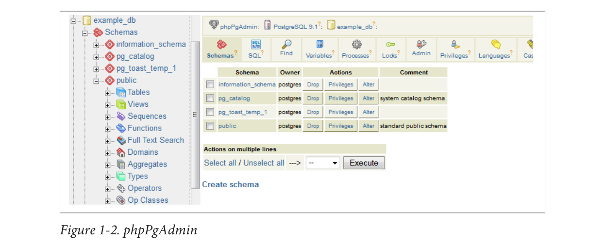
Figure 1-2. phpPgAdmin
Adminer
If you manage other databases besides PostgreSQL and are looking for a unified tool,
Adminer might fit the bill. Adminer is a lightweight, open source PHP application with
options for PostgreSQL, MySQL, SQLite, SQL Server, and Oracle, all delivered through
a single interface.
One unique feature of Adminer we’re impressed with is the relational diagrammer that
can produce a graphical layout of your database schema, along with a linear represen‐
tation of foreign key relationships. Another hassle-reducing feature is that you can de‐
ploy Adminer as a single PHP file.
Figure 1-3 is a screenshot of the login screen and a snippet from the diagrammer output.
Many users stumble in the login screen of Adminer because it doesn’t include a separate
text box for indicating the port number. If PostgreSQL is listening on the standard 5432
port, you need not worry. But if you use some other port, append the port number to
the server name with a colon, as shown in Figure 1-3.
Adminer is sufficient for straightforward querying and editing, but because it’s tailored
to the lowest common denominator among database products, you won’t find man‐
agement applets that are specific to PostgreSQL for such tasks as creating new users,
granting rights, or displaying permissions. If you’re a DBA, stick to pgAdmin but make
Adminer available.
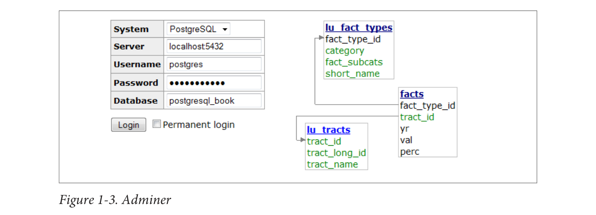
Figure 1-3. Adminer
PostgreSQL Database Objects
So you installed PostgreSQL, fired up pgAdmin, and expanded its browse tree. Before
you is a bewildering display of database objects, some familiar and some completely
foreign. PostgreSQL has more database objects than most other relational database
products (and that’s before add-ons). You’ll probably never touch many of these objects,
but if you dream up something new, more likely than not it’s already implemented using
one of those esoteric objects. This book is not even going to attempt to describe all that
you’ll find in a standard PostgreSQL install. With PostgreSQL churning out features at
breakneck speed, we can’t imagine any book that could possibly do this. We’ll limit our
discussion to those objects that you should be familiar with:
service
PostgreSQL installs as a service (daemon) on most OSes. More than one service
can run on a physical server as long as they listen on different ports and don’t share
data storage. In this book, we use the terms server and service interchangeably,
because most people stick to one service per physical server.
database
Each PostgreSQL service houses many individual databases.
Schemas are part of the ANSI SQL standard. They are the immediate next level of
organization within each database. If you think of the database as a country, schemas
would be the individual states (or provinces, prefectures, or departments, depend‐
ing on the country.) Most database objects first belong in a schema, which belongs
in a database. PostgreSQL automatically creates a schema named public when you
create a new database. PostgreSQL puts everything you create into public by default
unless you change the search_path of the database (discussed in an upcoming
item). If you have just a few tables, this is fine. But if you have thousands of tables,
you’ll need to put them in different schemas.
catalog
Catalogs are system schemas that store PostgreSQL built-in functions and meta‐
data. Each database is born containing two catalogs: pg_catalog, which has all the
functions, tables, system views, casts, and types packaged with PostgreSQL; and
information_schema, which consists of ANSI standard views that expose Post‐
greSQL metainformation in a format dictated by the ANSI SQL standard.
PostgreSQL practices what it preaches. You will find that PostgreSQL itself is built
atop a self-replicating structure. All settings to fine-tune servers are kept in system
tables that you’re free to query and modify. This gives PostgreSQL a level of flexi‐
bility (or hackability) impossible to attain by proprietary database products. Go
ahead and take a close look inside the pg_catalog schema. You’ll get a sense of how
PostgreSQL is put together. If you have superuser privileges, you have the right to
make updates to the schema directly (and to screw up your installation royally).
The information_schema catalog is one you’ll also find in MySQL and SQL Server.
The most commonly used views in the PostgreSQL information_schema are columns,
which lists all table columns in a database; tables, which lists all tables (in‐
cluding views) in a database; and views, which lists all views and the associated SQL
to build rebuild the view. Again, you will also find these views in MySQL and SQL
Server, with a subset of columns that PostgreSQL has. PostgreSQL adds a couple
more columns, such as columns.udt_name, to describe custom data type columns.
Although columns, tables, and views are all implemented as PostgreSQL views,
pgAdmin shows them in an information_schema→Catalog Objects branch.
variable
Part of what PostgreSQL calls the Grand Unified Configuration (GUC), variables
are various options that can be set at the service level, database level, and other
levels. One option that trips up a lot of people is search_path, which controls which
schema assets don’t need to be prefixed with the schema name to be used. We discuss
search_path in greater detail in “Using Schemas” on page 27.
Introduced in PostgreSQL 9.1, this feature allows developers to package functions,
data types, casts, custom index types, tables, GUCs, etc. for installation or removal
as a unit. Extensions are similar in concept to Oracle packages and are the preferred
method for distributing add-ons. You should follow the developer’s instructions on
how to install the extension files onto your server. This usually involves installing
the extension binaries and scripts. Once done, you must enable the extension for
each database separately.
You don’t need to enable every extension you use in all databases. For example, if
you need advanced text search in only one of your databases, enable fuzzystrmatch
just for that database. When you add extensions, you have a choice of the
schemas they will go in. If you take the default, extension objects will litter the
public schema. This could make that schema unwieldy, especially if you store your
own database objects in there. We recommend that you create a separate schema
that will house all extensions and even create a separate schema to hold each large
extension. Include the new schemas in the search_path variable of the database so
you can use the functions without specifying which schema they’re in. Some ex‐
tensions dictate which schema they should be installed in. For those, you won’t be
able to change the schema. For example, many language extensions, such as plv8,
must be installed in pg_catalog.
table
Tables are the workhorses of any database. In PostgreSQL, tables are first of all
citizens of their respective schemas, before being citizens of the database.
PostgreSQL tables have two remarkable talents. First, they recognize parents and
children. This hierarchy streamlines your database design and can save you endless
lines of looping code when querying similar tables. We cover inheritance in
Example 6-2.
Second, creating a table automatically results in the creation of an accompanying
custom data type. In other words, you can define a complete data structure as a
table and then use it as a column in another table. See “Custom and Composite
Data Types” on page 103 for a thorough discussion of composite types.
foreign table and foreign data wrapper
Foreign tables showed their faces in version 9.1. These are virtual tables linked to
data outside a PostgreSQL database. Once you’ve configured the link, you can query
them like any other tables. Foreign tables can link to CSV files, a PostgreSQL table
on another server, a table in a different product such as SQL Server or Oracle, a
NoSQL database such as Redis, or even a web service such as Twitter or Salesforce.
Configuring foreign tables is done through foreign data wrappers (FDWs). FDWs
contain the magic handshake between PostgreSQL and external data sources. Their
implementation follows the standards decreed in SQL/Management of External
Data (MED).
Many programmers have already developed FDWs for popular data sources that
they freely share. You can try your hand at creating your own FDWs as well. (Be
sure to publicize your success so the community can reap the fruits of your toil.)
Install FDWs using the extension framework. Once they’re installed, pgAdmin will
show them listed under a node called Foreign Data Wrappers.
tablespace
A tablespace is the physical location where data is stored. PostgreSQL allows ta‐
blespaces to be independently managed, so you can easily move databases or even
single tables and indexes to different drives.
view
Most relational database products offer views for abstracting queries and allow for
updating data via a view. PostgreSQL offers the same features and allows for auto-
updatable single-table views in versions 9.3 and later that don’t require any extra
writing of rules or triggers to make them updatable. For more complex logic or
views involving more than one table, you still need triggers or rules to make the
view updatable. Version 9.3 introduced materialized views, which cache data to
speed up commonly used queries. See “Materialized Views” on page 123.
function
Functions in PostgreSQL can return a scalar value or sets of records. You can also
write functions to manipulate data; when functions are used in this fashion, other
database engines call them stored procedures.
language
Functions are created in procedural languages (PLs). Out of the box, PostgreSQL
supports three: SQL, PL/pgSQL, and C. You can install additional languages using
the CREATE EXTENSION or CREATE PRODCEDURAL LANGUAGE commands. Languages
currently in vogue are Python, JavaScript, Perl, and R. You’ll see plenty of examples
in Chapter 8.
operator
Operators are symbolic, named functions (e.g., =, &&) that take one or two argu‐
ments and that have the backing of a function. In PostgreSQL, you can invent your
own. When you define a custom type, you can also define operators that work with
that custom type. For example, you can define the = operator for your type. You can
even define an operator with operands of two disparate types.
data type (or just type)
Every database product has a set of data types that it works with: integers, characters,
arrays, etc. PostgreSQL has something called a composite type, which is a type that
has attributes from other types. Imaginary numbers, polar coordinates, and tensors
are examples of composite types. If you define your own type, you can define new
functions and operators to work with the type: div, grad, and curls, anyone?
cast
Casts are prescriptions for converting from one data type to another. They are
backed by functions that actually perform the conversion. What is rare about Post‐
greSQL is the ability to create your own casts and thus change the default behavior
of casting. For example, imagine you’re converting zip codes (which in the United
States are five digits long) to character from integer. You can define a custom
cast that automatically prepends a zero when the zip is between 1000 and 9999.
Casting can be implicit or explicit. Implicit casts are automatic and usually expand
from a more specific to a more generic type. When an implicit cast is not offered,
you must cast explicitly.
sequence
A sequence controls the autoincrementation of a serial data type. PostgresSQL au‐
tomatically creates sequences when you define a serial column, but you can easily
change the initial value, increment, and next value. Because sequences are objects
in their own right, more than one table can use the same sequence object. This
allows you to create a unique key value that can span tables. Both SQL Server and
Oracle have sequence objects, but you must create them manually.
row or record
We use the terms rows and records interchangeably. In PostgreSQL, rows can be
treated independently from their respective tables. This distinction becomes ap‐
parent and useful when you write functions or use the row constructor in SQL.
trigger
You will find triggers in most enterprise-level databases; triggers detect data-change
events. When PostgreSQL fires a trigger, you have the opportunity to execute trigger
functions in response. A trigger can run in response to particular types of statements
or in response to changes to particular rows, and can fire before or after a data-
change event.
Trigger technology is evolving rapidly in PostgreSQL. Starting in version 9.0, a WITH
clause lets you specify a Boolean WHEN condition, which is tested to see whether the
trigger should be fired. Version 9.0 also introduced the UPDATE OF clause, which
allows you to specify which column(s) to monitor for changes. When the column
changes, the trigger is fired, as demonstrated in Example 8-11. In version 9.1, a data
change in a view can fire a trigger. In version 9.3, data definition language (DDL)
events can fire triggers. The DDL events that can fire triggers are listed in the Event
Trigger Firing Matrix. In version 9.4, triggers for foreign tables were introduced.
See CREATE TRIGGER for more details about these options.
Rules are instructions to substitute one action for another. PostgreSQL uses rules
internally to define views. As an example, you could create a view as follows:
CREATEVIEW vw_pupils ASSELECT * FROM pupils WHERE active;
Behind the scenes, PostgresSQL adds an INSTEAD OF SELECT rule dictating that
when you try to select from a table called vw_pupils, you will get back only rows
from the pupils table in which the active field is true.
A rule is also useful in lieu of certain simple triggers. Normally a trigger is called
for each record in your update/insert/delete statement. A rule, instead, rewrites the
action (your SQL statement) or inserts additional SQL statements on top of your
original. This avoids the overhead of touching each record separately. For changing
data, triggers are the preferred method of operation. Many PostgreSQL users con‐
sider rules to be legacy technology for action-based queries because they are much
harder to debug when things go wrong, and you can write rules only in SQL, not
in any of the other PLs.
What’s New in Latest Versions of PostgreSQL?
The PostgreSQL release cycle is fairly predictable, with major releases slated for each
September. Each new version adds enhancements to ease of use, stability, security, per‐
formance, and avant-garde features. The upgrade process gets simpler with each new
version. The lesson here? Upgrade, and upgrade often. For a summary chart of key
features added in each release, check the PostgreSQL Feature Matrix.
Why Upgrade?
If you’re using PostgreSQL 8.4 or below, upgrade now! Version 8.4 entered end-of-life
(EOL) support in July 2014. Details about PostgreSQL EOL policy can be found at the
PostgreSQL Release Support Policy. EOL is not a place you want to be. New security
updates and fixes to serious bugs will no longer be available. You’ll need to hire speci‐
alized PostgreSQL core consultants to patch problems or to implement workarounds
—probably not a cheap proposition, assuming you can even locate someone willing to
do the work.
Regardless of which major version you are running, you should always try to keep up
with the latest micro versions. An upgrade from, say, 8.4.17 to 8.4.21, requires just binary
file replacement and a restart. Micro versions only patch bugs. Nothing will stop work‐
ing after a micro upgrade, and performing a micro upgrade can in fact save you grief.
At the time of writing, PostgreSQL 9.3 is the latest stable release, and 9.4 is in beta with
binaries available for the brave. The following features have been committed and are
available in the beta release:
Materialized views are improved. In version 9.3, refreshing a materialized view locks
it for reading for the entire duration of the refresh. But refreshing materialized views
usually takes time, so making them inaccessible during a refresh greatly reduces
their usability in production environments. Version 9.4 removes the lock so you
can still read the data while the view is being refreshed. One caveat is that for a
materialized view to utilize this feature, it must have a unique index on it.
The SQL:2008 analytic functions percentile_disc (percentile discrete) and
percentile_cont (percentile continuous) are added, with the companion
WITHIN GROUP (ORDER BY…) SQL construct. Examples are detailed in
Depesz ORDERED SET WITHIN GROUP Aggregates. These functions give you a built-in fast median
function. For example, if we have test scores and want to get the median score
(median is 0.5) and 75 percentile score, we would write this query:
SELECT subject, percentile_cont(ARRAY[0.5, 0.75])
WITHIN GROUP (ORDER BY score) As med_75_score
FROM test_scores GROUP BY subject;
PostgreSQL’s implementation of percentile_cont and percentile_disc can take
an array or a single value between 0 and 1 that corresponds to the percentile values
desired and correspondingly returns an array of values or a single value. The
ORDER BY score says that we are interested in getting the score field values corresponding
to the designated percentiles.
WITH CHECK OPTION syntax for views allows you to ensure that an update/insert on
a view cannot happen if the resulting data is no longer visible in the view. We
demonstrate this feature in Example 7-2.
A new data type—jsonb, a JavaScript Object Notation (JSON) binary type replete
with index support—was added. jsonb allows you to index a full JSON document
and speed up retrieval of subelements. For details, see “JSON” on page 96, and check
out these blog posts: “Introduce jsonb: A Structured Format for Storing JSON,” and
“jsonb: Wildcard Query.”
Query speed for the Generalized Inverted Index (GIN) has improved, and GIN
indexes have a smaller footprint. GIN is gaining popularity and is particularly handy
for full text searches, trigrams, hstores, and jsonb. You can also use it in lieu of B-
Tree in many circumstances, and it is generally a smaller index in these cases. Check
out GIN as a Substitute for Bitmap Indexes.
More JSON functions are available. See Depesz: New JSON functions.
You can easily move all assets from one tablespace to another using the syntax
ALTER TABLESPACE old_space MOVE ALL TO new_space;.
You can use a number for set-returning functions. Often, you need a row number
when extracting denormalized data stored in arrays, hstore, composite types, and
so on. Now you can add the system column ordinality (an ANSI SQL standard)
to your output. Here is an example using an hstore object and the each function
that returns a key-value pair:
SELECT ordinality, key, value
FROM each('breed=>pug,cuteness=>high'::hstore) WITH ordinality;
You can use SQL to alter system-configuration settings. The ALTER system SET ...
construct allows you to set global-system settings normally set in postgresql.conf,
as detailed in “postgresql.conf” on page 18.
Triggers can be used on foreign tables. When someone half a world away edits data,
your trigger will catch this event. We’re not sure how well this will perform with the
expected latency in foreign tables when the foreign table is very far away.
A new unnest function predictably allocates arrays of different sizes into columns.
A ROWS FROM construct allows the easy use of multiple set-returning functions in a
series, even if they have an unbalanced set of elements in each set:
SELECT * FROMROWSFROM (
jsonb_each('{"a":"foo1","b":"bar"}'::jsonb),
jsonb_each('{"c":"foo2"}'::jsonb)) x
(a1,a1_val,a2_val);
You can code dynamic background workers in C to do work as needed. A trivial
example is available in the version 9.4 source code in the contrib/worker_spi direc‐
tory.
PostgreSQL 9.3: New Features
The notable features that first appeared in version 9.3 (released in 2013) are:
The ANSI SQL standard LATERAL clause was added. A LATERAL construct allows
FROM clauses with joins to reference variables on the other side of the join. Without
this, cross-referencing can take place only in the join conditions. LATERAL is indis‐
pensable when you work with functions that return sets, such as unnest, generate_series,
regular expression table returns, and numerous others. See “Lateral
Joins” on page 139.
Parallel pg_dump is available. Version 8.4 brought us parallel restore, and now we
have parallel backup to expedite backing up of huge databases.
Materialized view (see “Materialized Views” on page 123) was unveiled. You can now
persist data into frequently used views to avoid making repeated retrieval calls for
slow queries.
Views are updatable automatically. You can use an UPDATE statement on a single
view and have it update the underlying tables, without needing to create triggers or
rules.
Views now accommodate recursive common table expressions (CTEs).
More JSON constructors and extractors are available. See “JSON” on page 96.
Indexed regular-expression search is enabled.
A 64-bit large object API allows storage of objects that are terabytes in size. The
previous limit was a mere 2 GB.
The postgres_fdw driver, introduced in “Querying Other PostgreSQL Servers” on
page 187, allows both reading and writing to other PostgreSQL databases (even on
remote servers with lower versions of PostgreSQL). Along with this change is an
upgrade of the FDW API to implement writable functionality.
Numerous improvements were made to replication. Most notably, replication is
now architecture-independent and supports streaming-only remastering.
Using C, you can write user-defined background workers for automating database
tasks.
You can use triggers on data-definition events.
A new watch psql command is available. See “Watching Statements” on page 50.
You can use a new COPY DATA command both to import from and export to external
programs. We demonstrate this in “Copy from/to Program” on page 53.
PostgreSQL 9.2: New Features
The notable features released with version 9.2 (September 2012) are:
You can perform index-only scans. If you need to retrieve columns that are already
a part of an index, PostgreSQL skips the unnecessary trip back to the table. You’ll
see significant speed improvement in key-value queries as well as aggregates that
use only key values such as COUNT(*).
In-memory sort operations are improved by as much as 20%.
Improvements were made in prepared statements. A prepared statement is now
parsed, analyzed, and rewritten, but you can skip the planning to avoid being tied
down to specific argument inputs. You can also now save the plans of a prepared
statement that depend on arguments. This reduces the chance that a prepared
statement will perform worse than an equivalent ad hoc query.
Cascading streaming replication supports streaming from a slave to another slave.
SP-GiST, another advance in GiST index technology using space filling trees, should
have enormous positive impact on extensions that rely on GiST for speed.
Using ALTER TABLE IF EXISTS, you can make changes to tables without needing
to first check to see whether the table exists.
Many new variants of ALTER TABLE ALTER TYPE commands that used to require
dropping and recreating the table were added. More details are available at More
Alter Table Alter Types.
More pg_dump and pg_restore options were added. For details, read our article
“9.2 pg_dump Enhancements”.
PL/V8 joined the ranks of procedural languages. You can now use the ubiquitous
JavaScript to compose functions.
JSON rose to the level of a built-in data type. Tagging along are functions like
row_to_json and array_to_json. This should be a welcome addition for web
developers writing Ajax applications. See “JSON” on page 96 and Example 7-16.
You can create new range data type classes composed of two values to constitute a
range, thereby eliminating the need to cludge range-like functionality, especially in
temporal applications. The debut of range type was chaparoned by numerous range
operators and functions. Exclusion contraints joined the party as the perfect guardian
for range types.
SQL functions can now reference arguments by name instead of by number. Named
arguments are easier on the eyes if you have more than one.
PostgreSQL 9.1: New Features
With version 9.1, PostgreSQL rolled out enterprise features to compete head-on with
stalwarts like SQL Server and Oracle:
More built-in replication features, including synchronous replication.
Extension management using the new CREATE EXTENSION and ALTER EXTENSION
commands. The installation and removal of extensions became a breeze.
ANSI-compliant foreign data wrappers for querying disparate, external data
sources.
Writable CTEs. The syntactical convenience of CTEs now works for UPDATE and
INSERT queries.
Unlogged tables, which makes writes to tables faster when logging is unnecessary.
Triggers on views. In prior versions, to make views updatable, you had to resort to
DO INSTEAD rules, which could be written only in SQL, whereas with triggers, you
have many PLs to choose from. This opens the door for more complex abstraction
using views.
Improvements added by the KNN GiST index to popular extensions, such as full-
text searchs, trigrams (for fuzzy search and case-insensitive search), and PostGIS.
Database Drivers
If you’re using or plan to use PostgreSQL, chances are that you’re not going to use it in
a vacuum. To have it interact with other applications,you need a database driver. Post‐
greSQL enjoys a generous number of freely available drivers supporting many pro‐
gramming languages and tools. In addition, various commercial organizations provide
drivers with extra bells and whistles at modest prices. Several popular open source
drivers are available:
PHP is a common language used to develop web applications, and most PHP dis‐
tributions come packaged with at least one PostgreSQL driver: the old pgsql driver
and the newer pdo_pgsql. You may need to enable them in your php.ini, but they’re
usually already installed.
For Java development, the JDBC driver keeps up with latest PostgreSQL versions.
Download it from PostgreSQL.
For .NET (both Microsoft or Mono), you can use the Npgsql driver. Both the source
code and the binary are available for .NET Framework 3.5 and later, Microsoft
Entity Framework, and Mono.NET.
If you need to connect from Microsoft Access, Office productivity software, or any
other products that support Open Database Connectivity (ODBC), download driv‐
ers from PostgreSQL. The link leads you to both 32-bit and 64-bit ODBC drivers.
LibreOffice 3.5 (and later) comes packaged with a native PostgreSQL driver. For
OpenOffice and older versions of LibreOffice, you can use the JDBC driver or the
SDBC driver. You can learn more details from our article OO Base and PostgreSQL.
Python has support for PostgreSQL via various Python database drivers; at the
moment, psycopg is the most popular. Rich support for PostgreSQL is also available
in the Django web framework
If you use Ruby, connect to PostgreSQL using rubygems pg.
You’ll find Perl’s connectivity support for PostgreSQL in the DBI and the DBD::Pg
drivers. Alternatively, there’s the pure Perl DBD::PgPP driver from CPAN.
Node.js is a framework for running scalable network programs written in Java‐
Script. It is built on the Google V8 engine. There are three PostgreSQL drivers
There will come a day when you need additional help. Because that day always arrives
earlier than expected, we want to point you to some resources now rather than later.
Our favorite is the lively mailing list specifically designed for helping new and old users
with technical issues. First, visit PostgreSQL Help Mailing Lists. If you are new to Post‐
greSQL, the best list to start with is PGSQL-General Mailing List. If you run into what
appears to be a bug in PostgreSQL, report it at PostgreSQL Bug Reporting.
Notable PostgreSQL Forks
The MIT/BSD-style licensing of PostgreSQL makes it a great candidate for forking.
Various groups have done exactly that over the years. Some have contributed their
changes back to the original project.
Netezza, a popular database choice for data warehousing, was a PostgreSQL fork at
inception. Similarly, the Amazon Redshift data warehouse is a fork of a fork of Post‐
greSQL. GreenPlum, used for data warehousing and analyzing petabytes of information,
was a spinoff of Bizgres, which focused on Big Data. PostgreSQL Advanced Plus by
EnterpriseDB is a fork of the PostgreSQL codebase that adds Oracle syntax and com‐
patibility features to woo Oracle users. EnterpriseDB ploughs funding and development
support to the PostgreSQL community. For this, we’re grateful. Their Postgres Plus
Advanced Server is fairly close to the most recent stable version of PostgreSQL.
All the aforementioned clones are proprietary, closed source forks. tPostgres, Postgres-
XC, and Big SQL are three budding forks with open source licensing that we find in‐
teresting. These forks all garner support and funding from OpenSCG. The latest version
of tPostgres is built on PostgreSQL 9.3 and targets Microsoft SQL Server users. For
instance, with tPostgres, you use the packaged pgtsql language extension to write func‐
tions that use T-SQL. The pgtsql language extension is compatible with PostgreSQL
proper, so you can use it in any PostgreSQL 9.3 installation. Postgres-XC is a cluster
server providing write-scalable, synchronous multimaster replication. What makes
Postgres-XC special is its support for distributed processing and replication. It is now
at version 1.0. Finally, BigSQL is a marriage of the two elephants: PostgreSQL and Ha‐
doop with Hive. BigSQL comes packaged with hadoop_fdw, an FDW for querying and
updating Hadoop data sources.
Another recently announced PostgreSQL open source fork is Postgres-XL (the XL
stands for eXtensible Lattice), which has built-in Massively Parallel Processing (MPP)
capability and data sharding across servers.
This chapter covers what we deem to be the most common activities for basic admin‐
istration of a PostgreSQL server: role and permission management, database creation,
add-on installation, backup, and restore. We assume you’ve already installed Post‐
greSQL and have administration tools at your disposal.
Configuration Files
The main configuration files that control basic operations of a PostgreSQL server in‐
stance are:
postgresql.conf
Controls general settings, such as memory allocation, default storage location for
new databases, the IP addresses that PostgreSQL listens on, location of logs, and
plenty more. Version 9.4 introduced an additional file called postgresql.auto.conf,
which is created or rewritten whenever you use the new ALTER SYSTEM SQL com‐
mand. The settings in that file override the postgresql.conf file.
pg_hba.conf
Controls security. It manages access to the server, dictating which users can log in
to which databases, which IP addresses or groups of addresses can connect, and
which authentication scheme to expect.
pg_ident.conf
If present, maps an authenticated OS login to a PostgreSQL user. People sometimes
map the OS root account to the postgres superuser account. Each authentication
line in pg_hba.conf can dictate usage of a different pg_ident.conf file.
If you accepted the default installation options, you find these files in the main Post‐
greSQL data folder. You can edit them using any text editor, or using the Admin Pack
in pgAdmin. Download instructions are in “Editing postgresql.conf and pg_hba.conf
from pgAdmin” on page 61. If you are ever unsure where these files are, run the
Example 2-1 query as a superuser while connected to any of your databases.
Example 2-1 Location of configuration files
SELECT name, setting FROM pg_settings WHERE category = 'File Locations';
name | setting
-------------------+------------------------------------------
config_file | /etc/postgresql/9.3/main/postgresql.conf
data_directory | /var/lib/postgresql/9.3/main
external_pid_file | /var/run/postgresql/9.3-main.pid
hba_file | /etc/postgresql/9.3/main/pg_hba.conf
ident_file | /etc/postgresql/9.3/main/pg_ident.conf
postgresql.conf
postgresql.conf controls the life-sustaining settings of the PostgreSQL server instance as
well as default settings for new databases. You can override many settings at the database,
user, session, and even function levels. You’ll find many details on how to fine-tune your
server by tweaking settings in the article Tuning Your PostgreSQL Server.
An easy way to check the current settings is to query the pg_settings view, as we
demonstrate in Example 2-2. We provide a synopsis of key setting and description of
the key columns, but to delve deeper, we suggest you check the official documentation,
pg_settings.
Example 2-2 Key settings
SELECT name, context (1)
, unit (2)
,
setting, boot_val, reset_val (3)
FROM pg_settings
WHERE name IN ( 'listen_addresses', 'max_connections', 'shared_buffers', 'effective_cache_size', 'work_mem', 'maintenance_work_mem'
)
ORDER BY context, name;
name | context | unit | setting | boot_val | reset_val
----------------------+------------+------+---------+-----------+-----------
listen_addresses | postmaster | | * | localhost | *
max_connections | postmaster | | 100 | 100 | 100
shared_buffers | postmaster | 8kB | 131584 | 1024 | 131584
effective_cache_size | user | 8kB | 16384 | 16384 | 16384
maintenance_work_mem | user | kB | 16384 | 16384 | 16384
work_mem | user | kB | 5120 | 1024 | 5120
(1) If context is set to postmaster, changing this parameter requires a restart of
the PostgreSQL service. If it’s set to user, changes just require a reload to take
effect globally. Restarting terminates active connections, whereas reloading does
not.
②unit tells you the measurement unit reported by the settings. This is sometimes
confusing when it comes to memory because, as you can see in Example 2-2,
some are reported in 8 KB units and some just in KB. In postgresql.conf, usually,
you deliberately set these to a unit of measurement of your choice; 128 MB is a
good candidate. You can also get a more human-readable display of a particular
setting by running a statement such as SHOW effective_cache_size; or SHOW
maintenance_work_mem;, both of which display settings in MBs. If you want to
see all settings in friendly units, use SHOW ALL.
③setting is the current setting; boot_val is the default setting; reset_val is the
new setting if you were to restart or reload the server. Make sure that after any
change you make to postgresql.conf, setting and reset_val are the same. If they
are not, the server is still in need of a restart or reload.
Pay special attention to the following network settings in postgresql.conf; changing their
values requires a service restart.
If you are running version 9.4 or later, the same-named settings in
postgresql.auto.conf take precedence over the ones in postgresql.conf.
listen_addresses
Informs PostgreSQL which IP addresses to listen on. This usually defaults to localhost
or local, but many people change it to *, meaning all available IP ad‐
dresses.
port
Defaults to 5432. If you happen to be on Red Hat or CentOS, make changes to the
PGPORT value /etc/sysconfig/pgsql/your_service_name_here to change the listening
port.
max_connections
The maximum number of concurrent connections allowed.
In our experience, we found the following three settings to affect performance across
the board and might be worthy of experimentation for your particular setup:
shared_buffers
Defines the amount of memory shared among all connections to store recently
accessed pages. This setting profoundly affects the speed of your queries. You want
this setting to be fairly high, probably as much as 25% of your onboard memory.
However, you’ll generally see diminishing returns after more than 8 GB. Changes
require a restart.
An estimate of how much memory you expect to be available in the OS and Post‐
greSQL buffer caches. This setting has no effect on actual allocation, but query
planner figures in this setting to guess whether intermediate steps and query output
would fit in RAM. If you set this much lower than available RAM, the planner may
forgo using indexes. With a dedicated server, setting effective_cache_size to half
or more of your onboard memory would be a good start. Changes require at least
a reload.
work_mem
Controls the maximum amount of memory allocated for operations such as sorting,
hash join, and table scans. The optimal setting depends on how you’re using the
database, how much memory you have to spare, and whether your server is dedi‐
cated to PostgreSQL or not. If you have many users running simple queries, you
want this setting to be relatively low. How high you set this also depends on how
much RAM you have to begin with. A good article to read on work_mem is Under‐
standing work_mem. Changes require at least a reload.
maintenance_work_mem
The total memory allocated for housekeeping activities such as vacuuming (prun‐
ing records marked for delete). You shouldn’t set it higher than about 1 GB. Reload
after changes.
These settings can also be set at the database, users, and function levels. For example,
you might want to set work_mem higher for an SQL whiz running sophisticated queries.
Similarly, if you have one function that is sort-intensive, you could raise the work_mem
setting just for it.
New in PostgreSQL 9.4 is ability to change settings using the new ALTER SYSTEM SQL
command. For example, to set the work_mem globally, enter the following:
ALTERSYSTEMsetwork_mem = 8192;
Depending on the particular setting changed, you may need to restart the service. If just
need to reload it, here’s a convenient command:
SELECT pg_reload_conf();
PostgreSQL records changes made through ALTER SYSTEM in an override file called
postgresql.auto.conf, not directly into postgresql.conf.
“I edited my postgresql.conf and now my server is broken.” The easiest way to figure out what you screwed up is to look at the log file, located at
the root of the data folder, or in the pg_log subfolder. Open the latest file and read what
the last line says. The raised error is usually self-explanatory.
A common culprit is setting shared_buffers too high. Another suspect is an old
postmaster.pid left over from a failed shutdown. You can safely delete this file, which is
located in the data cluster folder, and try restarting again.
pg_hba.conf
The pg_hba.conf file controls which and how users can connect to PostgreSQL databa‐
ses. Changes to the file require a reload or a server restart to take effect. A typical
pg_hba.conf looks like Example 2-3.
Example 2-3 Sample pg_hba.conf
# TYPE DATABASE USER ADDRESS METHOD
# IPv4 local connections:
host all all 127.0.0.1/32 ident ①
# IPv6 local connections:
host all all ::1/128 ② trust
host all all 192.168.54.0/24 ③ md5
hostssl ④ all all 0.0.0.0/0 md5
# Allow replication connections from localhost, by a user with the
# replication privilege. ⑤
#host replication postgres 127.0.0.1/32 trust
#host replication postgres ::1/128 trust
Authentication method. The usual choices are ident, trust, md5, and password.
Version 9.1 introduced the peer authentication method. The ident and peer
options are available only on Linux, Unix, and the Mac, not on Windows.
More esoteric options, such as gss, radius, ldap, and pam, may not always be
installed.
IPv4 syntax for defining network range. The first part—in this case,
192.168.54.0—is the network address, followed by /24 as the bit mask. In our
pg_hba.conf, we allow anyone in our subnet of 192.168.54.0 to connect as long
as they provide a valid md5 hashed password.
IPv6 syntax for defining network range. This applies only to servers with IPv6
support and may prevent pg_hba.conf from loading if you add this section
without actually having IPv6 networking.
SSL connection rule. In our example, we allow anyone to connect to our server
as long as they connect using SSL and have a valid md5 password.
Definition of a range of IP addresses allowed to replicate with this server. This
is new in version 9.0. These lines are remarked out in this example.
For each connection request, the postgres service checks the pg_hba.conf file from the
top down. As soon as a rule granting access is encountered, processing stops and the
connection is allowed. As soon as a rule rejecting access is encountered, processing stops
and the connection is denied. If the end of the file is reached without any matching
rules, the connection is denied. A common mistake people make is to not put the rules
in the proper order. For example, if you put +0.0.0.0/0 reject+ before +127.0.0.1/32trust+, local users won’t be able to connect, even though a rule is in place allowing them
to do so.
“I edited my pg_hba.conf and now my server is broken.”
Don’t worry. This happens quite often, but it’s easily recoverable. This error is generally
caused by typos or by adding an unavailable authentication scheme. When the postgres
service can’t parse pg_hba.conf file, it blocks all access for safety or won’t even start
up. The easiest way to figure out what you did wrong is to read the log file. This is located
in the root of the data folder or in the pg_log subfolder. Open the latest file and read the
last line. The error message is usually self-explanatory. If you’re prone to slippery fingers,
back up the file prior to editing.
Authentication methods
PostgreSQL gives you many choices for authenticating users—probably more than any
other database product. Most people stick with the most popular ones: trust, peer,
ident, md5, and password. There is also reject, which applies an immediate denial.
Authentication methods stipulated in pg_hba.conf serve as gatekeepers to the entire
PostgreSQL server. Users or devices must still meet role and database access restrictions
after connecting.
For more information on the various authentication methods, refer to PostgreSQL Client
Authentication. The most commonly used authentication methods are:
trust
The least secure of the authentication schemes. It allows people to self-identify and
doesn’t ask for a password. As long as the request meets the IP address, user, and
database criteria, the user can connect. You should limit trust to local connections
or private network connections. Even then it’s possible for someone to spoof IP
addresses, so the more security-minded among us discourage its use entirely. Nev‐
ertheless, it’s the most common for PostgreSQL installed on a desktop for single-
user local access where security is not as much of a concern. The username defaults
to the logged-in OS user if not specified.
md5
Very common, requiring an md5-encrypted password to connect.
password
Uses clear-text password authentication.
ident
Uses pg_ident.conf to see whether the OS account of the user trying to connect has
a mapping to a PostgreSQL account. No password is checked.
Uses the client’s OS name from the kernel. It is available only for Linux, BSD, Mac
OS X, and Solaris, and can be used only for local connections.
You can elect more than one authentication method, even for the same database. Just
keep in mind that pg_hba.conf is read from top to bottom.
Reloading the Configuration Files
Many, but not all, changes to configuration files require a restart of the postgres
service. Other changes take effect when you perform a reload, which won’t kick out active con‐
nections. Open a console window and run this command to reload:
pg_ctl reload -D your_data_directory_here
Or, if you have PostgreSQL installed as a service in RedHat Enterprise Linux, CentOS,
or Ubuntu, enter instead:
service postgresql-9.3 reload
postgresql-9.3 is the name of your service. The service, particularly for older versions,
is sometimes just called postgresql sans the version number.
You can also log in as a superuser to any database and execute the following SQL:
SELECT pg_reload_conf();
You can also reload from pgAdmin; see “Editing postgresql.conf and pg_hba.conf from
pgAdmin” on page 61.
Managing Connections
Every once in a while, someone else (never you, of course) will execute a query that he
didn’t intend to and end up hogging resources. You could also run into a query that’s
taking much longer than what you have patience for. If one of these things happens,
you’ll want to cancel the query on the connection or kill the connection altogether.
Furthermore, before you can perform a full backup or restore of a database or restore
a particular table that’s in use, you’ll need to kill all affected connections.
Keep in mind that killing is not a graceful end and should be used sparingly. Your client
application should catch queries that have gone haywire to begin with. Out of politeness,
you probably should inform the connected role that you’re about to terminate its con‐
nection or do your dirty deed after hours when no one is around.
More often than we’d like, we find ourselves resorting to three SQL commands to cancel
running queries and terminate connections. Here is a typical sequence to follow:
Retrieve a listing of recent connections and process IDs:
Additionally, the command provides details of the last query running on each connection,
the connected user (usename), the database (datname) in use, and the start
times of the query. You need this view to grab the process IDs of connections that
you want to terminate.
2. Now cancel all active queries on a connection:
SELECT pg_cancel_backend(procid)
This does not terminate the connection itself, though.
3. Kill the connection:
SELECT pg_terminate_backend(procid)
If you have not canceled the queries on the connection, they are all rudely terminated
now. This will be your weapon of choice prior to a restore to prevent an eager
user from immediately restarting a canceled query.
PostgreSQL lets you embed functions that perform actions within a regular SELECT
query. So, although pg_terminate_backend and pg_cancel_backend can act on only
one connection at a time, you can kill multiple connections by wrapping them in a
SELECT. For example, let’s suppose you want to kill all connections belonging to a role
with a single blow. Run this SQL command on version 9.2 and later:
SELECT pg_terminate_backend(pid) FROM pg_stat_activity WHERE usename =
'some_role';
or before version 9.2:
SELECT pg_terminate_backend(procpid) FROM pg_stat_activity WHERE usename =
'some_role';
The pg_stat_activity view has changed considerably since version 9.1 with the renaming
and addition of new columns. procpid is now pid.
Roles
PostgreSQL represents accounts as roles. Roles that can log in are called login roles. Roles
can be members of other roles; roles that contain other roles are called group roles. (And
yes, group roles can be members of other group roles and so on ad infinitum, but don’t
go there unless you have a knack for hierarchical thinking.) Roles that are group and
can log in are called group login roles. However, for easier maintainability and security,
DBAs generally don’t grant login rights to group roles. A role can be designated as
superuser. Superuser roles have unfettered access to the PostgreSQL service.
Recent versions of PostgreSQL no longer use the terms users and
groups. You will still see these terms bandied about on discussion
boards; just know that they mean login roles and group roles re‐
spectively. For backward compatibility, CREATE USER and CREATE
GROUP still work in current version, but shun them and use CREATE
ROLE instead.
Creating Login Roles
When you initialize the data cluster during setup, PostgreSQL creates a single role for
you with the name postgres. (PostgreSQL also creates a namesake database called
postgres.) You can bypass the password setting by mapping an OS root user to the new
role. After you’ve installed PostgreSQL, before you do anything else, you should log in
as postgres using psql or pgAdmin and create other roles. pgAdmin has a graphical
section for creating user roles, but if you want to create one using SQL, execute an SQL
command like the one shown in Example 2-4.
Example 2-4 Creating login roles
CREATE ROLE leo LOGIN PASSWORD 'king' CREATEDB VALID UNTIL 'infinity';
The VALID line is optional and specifies when the role should expire and lose its privi‐
leges; the default is infinity, which means the role never expires. The CREATEDB modi‐
fier grants database creation rights to the new role.
To create a user with superuser rights, do so as shown in Example 2-5. Naturally, you
can create a superuser only if you are a superuser yourself.
Example 2-5 Creating superuser roles
CREATE ROLE regina LOGIN PASSWORD 'queen' SUPERUSER VALID UNTIL '2020-1-1 00:00';
We don’t really want our queen to reign forever, so we added an abdication date.
Creating Group Roles
Group roles generally have no login rights but serve as containers for other roles. This
is merely a best-practice suggestion. Nothing stops you from creating a role that can
both log in and contain other roles.
Create a group role through the following SQL:
CREATE ROLE royalty INHERIT;
Note the use of term INHERIT. This means that any member of royalty will automati‐
cally have rights granted to the royalty role, except for superuser rights. For security,
PostgreSQL never passes on superuser rights.
Add roles to the group role with an SQL statement like:
GRANT royalty TO leo;
GRANT royalty TO regina;
Inheriting rights from group roles
One quirk (or convenience) in PostgreSQL is the ability to specify that a group role not
pass its rights to member roles. To avoid having to remember the default value, you
should always append the INHERIT keyword if you want members to inherit the rights
of the parent role, and NOINHERIT if you don’t want them to inherit the rights of the
parent role.
Some rights can’t be inherited. For example, although you can create a group role that
you mark as superuser, this doesn’t make its member roles superusers; however, those
users can “impersonate” their parent role through the use of SET ROLE, thereby gaining
superuser rights for the duration of the session. For instance, a member of the roy‐
alty group can take on that role through:
SET ROLE royalty;
Keep in mind that this is per-connection session and not a permanent delegation of
rights. To assign noninheritable rights to member roles, you have to do it on a member‐
by-member basis. This is to guard against inadvertently granting superuser rights to a
bunch of roles.
A more powerful impersonation than SET ROLE some_role is SET SESSION AUTHORIZATION
some_role. The main differences between SET ROLE and SET SESSION AUTHORIZATION are:
Only superusers can execute SET SESSION AUTHORIZATION, and it allows them to
impersonate any user regardless of role membership.
SET SESSION AUTHORIZATION changes the values of the current_user and session_user
variables to those of the user being impersonated. SET ROLE changes
only the current_user variable.
Because both the current_user and session_user are changed by SET SESSION
AUTHORIZATION, subsequent SET role commands are limited to those allowed by
the user being impersonated. After SET ROLE, roles can be set to any role that the
original user has rights to impersonate.
This creates a copy, owned by the login role that issued the command, of the template1
default. Any role with CREATEDB rights can create new databases.
Template Databases
A template database is, as the name suggests, a database that serves as a model for other
databases. When you create a new database, PostgreSQL copies all the database settings
and data from the template database into yours.
The default PostgreSQL installation comes with two template databases: template0 and
template1. If you don’t specify a template database to follow when you create a database,
the template1 database is used as the template for the new database.
You should never alter template0 because it is the immaculate mod‐
el that you’ll need to copy from if you screw up your templates. Make
your customizations to template1 or a new template database you
create. You can’t change the encoding and collation of a database you
create from template1 or any other template database you create. So
if you need a different encoding or collation from those in template1,
create the database from template0.
The basic syntax to create a database modeled after a template is:
CREATE DATABASEmy_dbTEMPLATEmy_template_db;
You can pick any database to serve as the template. Additionally, you can mark a database
as a template database. When you do, PostgreSQL restricts the database from being
edited or deleted. Any role with CREATEDB rights can use the database. To make any
database a template, run the following SQL as a superuser:
UPDATE pg_database SET datistemplate = TRUEWHERE datname = 'mydb';
If ever you need to make edits to a template database or drop it entirely, first set datistemplate
to FALSE to enable changes. Don’t forget to change the value back.
Using Schemas
Schemas organize your database into logical groups. If you have more than two dozen
databases on your server, consider cubbyholing them into schemas in a single database.
Objects must have unique names within a schema but need not be unique across the
database. If you cram all your tables into the default public schema, you’ll run into
name clashes sooner or later. It’s up to you how to organize your schemas. For example,
if you are an airline, you can place all tables of planes you own and their maintenance
records into a plane schema. Place all your crew and their personnel information into
another. And create another schema to house passenger-related information.
Another common way to organize schemas is by roles. We found this to be particularly
handy with applications that serve multiple clients whose data must be kept separate.
Suppose that you started a business to build and lease a dog-management system to dog
spas. Through creative advertising, you now have a dozen clients, but your database still
has a single table to store all the dogs. Whimsical government regulation passes, and
now you have to put in iron-clad assurances that one spa cannot see dog information
from another. To comply, you set up one schema per spa and create the same dogs table
in each. You then move the dog records into the schema for the spa where those dogs
are pampered. The final touch is to create different login roles for each schema with the
same name as the schema, so that the doggy_day_care schema would be owned by the
doggy_day_care role, hot_dogs schema would be owned by the hot_dogs role, etc. Dogs
are now completely isolated in their respective schemas. When spas log into your da‐
tabase to make edits, they will be able to access only data in their own schemas.
Wait, it gets better. Because we named our roles to match their respective schemas, we’re
blessed with another useful technique. But we must first introduce the search_path
database variable.
As we mentioned earlier, object names must be unique within a schema, but you can
have same-named objects in different schemas. For example, you have the same table
called dogs in all 12 schemas. When you execute something like SELECT * FROM dogs,
how does PostgreSQL know which schema you’re referring to? The simple answer is to
always prepend the schema name separated from the table name by a dot, such as in
SELECT * FROM doggy_day_care.dogs. Another method is to set the search_path
variable to be something like public, doggy_day_care, hot_dogs. When the query
executes, the planner searches for the dogs table first in the public schema, then doggy_day_care, then hot_dogs.
PostgreSQL has a little-known variable called user that lists the name of the currently
logged-in user. SELECT user returns this name.
Recall how we named our spa schemas to be same as their login roles. We did this so
that we can take advantage of the default search path set in postgresql.conf:
search_path = "$user", public;
Now, if role doggy_day_care logs in, all queries will first look in the doggy_day_care
schema for the tables before moving to public. And most important, the SQL remains
the same for all spas. Even if the spa-management business grows to have thousands or
hundreds of thousands of clients, none of the SQL scripts needs to change. To make
things easier, create a template database with no dogs. Adding a new spa requires just a
few lines to create a schema, database, role, and skeleton tables.
Another practice that we strongly advocate is to create schemas to house extensions
(“Step 2: Installing into a database (version 9.1 and later)” on page 35). When you install
an extension, new tables, functions, data types, and plenty of other relics enter your
server. If they all swarm into the public schema, it gets cluttered. For example, the entire
PostGIS suite of extensions will together add more than a thousand functions. If you’ve
already created a few tables and functions of your own in the public schema, imagine
how frustrating it would be to scan a list of tables and functions trying to find your own
among the thousands.
To create some useful structure, before you install any extensions, create a new schema:
CREATE SCHEMA my_extensions;
Then add your new schema to the search path:
ALTER DATABASE mydb SET search_path='"$user", public, my_extensions';
When you install extensions, be sure to indicate your new schema as their new home.
The SET search_path change will not take effect for existing con‐
nections. You’ll need to reconnect to experience the change.
Privileges
Privileges (often called permissions) can be tricky to administer in PostgreSQL because
of the fine granular control at your disposal. Security can bore down to the object level.
You could assign different privileges to each column of your table, if that ever becomes
necessary. Teaching you all there’s to know about privileges could take a few chapters.
What we’ll aim for in this section instead is to give you enough information to get up
and running and to guide you around some of the more nonintuitive land mines that
could either lock you out completely or expose your server inappropriately.
See Privileges for an overview of privileges.
Privilege management in PostgreSQL is no cakewalk. The pgAdmin graphical admin‐
istration tool can ease some of the tasks or, at the very least, paint you a picture of your
privilege settings. You can accomplish most, if not all, of your privilege assignment tasks
in pgAdmin. If you’re saddled with the task of administering privileges and are new to
PostgreSQL, start with pgAdmin. Jump to “Creating Database Assets and Setting Priv‐
ileges” on page 62 if you can’t wait.
Types of Privileges
Some of the object-level privileges you find in PostgreSQL are SELECT, INSERT, UP
DATE, ALTER, EXECUTE, TRUNCATE, and a qualifier to those called WITH GRANT. You can
infer the privilege from the name alone with the exception of GRANT, which we cover in
“GRANT” on page 30. Note that privileges are relevant only with respect to a particular
database asset. For example, TRUNCATE for functions and EXECUTE for tables make no
sense.
Getting Started
So, you successfully installed PostgreSQL; you should have one superuser, whose pass‐
word you know by heart. Now you should take the following additional steps to set up
additional roles and assign privileges:
PostgreSQL creates one superuser and one database for you at installation, both
named postgres. Log into your server as postgres.
Before creating your first database, create a role that will own the database and can
log in, such as:
CREATE ROLE mydb_admin LOGIN PASSWORD'something';
Create the database and set the owner:
CREATE DATABASE mydb WITH owner = mydb_admin;
Now log in as the mydb_admin user and start setting up additional schemas and
tables.
GRANT
The GRANT command assigns privileges to others. The basic usage is:
GRANT some_privilege TO some_role;
A few things to keep in mind when it comes to GRANT:
You need to be the holder of the privilege that you’re granting and you must have
grant privilege yourself. You can’t give away what you don’t have.
Some privileges always remain with the owner of an object and can never be granted
away. These include DROP and ALTER.
The owner of an object already has all privileges. Granting an owner privilege in
what it already owns is unnecessary.
When granting privileges, you can add WITH GRANT OPTION. This means that the
grantee can grant onwards:
GRANT ALL ON ALL TABLES IN SCHEMA public TO mydb_admin WITH GRANT OPTION;
To grant all relevant privileges on an object use ALL instead of the specific privilege:
GRANT SELECT, REFERENCES, TRIGGER ON ALL TABLES IN SCHEMA my_schema TO PUBLIC;
The ALL alias can also be used to grant for all objects within a database or schema:
GRANT SELECT, UPDATE ON ALL SEQUENCES IN SCHEMA my_schema TO PUBLIC;
To grant privileges to all roles, you can use the alias PUBLIC:
GRANT USAGE ON SCHEMA my_schema TO PUBLIC;
The GRANT command is covered in gorgeous detail in GRANT. We strongly recommend
that you take the time to study the few pages before you inadvertently knock a big hole
in your security wall.
Some privileges are by default granted to PUBLIC. These are CONNECT and CREATE TEMP
TABLE for databases, EXECUTE for functions, and USAGE for languages. In many cases you
might consider revoking some of defaults for your own safety. Use the REVOKE command:
REVOKE EXECUTE ON ALL FUNCTIONS IN SCHEMA my_schema FROM PUBLIC;
Default Privileges
PostgreSQL 9.0 introduced default privileges, which allow users to set privileges on all
database assets within a particular schema or database, as well as in advance of their
creation. This will ease your management of privileges, provided you keep default priv‐
ileges up to date.
Let’s suppose we want all users of our database to have EXECUTE and SELECT access to
all future tables and functions in a schema. We can define privileges as shown in
Example 2-6.
Example 2-6 Defining default privileges on a schema
GRANT USAGE ON SCHEMA my_schema TO PUBLIC;
ALTER DEFAULT PRIVILEGES IN SCHEMA my_schema
GRANT SELECT, REFERENCES ON TABLES TO PUBLIC;
ALTER DEFAULT PRIVILEGES IN SCHEMA my_schema
GRANT ALL ON TABLES TO mydb_admin WITH GRANT OPTION;
ALTER DEFAULT PRIVILEGES IN SCHEMA my_schema
GRANT SELECT, UPDATE ON SEQUENCES TO public;
ALTER DEFAULT PRIVILEGES IN SCHEMA my_schema
GRANT ALL ON FUNCTIONS TO mydb_admin WITH GRANT OPTION;
ALTER DEFAULT PRIVILEGES IN SCHEMA my_schema
GRANT USAGE ON TYPES TO PUBLIC;
Adding or changing default privileges won’t affect current privilege
settings.
To read more about default privileges, see ALTER DEFAULT PRIVILEGES.
Privilege Idiosyncrasies
Before we unleash you to explore privileges on your own, we do want to point out a few
quirks that may not be apparent.
Unlike in other database products, being the owner of a PostgreSQL database does not
give you access to all objects in the database, but it does grant you privileges to whatever
objects you create and allows you to drop the database. Another role can create objects
that you can’t access in your owned database. Interestingly, though, you can still drop
the whole database.
People often forget to set GRANT USAGE ON SCHEMA or GRANT ALL ON SCHEMA. Even if
your tables and functions have rights assigned to a role, these tables and functions will
still not be accessible if the role has no USAGE rights to the schema.
Extensions
Extensions, formerly called contribs, are add-ons that you can install in a PostgreSQL
database to extend functionality beyond the base offerings. They exemplify the best of
open source software: people collaborating, building, and freely sharing new features.
Since version 9.1, the new PostgreSQL extension model has made adding extensions a
cinch.
As a note on terminology, older add-ons outside the extension mod‐
el should still be called contribs, but with an eye toward the future,
we’ll call them all extensions.
Not all extensions need to be in all databases. You should install extensions to your
individual database on an as-needed basis. If you want all your databases to have a certain
set of extensions, you can develop a template database, as discussed in “Template Da‐
tabases” on page 27, with all the the extensions installed, and then beget future databases
from that template.
Occasionally prune extensions that you no longer need, to avoid bloat. Some extensions
take up quite a bit of space.
To see which extensions you have already installed on your server, run the query in
Example 2-7. Your list could vary significantly from ours.
SELECT name, default_version, installed_version, left(comment,30) AscommentFROM pg_available_extensions
WHERE installed_version ISNOTNULLORDERBY name;
name | def | installed | com
---------------+-------+-----------+--------------------------------------------
btree_gist | 1.0 | 1.0 | support for indexing common datatypes in..
fuzzystrmatch | 1.0 | 1.0 | determine similarities and distance betw..
hstore | 1.2 | 1.2 | data type for storing sets of (key, valu..
plpgsql | 1.0 | 1.0 | PL/pgSQL procedural language..
plv8 | 1.3.0 | 1.3.0 | PL/JavaScript (v8) trusted procedural la..
postgis | 2.1.3 | 2.1.3 | PostGIS geometry, geography, and raster ..
www_fdw | 0.1.8 | 0.1.8 | WWW FDW - extension for handling differe..
To get more details about a particular extension already installed on your server, enter
the following command from psql:
\dx+ fuzzystrmatch
Alternatively, execute the following query:
SELECT pg_catalog.pg_describe_object(d.classid, d.objid, 0) AS description
FROM pg_catalog.pg_depend AS D INNERJOIN pg_catalog.pg_extension AS E
ON D.refobjid = E.oid
WHERE D.refclassid = 'pg_catalog.pg_extension'::pg_catalog.regclass AND deptype
= 'e' AND E.extname = 'fuzzystrmatch';
This shows what’s packaged in the extension:
description
----------------------------------------------------------------------------
function dmetaphone_alt(text)
function dmetaphone(text)
function difference(text,text)
function text_soundex(text)
function soundex(text)
function metaphone(text,integer)
function levenshtein_less_equal(text,text,integer,integer,integer,integer)
function levenshtein_less_equal(text,text,integer)
function levenshtein(text,text,integer,integer,integer)
function levenshtein(text,text)
Extensions can include database assets of all types: functions, tables, data types, casts,
languages, operators classes, etc., but functions usually constitute the bulk of the pay‐
load.
Getting an extension into your database takes two installation steps. First, download
the extension and install it onto your server. Second, install the extension into your
database.
We’ll be using the same term—install—to refer to both procedures
but distinguish between the installation on the server and the instal‐
lation into the database when the context is unclear.
We cover both steps in this section as well as how to install contribs on PostgreSQL
versions prior to extension support.
Step 1: Installing on the server
The installation of extensions on your server varies by OS. The overall idea is to down‐
load binary files and requisite libraries, then copy the respective binaries to the bin and
lib folders and the script files to share/extension (versions 9.1 and above) or share/
contrib (pre-9.1). This makes the extension available for the second step.
For smaller extensions, many of the requisite libraries come prepackaged with your
PostgreSQL installation or can be easily retrieved using yum or apt get postgresql-
contrib. For others, you’ll need to compile your own, find installers that someone has
already created, or copy the files from another equivalent server setup. Larger exten‐
sions, such as PostGIS, can usually be found at the same location where you downloaded
PostgreSQL. To view all extension binaries already available on your server, enter:
SELECT * FROM pg_available_extensions;
Step 2: Installing into a database (pre-9.1)
Before version 9.1, you had to install extensions manually by running one or more SQL
scripts in your database. By convention, if you download an extension with an installer,
it automatically dumps the additional scripts into the contrib folder of your PostgreSQL
installation. The location of this folder varies depending on your particular OS and
PostgreSQL distribution.
As an example, on a CentOS running version 9.0, to run the SQL script for the pgAdmin
pack extension, type the following from the OS command line:
Step 2: Installing into a database (version 9.1 and later)
The new extension support makes installation much simpler and more consistent. Use
the CREATE EXTENSION command to install extensions into each database. The three big
benefits are that you don’t have to figure out where the extension files are kept (share/
extension), you can uninstall them just as easily with DROP EXTENSION, and you have a
readily available listing of what is installed and what is available. PostgreSQL installation
packages include the most popular extensions, so you really don’t need to do more than
run the command. To retrieve extensions not packaged with PostgreSQL, visit the
PostgreSQL Extension Network.
Here is how we would install the fuzzystrmatch extension using a query:
CREATE EXTENSION fuzzystrmatch;
You can still install an extension noninteractively using psql. Make sure you’re connec‐
ted to the database where you need the extension, then run a command such as:
C-based extensions must be installed by a superuser. Most exten‐
sions fall into this genre.
We suggest you create one or more schemas to house extensions to keep them separate
from production data. After you create the schema, install extensions into it through a
command like:
If you’ve been using a version of PostgreSQL older than 9.1 and restored your old da‐
tabase into version 9.1 or later during a version upgrade, all extensions should continue
to function without intervention. For maintainability, you should upgrade your old
extensions in the contrib folder to use the new approach to extensions. You can upgrade
extensions, especially the ones that come packaged with PostgreSQL, from the old con‐
trib model to the new one. Remember that we’re referring only to the upgrade in the
installation model, not to the extension itself.
For example, suppose you had installed the tablefunc extension (for cross-tab queries)
to your PostgreSQL 9.0 in a schema called contrib, and you’ve just restored your da‐
tabase to a 9.1 server. Run the following command to upgrade:
CREATE EXTENSION tablefunc SCHEMA contrib FROM unpackaged;
This command searches through contrib, finds all components for the extension, and
packages them into a new extension object so it appears in the pg_available_extensions
list as being installed.
You can still install an extension in a database with psql without first connecting to the
database:
This command leaves the old functions in the contrib schema intact but removes them
from being a part of a database backup.
Common Extensions
Many extensions come packaged with PostgreSQL but are not installed by default. Some
past extensions have gained enough traction to become part of the PostgreSQL core
database installation, so if you’re upgrading from an ancient version, you may get their
functionality without needing any extensions.
Popular extensions
Since version 9.1, PostgreSQL prefers the extension model to deliver all add-ons. These
include basic extensions consisting only of functions and types, as well as procedural
languages (PLs), index types, and foreign data wrappers. In this section we list the most
popular extensions (some say, “must-have” extensions) that PostgreSQL doesn’t install
into your database by default. Depending on your PostgreSQL distribution, you’ll find
many of these already available on your server:
btree_gist
Provides GiST index-operator classes that implement B-Tree equivalent behavior
for common B-Tree services data types. See “PostgreSQL Stock Indexes” on page 113
for more detail.
btree_gin
Provides GIN index-operator classes that implement B-Tree equivalent behavior
for common B-Tree serviced data types. See “PostgreSQL Stock Indexes” on page
113 for more detail.
postgis
Elevates PostgreSQL to a PostGIS in Action state-of-the-art spatial database out‐
rivaling all commercial options. If you deal with standard OGC GIS data, demographic
statistics data, or geocoding, you don’t want to be without this one. You can
learn more about PostGIS in our book PostGIS in Action. PostGIS is a whopper of
an extension, weighing in at more than 800 functions, types, and spatial indexes.
A lightweight extension with functions such as soundex, levenshtein, and meta‐
phone for fuzzy string matching. We discuss its use in Where is Soundex and Other
Warm and Fuzzy Things.
hstore
An extension that adds key-value pair storage and index support, well-suited for
storing pseudonormalized data. If you are looking for a comfortable medium be‐
tween a relational database and NoSQL, check out hstore.
pg_trgm (trigram)
Another fuzzy string search library, used in conjunction with fuzzystrmatch. In
version 9.1, it adds a new operator class, making searches using the ILIKE operator
indexable. trigram can also index wildcard searches in the form of LIKE '%some‐
thing%'. See Teaching ILIKE and LIKE New Tricks for further discussion.
dblink
Allows you to query a PostgreSQL database on another server. Prior to the intro‐
duction of foreign data wrappers in version 9.3, this was the only supported mech‐
anism for cross-database interactions. It remains useful for one-time connections
or ad hoc queries. When we have to restore an old database backup to cull acci‐
dentally deleted data, we use dblink to connect from the current database to its
restored backup.
pgcrypto
Provides encryption tools, including the popular PGP. It’s handy for encrypting
credit card numbers and other top secret information stored in the database. We
placed a quick primer on it at Encrypting Data with pgcrypto.
Classic extensions
Here we mention a couple extensions that have gained enough of a following to make
it into official PostgreSQL releases. We call them out them here because you could still
run into them as separate extensions on older servers:
tsearch
A suite of indexes, operators, custom dictionaries, and functions that enhance full-
text searches. It is now part of PostgreSQL proper. If you’re still relying on behavior
in from the old extension, you can install tsearch2. A better tactic would be just to
update servers where you’re using the old functions, because compatibility could
end at any time.
xml
An extension that added an XML data type, related functions, and operators. The
XML data type is now an integral part of PostgreSQL, in part to meet the ANSI SQL
XML standard. The old extension, now dubbed xml2, can still be installed and
contains functions that didn’t make it into the core. In particular, you need this
extension if you relied on the xlst_process function for processing XSL templates.
There are also a couple of old XPath functions only found in xml2.
Backup and Restore
PostgreSQL ships with two utilities for backup: pg_dump and pg_dumpall. You’ll find
both in the bin folder. Use pg_dump to back up specific databases and pg_dumpall to
back up all databases and server globals. pg_dumpall needs to run under a superuser
account so that it has access to back up all databases. Most of the command-line options
for these tools exist both in GNU style (two hyphens plus word) and the traditional
single-letter style (one hyphen plus alphabetic character). You can use them inter‐
changeably, even in the same command. We’ll be covering just the basics here; for a
more in-depth discussion, see the PostgreSQL documentation Backup and Restore.
As you wade through this section, you’ll find that we often specify the port and host in
our examples. This is because we often run them via scheduled jobs (pg_agent) on a
different machine or we have several instances of PostgreSQL running on the same
machine, each running on a different port. Sometimes specifying the -h (--host) option
can cause problems if your service is set to listen only on local. You can safely leave
out the host if you are running the examples directly on the server.
You may also want to create a ~/.pgpass file to store all passwords. pg_dump and pg_dumpall
don’t have password options. Alternatively, you can set a password in the PGPASSWORD
environment variable.
Selective Backup Using pg_dump
For day-to-day backup, pg_dump is more expeditious than pg_dumpall because it can
selectively back up tables, schemas, and databases. pg_dump backs up to plain SQL, but
also compressed and TAR formats. Compressed and TAR backups can take advantage
of the parallel restore feature introduced in version 8.4. Because we believe you’ll be
using pg_dump as part of your daily regimen, we have included a full dump of the help
in “Database Backup Using pg_dump” on page 195 so you can see the myriad of switches
in a single glance.
The next example shows a few common backup scenarios and corresponding pg_dump
options. They should work for any version of PostgreSQL.
To create a compressed backup of all objects in all schemas, excluding the public
schema:
pg_dump -h localhost -p 5432 -U someuser -F c -b -v -N public -f all_sch_except_pub.backup mydb
To create a plain-text SQL backup of select tables, useful for porting structure and data
to lower versions of PostgreSQL or non-PostgreSQL databases (plain text generates a
SQL script that you can run on any system that speaks SQL):
If your file paths contain spaces or other characters that could con‐
fuse the command-line shell, wrap the file path in double quotes: “/
path with spaces/mydb.backup”. As a general rule, you can al‐
ways use double quotes if you aren’t sure.
The directory format option was introduced in version 9.1. This option backs up each
table as a separate file in a folder and gets around potential limitations of file size in your
filesystem. This option is the only pg_dump backup format option that generates multiple
files, as shown in Example 2-8. It creates a new directory and populates it with a gzipped
file for each table, together with a file that lists all the included structures. The command
will exit with an error if the directory already exists.
A parallel backup option was introduced in version 9.3 with the --jobs (-j) option.
Setting this to --jobs=3 runs three backups in parallel. The parallel backup option
makes sense only with the directory format option, because each parallel write must
write to a separate file. Example 2-9 demonstrates its use.
Use the pg_dumpall utility to back up all databases into a single plain-text file, along
with server globals such as tablespace definitions and roles. See “Server Backup:
pg_dumpall” on page 197 for a listing of available pg_dumpall command options.
It’s a good idea to back up globals such as roles and tablespace definitions on a daily
basis. Although you can use pg_dumpall to back up databases as well, we generally don’t
bother or do it—or use it at most once a month—because waiting for a huge plain-text
backup to restore tries our patience.
Using psql to restore plain-text backups generated with pg_dumpall or pg_dump
Using the pg_restore utility to restore compressed, TAR, and directory backups
created with pg_dump
Using psql to restore plain-text SQL backups
A plain SQL backup is nothing more than a text file containing a chunky SQL script.
It’s the least convenient of backups to have, but it’s the most versatile. With SQL backup,
you must execute the entire script. You can’t cherry-pick objects unless you’re willing
to manually edit the file. Run all of the following examples from the OS console or the
interactive psql prompt.
If you backed up using pg_dump and chose a format such as tar, custom, or directo‐
ry, you can use the versatile pg_restore utility to restore. pg_restore provides you
with a dizzying array of options and far surpasses any restore utility found in other
database products we’ve used. Some of its outstanding features are:
You can perform parallel restores using the -j option to control the number of
threads to use. This allows each thread to be restoring a separate table simultane‐
ously, thereby significantly picking up the pace of what could otherwise be a lengthy
process.
You can use it to generate a table of contents file from your backup file to confirm
what has been backed up. You can also edit this table of contents and use the revised
file to control which objects to restore.
Just as pg_dump allows you to do selective backups of objects to save time, pg_re‐
store allows you to do selective restores, even from within a backup of a full da‐
tabase.
pg_restore is backward-compatible, for the most part. You can back up a database
on an older version of PostgreSQL and restore to a newer version.
See “Database Restore: pg_restore” on page 198 for a listing of pg_restore command
options.
To perform a restore using pg_restore, first create the database using SQL:
When you use the --create option, the database name is always the
name of the one you backed up. You can’t rename it. If you’re also
using the --dbname option, that database name must be different from
the name of the database being restored. We usually just specify the
postgres database.
If you are running version 9.2 or later, you can take advantage of the --section option
to restore just the structure without the data. This is useful if you want to use an existing
database as a template for a new one. To do so, first create the target database:
PostgreSQL uses tablespaces to ascribe logical names to physical locations on disk. Ini‐
tializing a PostgreSQL cluster automatically begets two tablespaces: pg_default, which
stores all user data, and pg_global, which stores all system data. These are located in
the same folder as your default data cluster. You're free to create tablespaces at will and
house them on any server disks. You can explicitly assign default tablespaces for new
objects by database. You can also move existing database objects to new ones.
Creating Tablespaces
To create a new tablespace, specify a logical name and a physical folder and make sure
that the postgres service account has full access to the physical folder. If you are on a
Windows server, use the following command (note the use of Unix-style forward slash‐
es):
You can shuffle database objects among different tablespaces. To move all objects in the
database to our secondary tablespace, we issue the following SQL command:
ALTER DATABASEmydbSET TABLESPACEsecondary;
To move just one table:
ALTER TABLEmytableSET TABLESPACEsecondary;
New in PostgreSQL 9.4 is the ability move a group of objects from one tablespace to
another. If the person running the command is a superuser, all objects will be moved.
If a nonsuperuser is running the statement, only the objects that she owns will be moved.
To move all objects from default tablespace to secondary:
ALTER TABLESPACEpg_defaultMOVE ALL TOsecondary;
During the move, your database or table will be locked.
We have been witness to many ways that people have managed to break their PostgreSQL
server, so we thought it best to end this chapter by itemizing the most common mistakes.
For starters, if you don’t know what you did wrong, the log file could provide clues.
Look for the pg_log folder in your PostgreSQL data folder or the root of the PostgreSQL
data folder for the log files. It’s also possible that your server shut down before a log
entry could be written, in which case the log won’t help you. If your server fails to restart,
try the following from the OS command line:
Don’t Delete PostgreSQL Core System Files and Binaries
Perhaps this is stating the obvious, but when people run out of disk space, the first thing
they do is panic and start deleting files from the PostgreSQL data cluster folder because
it’s so darn big. Part of the reason this mistake happens so frequently is that some folders
names such as pg_log, pg_xlog, and pg_clog sound like folders for logs that you expect
to build up and be safe to delete. There are some files you can safely delete and some
that will destroy your data if you do.
The pg_log folder, often found in your data folder, is a folder that builds up quickly,
especially if you have logging enabled. You can always purge files from this folder
without harm. In fact, many people schedule jobs to remove log files on a regular basis.
Files in the other folders, except for pg_xlog, should never be deleted, even if they have
log-sounding names. Don’t even think of touching pg_clog, the active commit log.
pg_xlog stores transaction logs. Some systems we’ve seen are configured to move pro‐
cessed transaction logs into a subfolder called archive. You’ll often have an archive folder
somewhere (not necessarily as a subfolder of pg_xlog) if you are running synchronous
replication, doing continuous archiving, or just keeping logs around in case you need
to revert to a different point in time. Deleting files in the root of pg_xlog will destroy
data. Deleting files in the archived folder will just prevent you from performing point-
in-time recovery, or if a slave server hasn’t played back the logs, will prevent the slave
from fetching them. If these scenarios don’t apply to you, it’s safe to delete or move files
in the archive folder.
Be leery of overzealous antivirus programs, especially on Windows. We’ve seen cases in
which antivirus software removed important binaries in the PostgreSQL bin folder. If
PostgreSQL fails to start on a Windows system, the event viewer is the first place to look
for clues as to why.
Don’t Give Full OS Administrative Rights to the Postgres System Account (postgres)
Many people are under the misconception that the postgres account needs to have full
administrative rights to the server. In fact, depending on your PostgreSQL version, if
you give the postgres account full administrative rights to the server, your database
server might not even start.
The postgres account should always be created as a regular system user in the OS with
rights just to the data cluster and additional tablespace folders. Most installers will set
up the correct permissions without you needing to worry. Don’t try to do postgres any
favors by giving it more rights than it needs. Granting unnecessary rights leaves your
system vulnerable if you fall under an SQL injection attack.
There are cases where you’ll need to give the postgres account write/delete/read rights
to folders or executables outside of the data cluster. With scheduled jobs that execute
batch files, this need often arises. We advise you to practice restraint and bestow only
the minimum rights necessary to get the job done.
Don’t Set shared_buffers Too High
Loading up your server with RAM doesn’t mean you can set the shared_buffers as
high as your physical RAM. Try it and your server may crash or refuse to start. If you
are running PostgreSQL on 32-bit Windows, setting it higher than 512 MB often results
in instability. With 64-bit Windows, you can push the envelop a bit higher and can even
exceed 1 GB without any issues. On some Linux systems, shared_buffers can’t be set
higher than the compiled SHMMAX variable, which is usually quite low. PostgreSQL 9.3
changed how kernel memory is used, so that many of the issues people ran into with
kernel limitations in prior versions are nonissues in version 9.3. You can find more
details in Kernel Resources.
Don’t Try to Start PostgreSQL on a Port Already in Use
If you try to start PostgreSQL on a port that’s already in use, you’ll see errors in your
pg_log files of the form: make sure PostgreSQL is not already running. Here are
the common reasons why this happens:
You’ve already started the postgres service.
You are trying to run PostgreSQL on a port already in use by another service.
Your postgres service had a sudden shutdown and you have an orphan postgresql.pid
file in the data folder. Just delete the file and try again.
You have an orphaned PostgreSQL process. When all else fails, kill all running
PostgreSQL processes and then try starting again.
psql is the de rigueur command-line utility packaged with PostgreSQL. Aside from its
most common use of running queries, you can use psql as an automated scripting tool;
as a tool for importing or exporting data, restoring tables, and database administration;
and even as a minimalistic reporting tool. As with other command-line tools, you have
to be familiar with a myriad of options. If you have access only to a server’s command
line with no GUI, psql is pretty much your only choice for querying and managing
PostgreSQL. If you fall into this category, we suggest that you print out the dump of psql
help from the “psql Interactive Commands” on page 199 and frame it right above your
workstation.
Environment Variables
As in the other command-line tools packaged with PostgreSQL, you can forgo explicitly
specifying your host, port, and user by setting the PGHOST, PGPORT, and PGUSER envi‐
ronment variables as described in Environment Variables. You can also set your pass‐
word in PGPASSWORD or use a password file as described in The Password File. psql since
version 9.2 accepts two new environment variables:
PSQL_HISTORY
Sets the name of the psql history file that lists all commands executed in the recent
past. The default is ~/.psql_history.
PSQLRC
Sets the location and name of the configuration file.
If you omit the parameters without having set the environment variables, psql will use
the standard defaults. In the examples in this chapter, we’ll assume you are using default
values or have these variables set. If you’re using pgAdmin as well, you can jump right
to psql using the plug-in interface (see “Accessing psql from pgAdmin” on page 61). A
console window will open from pgAdmin with psql and already connected to the da‐
tabase.
Interactive versus Noninteractive psql
You can run psql interactively by simply typing psql from your OS command line. Your
prompt will switch to the psql prompt, signaling that you are now in the interactive psql
console. Begin typing in commands. Don’t forget to terminate SQL statements with a
semicolon. If you press Enter without a semicolon, psql will assume that your statement
continues.
Typing \? while in the psql console brings up a list of all available commands. For
convenience, we reprinted this list in the appendix, highlighting new additions in the
latest versions; see “psql Interactive Commands” on page 199. Typing \h followed by the
command will bring up the relevant sections of the PostgreSQL documentation per‐
taining to the command.
To use psql noninteractively, execute psql from your OS prompt and pass it a script file.
Within this script you can mix an unlimited number of SQL and psql commands. Al‐
ternatively you can pass in one or more SQL statements surrounded by double quotes.
Noninteractive psql is well-suited for automated tasks. Batch your commands into a
file, and then schedule it to run at regular intervals using a job-scheduling agent like
pgAgent (covered in “Job Scheduling with pgAgent” on page 73), Linux/Unix crontab,
or Windows scheduler. For situations in which many commands must be run in se‐
quence or repeatedly, you’re better off creating a script first and then running it using
psql. Syntax-wise, noninteractively offers just a few options because the script file does
most of the work. To execute a file, use the -f option:
psql -f some_script_file
To execute SQL statements on the fly, use the -c option. Join multiple statements with
a semicolon:
For the listing of all options, see “psql Noninteractive Commands” on page 201.
You can embed interactive commands inside script files. Suppose you created the script
in Example 3-1 and named it build_stage.psql:
Example 3-1. Script with interactive psql commands
\a \t ①
SELECT 'CREATE TABLE
staging.count_to_50 (array_to_string(array_agg('x' || i::text ' varchar(10)));' As
create_sql ②
FROM generate_series(1,9) As i;
① Because we want the output of our query to be saved as an executable statement,
we need to remove the headers by using \t. We use \a to remove extra line
breaks that psql normally puts in.
② Create a table with nine varchar columns.
③ We use the \g option to force our query to output to a file.
④ The \i followed by the script name executes the script. \i is the interactive
equivalent of the noninteractive -f.
To run Example 3-1, we enter the following at an OS prompt:
psql -f build_stage.psql -d postgresql_book
Example 3-1 is an adaptation of an approach we describe in How to Create an N-column
Table. As noted in the article, you can perform this without an intermediary file by using
the DO command introduced in PostgreSQL 9.0.
psql Customizations
If you spend most of your day in psql, consider tailoring the psql environment to your
needs. psql reads settings from a configuration file called psqlrc, if present. When psql
launches, it searches for this file and runs all commands therein.
On Linux/Unix, the file is generally named .psqlrc and should be placed in your home
directory. On Windows, the file is called psqlrc.conf and is located in the %APPDATA
%\postgresql folder, which usually resolves to C:\Users\username\AppData\Roaming
\postgresql. Don’t worry if you can’t find the file right after installation; you usually need
to create it. Any settings in the file will override psql defaults. To find more details about
the file, see the psql documentaion.
The contents of a psqlrc file looks like Example 3-2. You can add any psql command to
it for execution at start-up.
Example 3-2. Example psqlrc file
\pset null 'NULL'
\encoding latin1
\set PROMPT1 '%n@%M:%>%x %/# '
\pset pager always
\timing on
\set qstats92 'SELECT usename, datname, left(query,100) || ''...'' As query
FROM pg_stat_activity WHERE state != ''idle'' ;'
Each set command should be on a single line. For example, the
qstats92 statements in Example 3-2 should be all on the same line.
We had to break it into multiple lines to fit the printed page.
When you launch psql now, you’ll see the results of executing the startup file:
Null display is "NULL".
Timing is on.
Pager is always used.
psql (9.3.2)
Type "help" for help.
postgres@localhost:5442 postgresql_book#
Some commands work only on Linux/Unix systems, not on Windows, and vice versa.
In either OS, you should use the Linux/Unix slash (solidus) for path to distinguish it
from the forward slash used for options. If you want to start psql bypassing psqlrc, use
the -X option.
To remove a configuration variable or set it back to the default, issue the \unset com‐
mand followed by the variable name, as in: \unset qstat92.
We’ll cover popular psql configuration settings. Even if you don’t add them to your psqlrc
file, you can still set them during your session on an as-needed basis. You can find more
examples at psqlrc File for DBAs and Silencing Commands in .psqlrc.
Custom Prompts
If you spend your waking hours playing with psql and you connect to multiple servers
and databases, chances are you’ll be switching among them using \connect. Custom‐
izing your prompt to show which server and database you’re connected to will enhance
your situational awareness and avoid disaster. In our example psqlrc file, we set our
prompt as follows:
\set PROMPT1 '%n@%M:%>%x %/# '
This includes who we are logged in as (%n), the host server (%M), the port (%>), the
transaction status (%x), and the database (%/). This is probably overkill, so economize
as you see fit. The complete listing of prompt symbols is documented in the psql Ref‐
erence Guide.
When we connect with psql to our database, our prompt looks like:
postgres@localhost:5442 postgresql_book#
If we change to another database with \connect postgis_book, our prompt changes
to:
You may find it instructive to have psql output the time it took for each query to execute.
Use the \timing command to toggle it on and off.
When that is enabled, each query you run will report the duration at the end. For ex‐
ample, with \timing on, executing SELECT COUNT(*) FROM pg_tables; outputs:
count
-------
73
(1 row)
Time: 18.650 ms
Autocommit Commands
By default, AUTOCOMMIT is on, meaning any SQL command you issue that changes data
will immediately commit. Each command is its own transaction and is irreversible. If
you are running a large batch of precarious updates, you may want a safety net. Start by
turning off autocommit: \set AUTOCOMMIT off. Now, you have the option to roll back
your statements:
UPDATE census.facts SET short_name = 'This is a mistake.';
To undo the update, run:
ROLLBACK;
To make the update permanent, run
COMMIT;
Don’t forget to commit your changes; otherwise, they’ll automati‐
cally roll back if you exit psql.
Shortcuts
You can use the \set command to create useful typing shortcuts. Store universally
applicable shortcuts in your psqlrc file. For example, if you use EXPLAIN ANALYZE VER‐
BOSE once every 10 minutes and you’re tired of typing it all out each time, set a variable:
\set eav 'EXPLAIN ANALYZE VERBOSE'
Now, whenever you want to enter EXPLAIN ANALYZE VERBOSE, simply type :eav (the
colon resolves the variable):
You can even save commonly used queries as strings in your psqlrc file, as we did for
qstats91 and qstats92. We recommend using lowercase for your shortcuts to avoid
conflict with psql environment variables, which are uppercase.
Retrieving Prior Commands
As with many command-line tools, you can use the up arrows in psql to recall com‐
mands. The HISTSIZE variable determines the number of previous commands that you
can recall. For example, \set HISTSIZE 10 lets you recover the past 10 commands and
no more.
If you spent time building and testing a difficult query or performing a series of im‐
portant updates, you may want to have the history of commands piped into separate
files for perusal later:
\set HISTFILE ~/.psql_history- :HOST - :DBNAME
Windows does not store command history unless you’re running a
Unix environment like Cygwin.
psql Gems
In this section, we cover helpful featurettes buried inside the psql documentation.
Executing Shell Commands
In psql, you can call out to the OS shell with the \! command. Let’s say you’re on
Windows and need a directory listing. Instead of exiting psql, you can just directly type
\! dir at the prompt.
Watching Statements
The \watch command is a new feature in psql since PostgreSQL 9.3. Use it to repeatedly
run an SQL statement at fixed intervals so you can watch the output. For example,
suppose you want to monitor the queries that have not completed. You can run a query
such as the one shown in Example 3-3.
Example 3-3. Watching other connection traffic every 10 seconds
SELECT datname, waiting, query
FROM pg_stat_activity
WHERE state = 'active' AND pid != pg_backend_pid(); \watch 10
Although \watch is primarily designed for monitoring query output, you can also use
it to run statements at fixed intervals. In Example 3-4, we log activity every five seconds.
Example 3-4. Log traffic every five seconds
SELECT * INTO log_activity FROM pg_stat_activity;
INSERT INTO log_activity SELECT * FROM pg_stat_activity; \watch 5
① Create table and perform first insert.
② Insert every five seconds.
If you want to kill a watch, use CTRL-X CTRL-C. Needless to say, watches are meant for
interactive psql only.
You can find more examples of using watch at Michael Paquier: Watch in psql.
Lists
Various psql commands can give you lists of objects along with details. Example 3-5
demonstrates how to list all tables in the pg_catalog schema that start with pg_t, along
with their sizes.
psql has a \copy command that lets you import data from and export data to a text file.
Tab is the default delimiter, but you can specify others. New line breaks must separate
the rows. For our first example, we downloaded data from US Census Fact Finder
covering racial demographics of housing in Massachusetts. You can download the file
we use in this example, DEC_10_SF1_QTH1_with_ann.csv, from the PostgreSQL Book
Data.
psql Import
Our usual practice in loading denormalized or unfamiliar data is to create a separate
staging schema to accept the incoming data. We then write a series of explorative queries
to get a good sense of what we have on our hands. Finally, we distribute the data into
various normalized production tables and delete the staging schema.
Before bringing the data into PostgreSQL, you must first create a table to hold the
incoming data. The data must match the file both in the number of columns and data
types. This could be an annoying extra step for a well-formed file, but it does obviate
the need for psql to guess at data types. psql processes the entire import as a single
transaction; if it encounters any errors in the data, the entire import will fail. If you’re
unsure about the data contained in the file, we recommend setting up the table with the
most accommodating data types and then recasting them later if necessary. For example,
if you can’t be sure that a column will just have numeric values, make it character
varying to get the data in for inspection and then recast it later.
Launch psql from the command line and run the commands in Example 3-7 in the psql
console.
Example 3-7. Importing data with psql
\connect postgresql_book
\cd /postgresql_book/ch03
\copy staging.factfinder_import FROM DEC_10_SF1_QTH1_with_ann.csv CSV
In Example 3-7, we launch interactive psql, connect to our database, use \cd to change
the current directory to the folder containing our file, and import our data using the
\copy command. Because the default delimiter is a tab, we augment our statement with
CSV to tell psql that our data is comma-separated instead.
If your file has nonstandard delimiters such as pipes, indicate the delimiter:
If you want to replace null values with something else, add a NULL AS:
\copy sometable FROM somefile.txt NULL As '';
Don’t confuse the \copy command in psql with the COPY statement
provided by the SQL language. Because psql is a client utility, all paths
are interpreted relative to the connected client. The SQL copy is
server-based and runs under the context of the postgres service OS
account. The input file must reside in a path accessible by the post‐
gres service account. We detail the differences between the two in
Import Fixed-width Data in PostgreSQL with psql.
psql Export
Exporting data is even easier than importing data. You can even export selected rows
from a table. Use the psql \copy command to export. In Example 3-8, we demonstrate
how to export the data we just loaded back to a tab-delimited file.
Example 3-8. Exporting data with psql
\connect postgresql_book
\copy (SELECT * FROM staging.factfinder_import WHERE s01 ~ E'^[0-9]+' ) TO '/
test.tab'
WITH DELIMITER E'\t' CSV HEADER
The default behavior of exporting data without qualifications is to export to a
tab-delimited file. However, the tab-delimited format does not export header columns.
You can use the HEADER option only with the CSV format (see Example 3-9).
Example 3-9. Exporting data with psql
\connect postgresql_book
\copy staging.factfinder_import TO '/test.csv' WITH CSV HEADER QUOTE '"' FORCE
QUOTE *
FORCE QUOTE * ensures that all columns are double quoted. For clarity, we also indicate
the quoting character even though psql assumes double quotes if quotes are omitted.
Copy from/to Program
Since PostgreSQL 9.3, psql can fetch data from the output of command-line programs
—such as curl, ls, and wget—and dump the data into a table. Example 3-10 imports a
directory listing from a dir command.
PostgreSQL: Up and Running72Example 3-10. Import dir listing with psql
\connect postgresql_book
CREATE TABLE dir_list (filename text);
\copy dir_list FROM PROGRAM 'dir C:\projects /b'
Hubert Lubaczewski has more examples of using \copy. Visit Depesz: Piping copy to
from an external program.
Basic Reporting
Believe it or not, psql is capable of producing basic HTML reports. Try the following
and check out the HTML output, shown in Figure 3-1.
psql -d postgresql_book -H -c
"SELECT category, count(*) As num_per_cat
FROM pg_settings
WHERE category LIKE '%Query%'
GROUP BY category
ORDER BY category;" -o test.html
Figure 3-1. Minimalist HTML report
Not too shabby. But the command outputs only an HTML table, not a fully qualified
HTML document. To create a meatier report, compose a script, as shown in
Example 3-11.
Example 3-11. Settings report content of settings_report.psql
\o settings_report.html
\T 'cellspacing=0 cellpadding=0'
\qecho '<html><head><style>H2{color:maroon}</style>'
\qecho '<title>PostgreSQL Settings</title></head><body>'
\qecho '<table><tr valign=''top''><td><h2>Planner Settings</h2>'
\x on
\t on
\pset format html
SELECT category, string_agg(name || '=' || setting, E'\n' ORDER BY name) As set-
tings
FROM pg_settings
WHERE category LIKE '%Planner%'
GROUP BY category
ORDER BY category;
\H
\qecho '</td><td><h2>File Locations</h2>'
\x off
\t on
\pset format html
SELECT name, setting FROM pg_settings WHERE category = 'File Locations' ORDER BY
name;
\qecho '<h2>Memory Settings</h2>'
SELECT name, setting, unit FROM pg_settings WHERE category ILIKE '%memory%' ORDER
BY name;
\qecho '</td></tr></table>'
\qecho '</body></html>'
\o
❶ Redirects query output to a file.
❷ HTML table settings for query output.
❸ Appends additional HTML.
❹ Expand mode. Repeats the column headers for each row and outputs each
column of each row as a separate row.
❻ Forces the queries to output as HTML tables.
❼string_agg(), introduced in PostgreSQL 9.0 to concatenate all properties in the
same category into a single column.
❽ Turns off expand mode. The second and third queries should output one row
per table row.
❺ Toggles tuples mode. When on, column headers and row counts are omitted.
Example 3-11 demonstrates that by interspersing SQL and psql commands, you can
create a fairly comprehensive tabular report replete with subreports. Run Example 3-11
by connecting interactively with psql and executing \i settings_report.psql, or run
psql -f settings_report.psql from your OS command line. The output generated
by settings_report.html is shown in Figure 3-2.
pgAdmin III is the current rendition of the tried-and-true graphical administration tool
for PostgreSQL. Although it has its shortcomings, we are always encouraged by not only
how quickly bugs are fixed, but also how quickly new features are added. Since it’s
positioned as the official graphical-administration tool for PostgreSQL and packaged
with many binary distributions of PostgreSQL, pgAdmin has the responsibility to always
be kept in sync with the latest PostgreSQL releases. If a new release of PostgreSQL
introduce new features, you can count on the latest pgAdmin to let you manage it. If
you’re new to PostgreSQL, you should definitely start with pgAdmin before exploring
other tools.
Getting Started
Download pgAdmin from pgadmin.org. While on the site, you can opt to peruse one
of the guides introducing pgAdmin. The tool is well-organized and, for the most part,
guides itself quite well. For the adventurous, you can always try beta and alpha releases
of pgAdmin. Your help in testing would be greatly appreciated by the PostgreSQL com‐
munity.
Overview of Features
To whet your appetite, here’s a list of our favorite goodies in pgAdmin. More are listed
in pgAdmin Features:
Graphical explain for your queries
This awesome feature offers pictorial insight into what the query planner is think‐
ing. Gone are the days of trying to wade through the verbosity of text-based planner
output.
SQL pane pgAdmin ultimately interacts with PostgreSQL via SQL, and it's not shy about let‐
ting you see the generated SQL. When you use the graphical interface to make
changes to your database, pgAdmin automatically displays the underlying SQL in
the SQL pane that will perform the tasks. For novices, studying the generated SQL
is a superb learning opportunity. For pros, taking advantage of the generated SQL
is a great time-saver.
GUI editor for configuration files such as postgresql.conf and pg_hba.conf You no longer need to dig around for the files and use another editor.
Data export and import pgAdmin can easily export query results as a CSV file or other delimited format
and import such files as well. It can even export as HTML, providing you with a
turn-key reporting engine, albeit a bit crude.
Backup and restore wizard Can't remember the myriad of commands and switches to perform a backup or
restore using pg_restore and pg_dump? pgAdmin has a nice interface that lets you
selectively back up and restore databases, schemas, single tables, and globals. You
can view and copy the underlying pg_dump or pg_restore command that pgAdmin
used in the Message tab.
Grant wizard This time-saver allows you to change privileges on many database objects in one
fell swoop.
pgScript engine This is a quick-and-dirty way to run scripts that don't have to complete as a trans‐
action. With this you can execute loops that commit on each iteration, unlike func‐
tions that require all steps to be completed before the work is committed. Unfortu‐
nately, you cannot use this engine outside of pgAdmin.
Plug-in architecture Access newly developed add-ons with a single mouse click. You can even install
your own. We describe this feature in Change in pgAdmin Plug-Ins.
pgAgent We'll devote an entire section to this cross-platform job scheduling agent. pgAdmin
provides a cool interface to it.
Connecting to a PostgreSQL Server
Connecting to a PostgreSQL server with pgAdmin is straightforward. The Properties
and Advanced tabs are shown in Figure 4-1.
Figure 4-1. pgAdmin register server connection dialog
Navigating pgAdmin
The tree layout of pgAdmin is intuitive to follow but does start off showing you every
esoteric object found in the database. You can pare down the tree display by going into
the Options tab and deselecting objects that you would rather not have to stare at every
time you use pgAdmin. To declutter the browse tree sections, go to Tools→Op‐
tions→Browser. You will see the screen shown in Figure 4-2.
PostgreSQL: Up and Running78Figure 4-2. Hide or unhide database objects in pgAdmin browse tree
If you select Show System Objects in the tree view check box, you’ll see the guts of your
server: internal functions, system tables, hidden columns in tables, and so forth. You
will also see the metadata stored in the PostgreSQL system catalogs: information_schema
catalog and the pg_catalog. information_schema is an ANSI SQL standard catalog
found in other databases such as MySQL and SQL Server. You may recognize some of
the tables and columns from working with other database products.
pgAdmin does not always keep the tree in sync with the current state
of the database. For example, if one person alters a table, the tree
viewed by a second person will not automatically refresh. There is a
setting in recent versions that forces an automatic refresh if you select
it, but you’ll have to contend with a slight wait time as pgAdmin
repaints.
pgAdmin is chock full of goodies. We don’t have the space to bring them all to light, so
we’ll just highlight the features that we use on a regular basis.
Accessing psql from pgAdmin
Although pgAdmin is a great tool, psql does a better job in a few cases. One of them is
the execution of very large SQL files, such as those created by pg_dump and other dump
tools. You can easily jump to psql from pgAdmin. Click the plug-in menu, as shown in
Figure 4-3, and then click PSQL Console. This opens a psql session connected to the
database you are currently connected to in pgAdmin. You can then use \cd and \i
commands to change directory and run the SQL file.
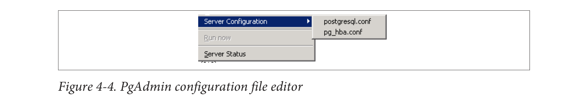
Figure 4-3. psql plug-in
Because this feature relies on a database connection, you’ll see it disabled until you’re
connected to a database.
Editing postgresql.conf and pg_hba.conf from pgAdmin
You can edit configuration files directly from pgAdmin provided that you installed the
adminpack extension on your server. PostgreSQL one-click installers generally create
the adminpack extension. You should see the menu enabled, as shown in Figure 4-4.
Figure 4-4. PgAdmin configuration file editor
If the menu is grayed out and you are connected to a PostgreSQL server, either you don’t
have the adminpack installed on that server or you are not logged in as a superuser. To
install the adminpack on a server running PostgreSQL 9.0 or earlier, connect to the
database named postgres as a superuser and run the file share/contrib/adminpack.sql.
For PostgreSQL 9.1 or later, connect to the database named postgres and run the SQL
statement CREATE EXTENSION adminpack; or use the graphical interface for installing
extensions, as shown in Figure 4-5. Disconnect from the server and reconnect; you
should see the menu enabled.
PostgreSQL: Up and Running80Figure 4-5. Installing extensions using pgAdmin
Creating Database Assets and Setting Privileges
pgAdmin lets you create all kinds of database assets and assign privileges.
Creating databases and other database assets
Creating a new database in pgAdmin is easy. Just right-click the database section of the
tree and choose New Database, as shown in Figure 4-6. The definition tab provides a
drop-down menu for you to select a template database, similar to what we did in “Tem‐
plate Databases” on page 27.
Figure 4-6. Creating a new database
Follow the same steps to create roles, schemas, and other objects. Each will have its own
relevant set of tabs for you to specify additional attributes.
Privilege management
To manage privileges of database assets, nothing beats the pgAdmin Grant Wizard,
which you access from the Tools→Grant Wizard menu of pgAdmin. As with many other
features, this option is grayed out unless you are connected to a database. It's also sen‐
sitive to the location in the tree you are on. For example, to set privileges for items in
the census schema, select the schema and then choose the Grant Wizard. The Grant
Wizard screen is shown in Figure 4-7. You can then select all or some of the items and
switch to the Privileges tab to set the roles and privileges you want to grant.
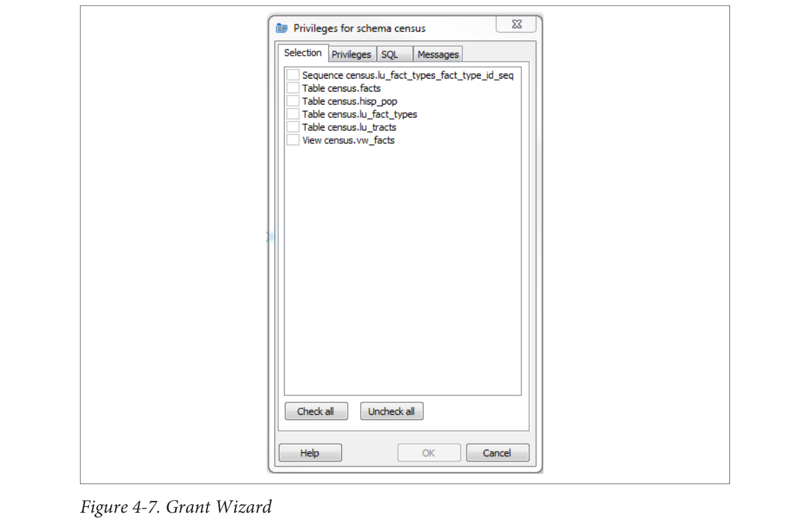
Figure 4-7. Grant Wizard
More often than setting privileges on existing objects, you may want to set default priv‐
ileges for new objects in a schema or database. To do so, right-click the schema or
database, select Properties, and then go to the Default Privileges tab, as shown in
Figure 4-8. Default privileges are available only for PostgreSQL 9.0 and later.
When setting privileges for a schema, make sure to also set the usage privilege on the
schema to the groups you will be giving access to.
Import and Export
Like psql, pgAdmin allows you to import and export text files.
Importing files
The import feature is really a wrapper around the psql \copy command and requires
the table that will receive the data to exist already. In order to import data, right-click
the table you want to import data to, as shown in Figure 4-9.
pgAdmin offers a graphical interface to pg_dump and pg_restore, covered in
“Backup and Restore” on page 38. In this section, we’ll repeat some of the same examples using
pgAdmin instead of the command line.
If several versions of PostgreSQL or pgAdmin are installed on your computer, it’s a good
idea to make sure that the pgAdmin version is using the versions of the utilities that you
expect. Check what the bin setting in pgAdmin is pointing to in order to ensure it’s the
latest available, as shown in Figure 4-12.
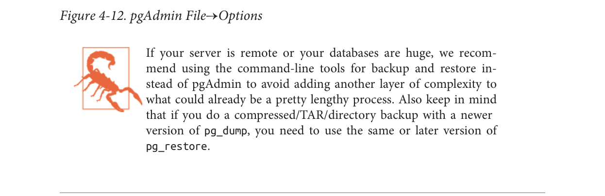
Figure 4-12. pgAdmin File→Options
If your server is remote or your databases are huge, we recommend using the command-line
tools for backup and restore instead of pgAdmin to avoid adding another layer of complexity to
what could already be a pretty lengthy process. Also keep in mind that if you do a
compressed/TAR/directory backup with a newer version of pg_dump, you need to use the
same or later version of pg_restore.
In “Selective Backup Using pg_dump” on page 38, we demonstrated how to back up a
database. To repeat the same steps using the pgAdmin interface, right-click the database
you want to back up and choose Custom for format, as shown in Figure 4-13.
Figure 4-13. Backup database
Backing up system-wide objects
pgAdmin provides a graphical interface to pg_dumpall for backing up system objects.
To use the interface, first connect to the server you want to back up. Then, from the top
menu, choose Tools→Backup Globals.
pgAdmin doesn’t give you control over which global objects to back up, as the
command-line interface does. pgAdmin backs up all tablespaces and roles.
If you ever want to back up the entire server, perform a pg_dumpall by going to the top
menu and choosing Tools→Backup Server.
Selective backup of database assets
pgAdmin provides a graphical interface to pg_dump for selective backup. Right-click the
asset you want to back up and select Backup (see Figure 4-14). You can back up an entire
database, a particular schema, a table, or anything else.
To back up the selected asset, you can forgo the other tabs (see Figure 4-13). However,
you can selectively drill down to more items by clicking the Objects tab, as shown in
Figure 4-15.
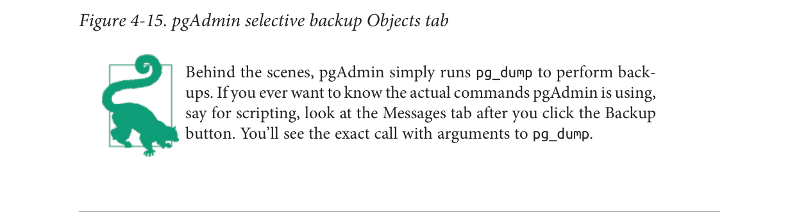
Figure 4-15. pgAdmin selective backup Objects tab
Behind the scenes, pgAdmin simply runs pg_dump to perform back‐
ups. If you ever want to know the actual commands pgAdmin is using,
say for scripting, look at the Messages tab after you click the Backup
button. You’ll see the exact call with arguments to pg_dump.
pgScript is a built-in scripting tool in pgAdmin. It’s most useful for running repetitive
SQL tasks. pgScript can make better use of memory, and thus be more efficient, than
equivalent PostgreSQL functions. This is because stored functions maintain all their
work in memory and commit all the results of a function in a single batch. In contrast,
pgScript commits each SQL insert or update statement as it runs through the script.
This makes pgScript particularly handy for memory-hungry processes that you don’t
need completed as a single transaction. Once a particular transaction commits, memory
is available for the next one. You can see an example of where we use it for batch geo‐
coding at a Using pgScript for Geocoding.
The pgScript language is lazily typed and supports conditionals, loops, data generators,
basic print statements, and record variables. The general syntax is similar to that of
Transact SQL, the stored procedure language of Microsoft SQL Server. Variables, pre‐
pended with @, can hold scalars or arrays, including the results of SQL commands.
Commands such as DECLARE and SET, and control constructs such as IF-ELSE and WHILE
loops, are part of the pgScript language.
Launch pgScript by opening a regular SQL query window. After typing in your script,
execute it by clicking the pgScript icon ().
We’ll now show you some examples of pgScripts. Example 4-1 demonstrates how to use
pgScript record variables and loops to build a cross-tab table, using the lu_fact_types
table we create in Example 7-18. The pgScript creates an empty table called census.hisp_pop
with numeric columns: hispanic_or_latino, white_alone,
black_or_african_american_alone, and so on.
Example 4-1. Create table using record variables in pgScript
DECLARE @I, @labels, @tdef;
SET @I = 0;
Labels will hold records.
SET @labels =
SELECT
quote_ident(
replace(
replace(lower(COALESCE(fact_subcats[4], fact_subcats[3])), ' ',
'_'),':',''
)
) As col_name,
fact_type_id
FROM census.lu_fact_types
WHERE category = 'Population' AND fact_subcats[3] ILIKE 'Hispanic or Latino%'
ORDER BY short_name;
SET @tdef = 'census.hisp_pop(tract_id varchar(11) PRIMARY KEY ';
Loop through records using LINES function.
WHILE @I < LINES(@labels)
BEGIN
SET @tdef = @tdef + ', ' + @labels[@I][0] + ' numeric(12,3) ';
SET @I = @I + 1;
END
SET @tdef = @tdef + ')';
Print out table def.
PRINT @tdef;
create the table.
CREATE TABLE @tdef;
Although pgScript does not have an execute command that allows you to run dynam‐
ically generated SQL, we accomplished the same in Example 4-1 by assigning a SQL
string to a variable. Example 4-2 pushes the envelope a bit further by populating the
census.hisp_pop table we just created.
Example 4-2. Populating tables with pgScript loop
DECLARE @I, @labels, @tload, @tcols, @fact_types;
SET @I = 0;
SET @labels =
SELECT
quote_ident(
replace(
replace(
lower(COALESCE(fact_subcats[4], fact_subcats[3])), ' ',
'_'),':',''
)
) As col_name,
fact_type_id
FROM census.lu_fact_types
WHERE category = 'Population' AND fact_subcats[3] ILIKE 'Hispanic or Latino%'
ORDER BY short_name;
SET @tload = 'tract_id';
SET @tcols = 'tract_id';
SET @fact_types = '-1';
WHILE @I < LINES(@labels)
BEGIN
SET @tcols = @tcols + ', ' + @labels[@I][0] ;
SET @tload = @tload +
', MAX(CASE WHEN fact_type_id = ' +
CAST(@labels[@I][1] AS STRING) +
' THEN val ELSE NULL END)';
SET @fact_types = @fact_types + ', ' + CAST(@labels[@I][1] As STRING);
SET @I = @I + 1;
END
INSERT INTO census.hisp_pop(@tcols)
SELECT @tload FROM census.facts
WHERE fact_type_id IN(@fact_types) AND yr=2010
GROUP BY tract_id;
The lesson to take away from Example 4-2 is that you can dynamically append SQL
fragments into a variable.
Graphical Explain
One of the great gems in pgAdmin is its at-a-glance graphical explain of the query plan.
You can access the graphical explain plan by opening up an SQL query window, writing
a query, and clicking the explain icon (
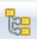
).
If we run the query:
SELECT left(tract_id, 5) As county_code, SUM(hispanic_or_latino) As tot,
SUM(white_alone) As tot_white,
SUM(COALESCE(hispanic_or_latino,0) - COALESCE(white_alone,0)) AS non_white
FROM census.hisp_pop
GROUP BY county_code
ORDER BY county_code;
we will get the graphical explain shown in Figure 4-16. Here’s a quick tip for reading
the graphical explain: trim the fat! The fatter the arrow, the longer a step takes to com‐
plete.
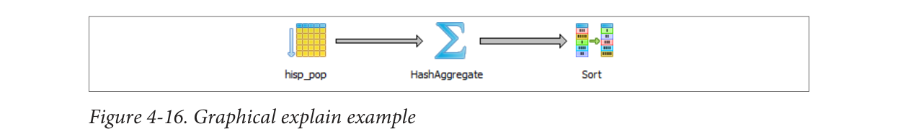
Figure 4-16. Graphical explain example
Graphical explain is disabled if Query→Explain→Buffers is enabled. So make sure to
uncheck buffers before trying a graphical explain. In addition to the graphical explain,
the Data Output tab shows the textual explain plan, which for this example looks like:
pgAgent is a handy utility for scheduling PostgreSQL jobs. But it can also execute batch
scripts in the OS, replacing crontab on Linux/Unix and the task scheduler on Windows.
pgAgent goes even further: you can schedule jobs to run on any other host regardless
of OS. All you have to do is install the pgAgent service on the host and point it to use a
specific PostgreSQL database with pgAgent tables and functions installed. The Post‐
greSQL server itself is not required, but the client connection libraries are. Because
pgAgent is built atop PostgreSQL, you are blessed with the added advantage of having
access to all the tables controlling the agent. If you ever need to replicate a complicated
job multiple times, you can go straight into the database tables directly and insert the
records for new jobs, skipping the pgAdmin interface.
We’ll get you started with pgAgent in this section. Visit Setting Up pgAgent and Doing
Scheduled Backups to see more working examples and details of how to set it up.
Installing pgAgent
You can download pgAgent from pgAgent Download. It is also available via the EDB
Application Stackbuilder commonly used to install PostgreSQL on Windows. The
packaged SQL installation script creates a new schema named pgAgent in the post
gres database. When you connect to your server via pgAdmin, you will see a new section
called Jobs, as shown in Figure 4-17.
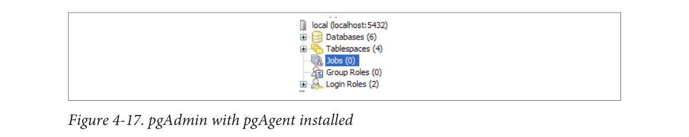
Figure 4-17. pgAdmin with pgAgent installed
If you want pgAgent to run batch jobs on additional servers, follow the same steps,
except you don’t have to reinstall the SQL script packaged with pgAgent. Pay particular
attention to the OS permission settings of the pgAgent service/daemon account. Make
sure each agent has sufficient privileges to execute the batch jobs that you will be sched‐
uling.
Batch jobs often fail in pgAgent even when they might run fine from
the command line. This is often due to permission issues. pgAgent
always runs under the same account as the pgAgent service/
daemon. If this account doesn’t have sufficient privileges or the nec‐
essary network path mappings, jobs fail.
Each scheduled job has two parts: the execution steps and the schedule. When creating
a new job, start by adding one or more job steps. Figure 4-18 shows what the step add/
edit screen looks like.
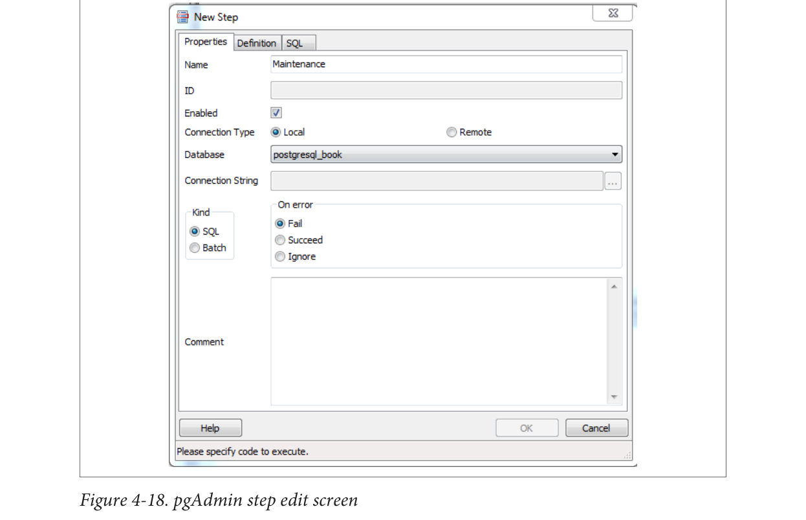
Figure 4-18. pgAdmin step edit screen
For each step, you can enter an SQL statement to run, point to a shell script on the OS,
or even cut and paste in a full shell script as we commonly do.
If you choose SQL, the connection type option becomes enabled and defaults to local.
With a local connection, the job step runs on the same server as the pgAgent and uses
the same authentication username and password. You need to additionally specify the
database that pgAgent should connect to to run the jobs. The screen offers you a drop-
down list of databases to choose from. If you choose a remote connection type, the text
box for entering a connection string becomes enabled. Type in the full connection string,
including credentials, and database. When you connect to a remote PostgreSQL server
with an earlier version of PostgreSQL, make sure that you don't use SQL constructs that
are not supported.
If you choose to run batch jobs, the syntax must be specific to the OS running the job.
For example, if your pgAgent is running on Windows, your batch jobs should have valid
DOS commands. If you are on Linux, your batch jobs should have valid shell or Bash
commands.
Steps run in alphabetical order, and you can decide what kinds of actions you want to
take upon success or failure of each. You have the option of disabling steps that should
remain dormant but that you don’t want to delete because you might reactivate them
later.
Once you have the steps ready, go ahead and set up a schedule to run them. You can set
up intricate schedules with the scheduling screen. You can even set up multiple sched‐
ules.
If you installed pgAgent on multiple servers and have them all pointing to the same
pgAgent database, all these agents by default will execute all jobs.
If you want to run the job on just one specific machine, fill in the host agent field when
creating the job. Agents running on other servers will skip the job if it doesn’t match
their host name.
pgAgent consists of two parts: the data defining the jobs and the
logging of the job. Log information resides in the pgAgent schema,
usually in postgres database; the job agents query the jobs for the
next job to run and then insert relevant logging information in the
database. Generally, both the PostgreSQL server holding the data and
the job agent executing the jobs reside on the same server, but they
are not required to. Additionally, a single PostgreSQL server can ser‐
vice many job agents residing on different servers.
With your finely honed SQL skills, you can easily replicate jobs, delete jobs, and edit
jobs directly by messing with pgAgent metatables. Just be careful! For example, to get
a glimpse inside the tables controlling all of your agents and jobs, connect to the post‐
gres database and execute the query in Example 4-3.
Example 4-3. Description of pgAgent tables
SELECT c.relname As table_name, d.description
FROM
pg_class As c INNER JOIN
pg_namespace n ON n.oid = c.relnamespace INNER JOIN
pg_description As d ON d.objoid = c.oid AND d.objsubid = 0
WHERE n.nspname = 'pgagent'
ORDER BY c.relname;
table_name | description
---------------+-------------------------
pga_job | Job main entry
pga_jobagent | Active job agents
pga_jobclass | Job classification
pga_joblog | Job run logs.
pga_jobstep | Job step to be executed
pga_jobsteplog | Job step run logs.
pga_schedule | Job schedule exceptions
Although pgAdmin already provides an intuitive interface to pgAgent scheduling and
logging, you may find the need to generate your own jobs reports. This is especially true
if you have many jobs or you want to compile stats from your job results. Example 4-4
demonstrates the one query we use often.
Example 4-4. List log step results from today
SELECT j.jobname, s.jstname, l.jslstart,l.jslduration, l.jsloutput
FROM
pgagent.pga_jobsteplog As l INNER JOIN
pgagent.pga_jobstep As s ON s.jstid = l.jsljstid INNER JOIN
pgagent.pga_job As j ON j.jobid = s.jstjobid
WHERE jslstart > CURRENT_DATE
ORDER BY j.jobname, s.jstname, l.jslstart DESC;
We find this query essential for monitoring batch jobs because sometimes a job will
report success even though it failed. pgAgent can’t always discern the success or failure
of a shell script on the OS. The jsloutput field in the logs provides the shell output,
which usually details what went wrong.
In some versions of pgAgent running on Windows, shell scripts often
default to failed when they succeeded. If this happens, you should
set the step status to ignore. This is a known bug that we hope will
be fixed in a future release.
PostgreSQL supports the workhorse data types of any database: numerics, strings, dates
and times, and Booleans. But PostgreSQL sprints ahead by adding support for arrays,
datetimes with time zones, time intervals, ranges, JSON, XML, and many more types.
If that’s not enough, you can invent custom types. In this chapter, we don’t intend to
cover every data type. For that, there’s always the manual. We’ll focus on showing you
some of the data types that are unique to PostgreSQL and nuances of common data
types.
No data type would be useful without the functions and operators used to navigate and
work with it. PostgreSQL has an army of functions and operators that cater to each data
type, and many extensions add their own. We’ll cover some of the more popular ones
in this chapter.
When we use the term function, we’re talking about something that’s
of the form f(x). When we use the term operator, we’re talking about
something that’s symbolic and or unary (having only one argument)
or binary (having two arguments) such as +, -, *, /. The sim‐
plest operator is a symbol alias for a function that takes one or more
arguments. When using operators, keep in mind that the same sym‐
bol can take on a different meaning when applied to different data
types. For example, the plus sign means adding for numerics but
unioning for ranges.
Numerics
You will find your everyday integers, decimals, and floating point numbers in Post‐
greSQL. Of the numeric types, we want to discuss serial data types and a nifty function
to quickly generate arithmetic series of integers.
serial and its bigger sibling, bigserial, are autoincrementing integers often used as
primary keys of tables in which a natural key is not apparent. This data type goes by
different names in different database products, with autonumber being the most com‐
mon alternative moniker. When you create a table and specify a column as serial,
PostgreSQL first creates an integer column and then creates a sequence object named
table_name_column_name_seq located in the same schema as the table. It then sets the
default of the new integer column to read its value from the sequence. If you delete the
column, PostgreSQL also deletes the companion sequence object.
In PostgreSQL, the sequence type is a database asset in its own right. You can inspect
and edit the sequence using pgAdmin or SQL with the ALTER SEQUENCE command. You
can set its current value, boundary values (the upper and lower bounds), and even how
many numbers to increment each time. Though it is rare to increment downward, you
can set the increment value to a negative number to achieve that. Because sequences
are independent database assets, you can create them separately from a table using the
CREATE SEQUENCE command, and you can use the same sequence object for more than
one table. The cross-table sharing of the same sequence comes in handy when you’re
assigning a “universal” key in your database.
In order to use the same sequence for multiple tables, define the column as integer or
bigint, then set the default value of the column to the next sequence number using
nextval(sequence_name) function.
If you rename a table that has a serial based on a sequence, Post‐
greSQL will not automatically rename the sequence object. If main‐
taining naming symmetry is important, you should rename the se‐
quence object.
Generate Series Function
PostgreSQL has a nifty function called generate_series that we have yet to find in
other database products. What makes generate_series so convenient is that it allows
you to effectively mimic a for loop in SQL. Suppose we want a list of the last day of each
month for a particular date range. Doing this without generate_series would involve
either a procedural loop or creating a massive Cartesian product of dates and then
filtering them. With generate_series, your code is a one-liner, as shown later in
Example 5-11.
Example 5-1 uses integers with an optional step parameter.
Example 5-1. generate_series() with stepping of 13
As shown in Example 5-1, you can pass in an optional step argument that defines how
many steps to skip for each successive element. Leaving out the step will default it to 1.
Also note that the end value will never exceed our prescribed range, so although our
range ends at 51, our last number is 40 because adding another 13 to our 40 exceeds the
upper bound.
Characters and Strings
There are three primitive character types in PostgreSQL: character (aka char), character
varying (aka varchar), and text. varchar and text are useful for fields that can
have very different sizes in different rows. The actual storage assigned to the field for
each row reflects just what the field needs for that row. The two fields are stored the
same way and have equivalent performance.
Use char only where the values stored are a fixed length, such as zip codes, phone
numbers, and Social Security numbers. char is right-padded with spaces out to the
specified size for both storage and display; this is more costly in terms of storage. You’ll
find no other performance difference between varchar and char in PostgreSQL.
The difference between varchar with no size modifier and text is subtle. You can sort
on a text column regardless of how many characters it contains. Database drivers such
as ODBC might treat the two types differently. Both varchar and text have a cap of
around 1 GB. Behind the scenes, any data larger than what can fit in a record page gets
pushed to TOAST.
In versions prior to 9.2, if you try to expand the size of an existing
varchar field for a table with many rows, PostgreSQL will recreate
the table. The process could take a while and locks the table. As a
result, people often used text with a length constraint instead.
People have different opinions as to whether you should abandon varchar and always
use text. Rather than waste space arguing about it here, read the debate at In Defense
of VarcharX.
Often, for cross-system compatibility, you want to remove case sensitivity from your
character types. To do this, you need to override comparison operators that take case
into consideration. Overriding operators is easier for varchar than it is for text. We
demonstrate an example in Using MS Access with PostgreSQL, where we show how to
make varchar behave without case sensitivity and still be able to use an index.
String Functions
Common string manipulations are padding (lpad, rpad), trimming whitespace (rtrim,
ltrim, trim, btrim), extracting substrings (substring), and concatenating (||).
Example 5-2 demonstrates padding, and Example 5-3 demonstrates trimming.
Example 5-2. Using lpad and rpad
SELECT lpad('ab', 4, '0') As ab_lpad, rpad('ab', 4, '0') As ab_rpad, lpad('abcde',
4, '0') As ab_lpad_trunc;
ab_lpad | ab_rpad | ab_lpad_trunc
--------+---------+---------------
00ab | ab00 | abcd
❶lpad truncates instead of padding if string is too long.
By default, trim functions remove spaces, but you can pass in an optional argument
indicating other characters to trim.
Example 5-3. Trimming spaces and characters
SELECT
a As a_before, trim(a) As a_trim, rtrim(a) As a_rt,
i As i_before, ltrim(i, '0') As i_lt_0,
rtrim(i, '0') As i_rt_0, trim(i, '0') As i_t_0
FROM ( SELECT repeat(' ', 4) || i || repeat(' ', 4) As a, '0' || i As i FROM gener
ate_series(0, 200, 50) As i
) As x;
a_before | a_trim | a_rt | i_before | i_lt_0 | i_rt_0 | i_t_0
-------------+--------+---------+----------+--------+--------+-------
0 | 0 | 0 | 00 | | |
50 | 50 | 50 | 050 | 50 | 05 | 5
100 | 100 | 100 | 0100 | 100 | 01 | 1
150 | 150 | 150 | 0150 | 150 | 015 | 15
200 | 200 | 200 | 0200 | 200 | 02 | 2
Version 9.0 introduced a helpful string aggregate function called string_agg, which we
demonstrate in Example 3-11 and Example 5-21. string_agg is equivalent in concept
to the group_concat function in MySQL.
Splitting Strings into Arrays, Tables, or Substrings
There are a couple of useful functions in PostgreSQL for tearing strings apart.
The split_part function is useful for getting an element of a delimited string, as shown
in Example 5-4.
PostgreSQL: Up and Running101Example 5-4. Getting the nth element of a delimited string
SELECT split_part('abc.123.z45', '.', 2) As x;
x
-----
123
The string_to_array is useful for creating an array of elements from a delimited string.
By combining string_to_array with the unnest function, you can expand the returned
array into a set of rows, as shown in Example 5-5.
Example 5-5. Converting delimited string to array to rows
SELECT unnest(string_to_array('abc.123.z45', '.')) As x;
x
-----
abc
123
z45
Regular Expressions and Pattern Matching
PostgreSQL’s regular expression support is downright fantastic. You can return matches
as tables or arrays and do fairly sophisticated replaces and updates. Back-referencing
and other fairly advanced search patterns are also supported. In this section, we’ll pro‐
vide a small sampling of these. For more information, see Pattern Matching and String
Functions.
Example 5-6 shows you how to format phone numbers stored simply as contiguous
digits:
Example 5-6. Reformat a phone number using back-referencing
SELECT regexp_replace(
'6197306254',
'([0-9]{3})([0-9]{3})([0-9]{4})',
E'\(\\1\) \\2-\\3'
) As x;
x
--------------
(619) 730-6254
The \\1, \\2, etc. refer to the elements in our pattern expression. We use the reverse
solidus (\) to escape the parentheses. The E' construct is PostgreSQL syntax for denoting
that a string is an expression so that special characters like \ are treated literally.
Suppose some field contains text with embedded phone numbers; Example 5-7 shows
how to extract the phone numbers and turn them into rows all in one step.
PostgreSQL: Up and Running102Example 5-7. Return phone numbers in piece of text as separate rows
SELECT unnest(regexp_matches( 'Cell (619)852-5083. Casa 619-730-6254. Bésame mucho.
E'[(]{0,1}[0-9]{3}[)-.]{0,1}[0-9]{3}[-.]{0,1}[0-9]{4}', 'g')
) As x;
x
-------------
(619)852-5083
619-730-6254
The matching rules for Example 5-7 are:
[(]{0,1}: starts with 0 or 1 (.
[0-9]{3}: followed by 3 digits.
[)-.]{0,1}: followed by 0 or 1 of ), -, or ..
[0-9]{4}: followed by 4 digits.
regexp_matches returns a string array consisting of matches of a regular expres‐
sion. If you don’t pass in the g parameter, your array will return just the first match
of the regular expression. The g stands for global and returns all matches of a regular
expression as separate elements.
unnest explodes an array into a row set.
There are many ways to compose the same regular expression. For
instance, \\d is shorthand for [0-9]. But given the few characters
you’d save, we prefer the more descriptive longhand.
In addition to the wealth of regular-expression functions, you can use regular expres‐
sions with the SIMILAR TO (~) operators. This sequence returns all description fields
with embedded phone numbers:
SELECT description
FROM mytable
WHERE description ~ E'[(]{0,1}[0-9]{3}[)-.]{0,1}[0-9]{3}[-.]{0,1}[0-9]{4}';
Temporals
PostgreSQL support for temporal data is second to none. In addition to the usual dates
and times types, PostgreSQL has support for time zones, enabling the automatic han‐
dling of daylight saving time (DST) conversions by region. Specialized data types such
as interval offer datetime arithmetic. PostgreSQL also understands infinity and neg‐
ative infinity, relieving us from having to create conventions that we’ll surely forget.
Finally, version 9.2 unveiled range types that provide support for temporal ranges with
a whole slew of companion operators, functions, and indexes. We cover range types in
“Range Types” on page 93.
At last count, PostgreSQL has nine temporal data types. Understanding their distinc‐
tions is important to ensuring that you choose the right data type for the job. All of the
types except range abide by ANSI SQL standards. Other leading database products
support some, but not all, of these data types. Oracle has the most varieties of temporal
types; SQL Server ranks second; and MySQL comes in last, with no support for time
zones in any version.
Because PostgreSQL temporal types could be unique, we’ll describe each in finer detail:
date
Just stores the month, day, and year, with no time zone awareness and no concept
of hours, minutes, or seconds.
time (aka time without time zone)
Records hours, minutes, and seconds with no awareness of time zone or calendar
dates.
timestamp (aka timestamp without time zone)
Records both calendar dates and time (hours, minutes, seconds) but does not care
about the time zone. As such, the displayed value of this data won’t change when
you change your server’s time zone.
timestamptz (aka timestamp with time zone)
A time zone−aware date and time data type. Internally, timestamptz is stored in
Coordinated Universal Time (UTC), but its display defaults to the time zone of the
server (or database/user/session if you observe differing time zones at those levels).
If you input a timestamp with no time zone and cast it to one with the time zone,
PostgreSQL assumes the server’s time zone. If you change your server’s time zone,
you’ll see all the displayed times change.
timetz (aka time with time zone)
The lesser-used sister of timestamptz. It is time zone−aware but does not store the
date. It always assumes DST of the current time. For some programming languages
with no concept of time without date, it might map timetz to a timestamp with a
time zone at the beginning of time (for example, Unix Epoch 1970, thus resulting
in DST of year 1970 being used).
interval
A duration of time in hours, days, months, minutes, and others. It comes in handy
for doing date-time arithmetic. For example, if the world is supposed to end in
exactly 666 days from now, all you have to do is add an interval of 666 days to the
current time to get the exact moment when it will happen (and plan accordingly).
New in version 9.2; allows you to define opened and closed ranges of timestamp
with no timezone. The type consists of two timestamps and opened/closed range
qualifiers. For example, '[2012-01-01 14:00, 2012-01-01 15:00)'::tsrange
defines a period starting at 14:00 but ending before 15:00. Refer to Range Types for
details.
tstzrange
New in version 9.2; allows you to define opened and closed ranges of timestamp
with timezone.
daterange
New in version 9.2; allows you to define opened and closed ranges of dates.
Time Zones: What They Are and Are Not
A common misconception with PostgreSQL time zone−aware data types is that Post‐
greSQL records an extra time marker with the datetime value itself. This is incorrect. If
you save 2012-2-14 18:08:00-8 (-8 being the Pacific offset from UTC), PostgreSQL
internally works like this:
Get the UTC time for 2012-02-14 18:08:00-8. This is 2012-02-15 04:08:00-0.
Store the value 2012-02-15 04:08:00.
When you call the data back for display, PostgreSQL internally works like this:
Find the time zone observed by the server or the requested time zone (for instance,
America/New_York).
Compute the offset for time zone for this UTC time. (-5 for America/New_York).
Determine the datetime with the offset (2012-02-15 16:08:00 with a -5 offset be‐
comes 2012-02-15 21:08:00).
Display the result (2012-02-15 21:08:00-5).
As you can see, PostgreSQL doesn’t store the time zone but only uses it to convert the
datetime to UTC before storage. After that, the time zone information is gone. When
PostgreSQL displays the datetime, it always does so in the default time zone dictated by
the session, user, database, or server, in that order. If you use time-zone-aware data types,
we implore you to consider the consequence of a server move from one time zone to
another. Suppose you based a server in New York City and subsequently restored the
database in Los Angeles. All timestamps with time zone fields would suddenly display
in Pacific time. This is fine as long as you anticipate this behavior.
Here’s an example of how something can go wrong. Suppose that McDonald’s had its
server on the East Coast and the opening time for stores is timetz. A new McDonald’s
opens up in San Francisco. The new franchisee phones McDonald’s headquarters to add
its store to the master directory with an opening time of 7 a.m. The data entry dude
entered the information as he is told: 7 a.m. The East Coast PostgreSQL server interprets
this to mean 7 a.m. Eastern, and now early risers in San Francisco are lining up at the
door wondering why they can’t get their McBreakfasts at 4 a.m. Being hungry is one
thing, but we can imagine many situations in which confusion over a difference of three
hours could mean life or death.
Given the pitfalls, why would anyone want to use time-zone-aware data types? First, it
does spare you from having to do time zone conversions manually. For example, if a
flight leaves Boston at 8 a.m. and arrives in Los Angeles at 11 a.m., and your server is
in Europe, you don’t want to have to figure out the offset for each manually. You could
just enter the data with the Boston and Los Angeles local times. There’s another con‐
vincing reason to use time-zone-aware data types: the automatic handling of DST. With
countries deviating more and more from one another in DST schedules, manually
keeping track of DST changes for a globally used database would require a dedicated
programmer who does nothing but keep up to date with the latest DST schedules and
map them to geographic enclaves.
Here’s an interesting example: a traveling salesperson catches a flight home from San
Francisco to nearby Oakland. When she boards the plane, the clock at the terminal reads
2012-03-11 1:50 a.m. When she lands, the clock in the terminal reads 2012-03-11 3:10
a.m. How long was the flight? The key to the solution is that the change to DST occurred
during the flight—the clocks sprang forward. With time-zone-aware timestamps, you
get 20 minutes, which the plausible answer for a short flight across the Bay. We get the
wrong answer if we don’t use time-zone-aware timestamps:
SELECT '2012-03-11 3:10 AM America/Los_Angeles'::timestamptz
- '2012-03-11 1:50 AM America/Los_Angeles'::timestamptz;
Let’s drive the point home with more examples, using a Boston server. For
Example 5-8, I input my time in Los Angeles local time, but because my server is in
Boston, I get a time returned in Boston local time. Note that it does give me the offset,
but that is merely display information. The timestamp is internally stored in UTC.
Example 5-8. Inputting time in one time zone and output in another
In Example 5-9, we are getting back a timestamp without time zone. So the answer you
get when you run this same query will be the same as mine, regardless of where in the
world you are.
Example 5-9. Timestamp with time zone to timestamp at location
SELECT '2012-02-28 10:00 PM America/Los_Angeles'::timestamptz AT TIME ZONE 'Europe/
Paris';
2012-02-29 07:00:00
The query is asking: what time is it in Paris if it’s 2012-02-28 10:00 p.m. in Los Angeles?
Note the absence of UTC offset in the result. Also, notice how you can specify a time
zone with its official name rather than just an offset. Visit Wikipedia for a list of official
time zone names.
Datetime Operators and Functions
The inclusion of a temporal interval data type greatly eases date and time arithmetic in
PostgreSQL. Without it, we’d have to create another family of functions or use a nesting
of functions as many other databases do. With intervals, we can add and subtract time‐
stamp data simply by using the arithmetic operators we’re intimately familiar with. The
following examples demonstrate operators and functions used with date and time data
types.
OVERLAPS, demonstrated in Example 5-10, returns true if two temporal ranges overlap.
This is an ANSI SQL operator equivalent to the overlaps function. OVERLAPS takes four
parameters, the first pair constituting one range and the last pair constituting the other
range. An overlap considers the time periods to be half open, meaning that the start
time is included but the end time is outside the range. This is slightly different behavior
from the common BETWEEN operator, which considers both start and end to be included.
This quirk won’t make a difference unless one of your ranges is a fixed point in time (a
period for which start and end are identical). Watch out for this if you’re a avid user of
the OVERLAPS function.
Example 5-10. OVERLAPS for timestamp and date
SELECT ('2012-10-25 10:00 AM'::timestamp, '2012-10-25 2:00 PM'::timestamp) OVERLAPS
('2012-10-25 11:00 AM'::timestamp,'2012-10-26 2:00 PM'::timestamp) AS x,
('2012-10-25'::date,'2012-10-26'::date) OVERLAPS
('2012-10-26'::date,'2012-10-27'::date) As y;
x | y
----+---
t | f
In addition to the operators, PostgreSQL comes with functions supporting temporal
types. A full listing can be found at Datetime Functions and Operators. We’ll demonstrate
a sampling here.
Once again, we start with the versatile generate_series function. You can use this
function with temporal types and interval steps.
As you can see in Example 5-11, we can express dates in our local datetime format or
the more global ISO Y-M-D format. PostgreSQL automatically interprets differing input
formats. To be safe, we tend to stick with entering dates in ISO, because date formats
vary from culture to culture, server to server, or even database to database.
Example 5-11. Generate time series using generate_series()
SELECT (dt - interval '1 day')::date As eom
FROM generate_series('2/1/2012', '6/30/2012', interval '1 month') As dt;
eom
------------
2012-01-31
2012-02-29
2012-03-31
2012-04-30
2012-05-31
Another popular activity is to extract or format parts of a datetime value. Here, the
functions date_part and to_char fit the bill. Example 5-12 also drives home the behavior
of DST for a time-zone-aware data type. We intentionally chose a period that
crosses a daylight saving switchover in US/East. Because the clock springs forward at 2
a.m., the final row of the table reflects the new time.
Example 5-12. Extracting elements of a datetime
SELECT dt, date_part('hour',dt) As mh, to_char(dt, 'HH12:MI AM') As tm
FROM
generate_series( '2012-03-11 12:30 AM', '2012-03-11 3:00 AM', interval '15 minutes'
) As dt;
dt | mh | tm
-----------------------+----+----------
2012-03-11 00:30:00-05 | 0 | 12:30 AM
2012-03-11 00:45:00-05 | 0 | 12:45 AM
2012-03-11 01:00:00-05 | 1 | 01:00 AM
2012-03-11 01:15:00-05 | 1 | 01:15 AM
2012-03-11 01:30:00-05 | 1 | 01:30 AM
2012-03-11 01:45:00-05 | 1 | 01:45 AM
2012-03-11 03:00:00-04 | 3 | 03:00 AM
By default, generate_series assumes timestamptz if you don’t explicitly cast values to
timestamp.
Arrays
Arrays play an important role in PostgreSQL. They are particularly useful in building
aggregate functions, forming IN and ANY clauses, and holding intermediary values for
morphing to other data types. In PostgreSQL, every data type has a companion array
type. If you define your own data type, PostgreSQL creates a corresponding array type
in the background for you. For example, integer has an integer array type integer[],
character has a character array type character[], and so forth. We’ll show you some
useful functions to construct arrays short of typing them in manually. We will then point
out some handy functions for array manipulations. You can get the complete listing of
array functions and operators in the Official Manual: Array Functions and Operators.
Array Constructors
The most rudimentary way to create an array is to type the elements:
SELECT ARRAY[2001, 2002, 2003] As yrs;
If the elements of your array can be extracted from a query, you can use the more
sophisticated constructor function: array():
SELECT array(
SELECT DISTINCT date_part('year', log_ts) FROM logs ORDER BY date_part('year',
log_ts)
);
Although the array function has to be used with a query returning a single column,
you can specify a composite type as the output, thereby achieving multicolumn results.
We demonstrate this in “Custom and Composite Data Types” on page 103.
You can cast a string representation of an array to an array with syntax of the form:
SELECT '{Alex,Sonia}'::text[] As name, '{43,40}'::smallint[] As age;
name | age
--------------+--------
{Alex,Sonia} | {43,40}
You can convert delimited strings to an array with the string_to_array function, as
demonstrated in Example 5-13.
Example 5-13. Converting a delimited string to an array
SELECT string_to_array('ca.ma.tx', '.') As estados;
estados
----------
{ca,ma,tx}
array_agg is a variant aggregate function that can take a set of any data type and convert
it to an array, as demonstrated in Example 5-14.
Example 5-14. Using array_agg
SELECT array_agg(log_ts ORDER BY log_ts) As x
FROM logs
WHERE log_ts BETWEEN '2011-01-01'::timestamptz AND '2011-01-15'::timestamptz;
x
------------------------------------------
{'2011-01-01', '2011-01-13', '2011-01-14'}
Referencing Elements in an Array
Elements in arrays are most commonly referenced using the index of the element. Post‐
greSQL array indexes start at 1. If you try to access an element above the upper bound,
you won’t get an error—only NULL will be returned. The next example grabs the first
and last element of our array column:
SELECT fact_subcats[1] AS primero,
fact_subcats[array_upper(fact_subcats, 1)] As segundo
FROM census.lu_fact_types;
We used the array_upper function to get the upper bound of the array. The second,
required parameter of the function indicates the dimension. In our case, our array is
one-dimensional, but PostgreSQL does support multidimensional arrays.
Array Slicing and Splicing
PostgreSQL also supports array slicing using the start:end syntax. It returns another
array that is a subarray of the original. For example, to return new arrays that just contain
elements 2 through 4 of each original array, type:
SELECT fact_subcats[2:4] FROM census.lu_fact_types;
To glue two arrays together end to end, use the concatenation operator ||:
SELECT fact_subcats[1:2] || fact_subcats[3:4] FROM census.lu_fact_types;
A common function used with arrays is unnest, which allows you to expand the elements
of an array into a set of rows, as demonstrated in Example 5-15.
Example 5-15. Expanding array with unnest
SELECT unnest('{XOX,OXO,XOX}'::char(3)[]) As tic_tac_toe;
tic_tac_toe
---
XOX
OXO
XOX
Although you can add multiple unnests to a single SELECT, if the number of resultant
rows from each array is not balanced, you get some head-scratching results.
A balanced unnest, as shown in Example 5-16, gives you three rows, as you would often
want.
Example 5-16. Unnesting balanced arrays
SELECT
unnest('{three,blind,mice}'::text[]) As t,
unnest('{1,2,3}'::smallint[]) As i;
t |i
------+-
three |1
blind |2
mice |3
If you remove an element of one array so that you don’t have an equal number of elements
in both, you get the result shown in Example 5-17.
Example 5-17. Unnesting unbalanced arrays
SELECT
unnest( '{blind,mouse}'::varchar[]) As v,
unnest('{1,2,3}'::smallint[]) As i;
v |i
------+-
blind |1
mouse |2
blind |3
mouse |1
blind |2
mouse |3
Version 9.4 introduces a multiargument unnest function that puts in null placeholders
where the arrays are not balanced. The main drawback with the new unnest is that it
can appear only in the FROM clause. Example 5-18 revisits our unbalanced arrays using
the version 9.4 construct.
Example 5-18. Unnesting unbalanced arrays with multiargument unnest
SELECT * FROM unnest('{blind,mouse}'::text[], '{1,2,3}'::int[]) As f(t,i);
t | i
-------+---
blind | 1
mouse | 2
<NULL> | 3
Range Types
Range data types are data types introduced in version 9.2 that define a range of values.
Besides adding the convenience of having to deal with one fewer field, PostgreSQL also
rolled out many operators and functions to identify overlapping ranges, check to see if
a value falls inside the range, and combine adjacent smaller ranges into larger ranges.
Prior to range types, we had to kludge our own functions. These often were clumsy and
slow, and didn’t always produce the expected results. We’ve been so happy with ranges
that we’ve converted all of our temporal tables to use them where possible. We hope you
share our joy.
Range types replace the need to use two separate fields to represent ranges. Suppose we
want all integers between -2 and 2, but not including 2. The range representation would
be [-2,2). The square bracket indicates a range that is closed on that end, whereas a
parenthesis indicates a range that is open on that end. Thus, [-2,2) includes exactly
four integers: -2, -1, 0, 1. Similarly:
The range (-2,2] would have four integers: -1, 0, 1, 2.
The range (-2,2) would have three integers: -1, 0, 1.
The range [-2,2] would have five integers: -2, -1, 0, 1, 2.
Discrete Versus Continuous Ranges
PostgreSQL makes a distinction between discrete and continuous ranges. A range of
integers or dates is discrete because you can enumerate each value within the range.
Think of dots on a number line. A range of numerics or timestamps is continuous,
because an infinite number of values lie between the end points.
A discrete range has multiple representations. Our earlier example of [-2,2) can be
represented in the following ways and still include the same number of values in the
range: [-2,1], (-3,1], (-3,2), [-2,2). Of these four representations, the one with
[) is considered the canonical form. There’s nothing magical about closed-open ranges
except that if everyone agrees to using that representation for discrete ranges, we can
easily compare among many ranges without having to worry first about converting open
to close or vice versa. PostgreSQL canonicalizes all discrete ranges, for both storage and
display. So if you enter a date range as (2014-1-5,2014-2-1], PostgreSQL rewrites it
as [2014-01-06,2014-02-02).
Built-in Range Types
PostgreSQL comes with six built-in range types for numbers and datetimes:
int4range, int8range
A range of integers. Integer ranges are discrete and subject to canonicalization.
numrange
A continuous range of decimals, floating-point numbers, or double-precision numbers.
daterange
A discrete date range of calendar dates without time zone awareness.
tsrange, tstzrange
A continuous date and time (timestamp) range allowing for fractional seconds.
tstrange is not time-zone-aware. tstzrange is time-zone-aware.
For number-like ranges, if either the start point or the end point is left blank, PostgreSQL
replaces it with a null. For practicality, you can interpret the null to represent either
-infinity on the left or infinity on the right. In actuality, you’re bound by the smallest
and largest values for the particular data type. So a int4range of (,) would be
[-2147483648,2147483647).
For temporal ranges, -infinity and infinity are valid upper and lower bounds.
In addition to the built-in range types, you can create your own range types. When you
do, you can set the range to be either discrete or continuous.
Defining Ranges
A range, regardless of type, is always composed of two elements of the same type with
bounding condition denoted by [, ], (, or ), as shown in Example 5-19.
Example 5-19. Defining ranges with casts
SELECT '[2013-01-05,2013-08-13]'::daterange; ①
SELECT '(2013-01-05,2013-08-13]'::daterange; ②
SELECT '(0,)'::int8range; ③
SELECT '(2013-01-05 10:00,2013-08-13 14:00]'::tsrange; ④
[2013-01-05,2013-08-14)
[2013-01-06,2013-08-14)
❶ A date range between 2013-01-05 and 2013-08-13 inclusive. Note the
canonicalization on the upper bound.
❷ A date range greater than 2013-01-05 and less than or equal to 2013-08-13.
Notice the canonicalization.
❸ An integer greater than 0 and less than or equal to infinity. Note the
canonicalization.
❹ A timestamp greater than 2013-01-05 10:00 and less than or equal to 2013-08-13
14:00:00.
Datetimes in PostgreSQL can take on the values of -infinity and
infinity. For uniformity and in keeping with convention, we sug‐
gest that you always use [ for the former and ) for the latter where you
have a choice: tsrange and tstzrange.
Ranges can also be defined using constructor range functions, which go by the same
name as the range and can take two or three arguments. Here’s an example:
SELECT daterange('2013-01-05','infinity','[]');
The third argument denotes the bound. If omitted, [) is the default. We suggest that
you always include the third element for clarity, because the default is not obvious.
Defining Tables with Ranges
Temporal ranges are popular. Suppose you have an employment table that stores em‐
ployment history. Instead of creating start and end dates, you can design a table as shown
in Example 5-20. In the example, we add an index to the period column to speed up
queries using our range column.
Example 5-20. Table with date range
CREATE TABLE employment (id serial PRIMARY KEY, employee varchar(20), period dater
ange);
CREATE INDEX idx_employment_period ON employment USING gist (period);
INSERT INTO employment (employee, period)
VALUES ('Alex', '[2012-04-24, infinity)'::daterange), ('Sonia', '[2011-04-24,
2012-06-01)'::daterange), ('Leo', '[2012-06-20, 2013-04-20)'::daterange), ('Regi
na', '[2012-06-20, 2013-04-20)'::daterange);
Two range operators tend to be used more often than all others: overlap (&&) and con‐
tains (@>). To see the full catalog of range operators, go to Range Operators.
Overlap operator
As the name suggests, the overlap operator && returns true if two ranges have any values
in common. Example 5-21 demonstrates this operator as well as putting to use the
string_agg function for aggregating the list of employees into a single text field.
Example 5-21. Who worked with whom?
SELECT e1.employee, string_agg(DISTINCT e2.employee, ', ' ORDER BY e2.employee) As
colleagues
FROM employment As e1 INNER JOIN employment As e2
ON e1.period && e2.period
WHERE e1.employee <> e2.employee
GROUP BY e1.employee;
employee | colleagues
----------+------------------
Alex | Leo, Regina, Sonia
Leo | Alex, Regina
Regina | Alex, Leo
Sonia | Alex
Contains and contained in operators
In the contains operator (@>), the first argument is a range and the second is a value. If
the second is within the first, the contains operator returns true. Example 5-22 dem‐
onstrates its use.
Example 5-22. Who is currently working?
SELECT employee FROM employment WHERE period @> CURRENT_DATE GROUP BY employee;
employee
----
Alex
The reverse of the contains operator is the contained operator (<@), whose first argument
is the value and the second the range.
JSON
JSON data type and support functions came on the scene with version 9.2. JSON is a
popular data type for web applications, as it serves as the lingua franca for data in
JavaScript. Version 9.3 significantly beefed up JSON support with new functions for
extracting, editing, and casting to other data types. Version 9.4 introduced the jsonb
data type, which is a binary form of JSON that can also take advantage of indexes. We’ll
cover mostly JSON functions and operators introduced in version 9.3. We’ll also show
you how to use jsonb, functions it shares with its json brethren, and new operators it
supports. Refer to JSON Functions and Operators for a full listing.
Inserting JSON Data
To create a table to hold json objects, define a column as a json type:
CREATE TABLE families_j (id serial PRIMARY KEY, profile json);
Example 5-23 inserts JSON data. PostgreSQL will validate the input to make sure what
you are adding is valid JSON.
You can’t cast invalid JSON strings to the json type, nor can you
store invalid JSON strings in a json column. PostgreSQL conducts
background checks to ensure that the JSON string is well-behaved
before letting it take up residency in the database.
Querying JSON
New in version 9.3 are various functions for inspecting JSON data. Example 5-24 uses
json_extract_path, json_array_elements, and json_extract_path_text to obtain
family members.
Example 5-24. Query subelements
SELECT json_extract_path_text(profile, 'name') As family, ① json_ex
tract_path_text( ② json_array_elements( ③ json_extract_path(profile,'mem
bers') ④ ), 'member','name' ) As member
FROM families_j;
family |member
-------+------
Gomez |Alex
Gomez |Sonia
Gomez |Brandon
Gomez |Azaleah
③ Expand the array of members into individual JSON objects.
④ Get list of members as a new JSON object.
The ->> and #>> operators are shorthand for json_extract_path_text. The #>> takes
a path array. Example 5-25 rewrites Example 5-24 using these symbolic operators.
Example 5-25. Extract path equivalent operators
SELECT profile->>'name' As family, json_array_elements((profile->'members')) #>> '{member,name}'::text[] As member
FROM families_j;
A companion function, json_extract_path, which can be represented as -> and #>,
returns a JSON object representing the subelement. This function is particularly useful
for passing complex elements such as members into another function for further ma‐
nipulation.
Although there weren’t any functions for easily querying JSON data in version 9.2, you
can accomplish much of what is native in version 9.3 by writing PL/V8 functions. We
demonstrate how to create a jQuery-like selector function in Using PLV8 to Build JSON
Selectors.
Several functions are available for working with arrays in a JSON structure. You already
saw the use of json_array_elements in Example 5-25. In addition to json_array_el
ements, you can use json_array_length to get a count of elements and -> with an index
position to return specific index element. You can chain operators together to burrow
into the JSON object, as shown in Example 5-26.
Example 5-26. Query subelements of members
SELECT id, json_array_length(profile->'members') As numero, profile->'members'-
>0#>>'{member,name}'::text[] As primero
FROM families_j;
id | numero | primero
---+--------+--------
1 | 4 | Alex
Example 5-26 uses two versions of the -> operator. The -> operator always returns a
json or jsonb object, but it takes as a second argument either a text field (shorthand
for json_object_field) or an integer (shorthand for json_array_element). So
profile->'members' returns the JSON object’s members field, which happens to be a
JSON array. ->0 works against a JSON array field and returns the first element. In our
example, it returns the first member of our family. #>>'{member,name}'::text[] is
shorthand for json_extract_path_text, so it returns the text value corresponding to
the JSON member/name node of our first member. Note how we can seamlessly chain
operators together. jsonb, which we will cover shortly, has the same operators, but they
are aliases for jsonb_object_field, jsonb_array_element, and so on.
Arrays in JSON start at zero. PostgreSQL arrays start at one.
Outputting JSON
In addition to being able to query JSON data, you can convert other data to JSON. In
these next examples, we’ll demonstrate the use of JSON built-in functions to create JSON
objects.
Example 5-27 demonstrates the use of row_to_json to convert a subset of columns in
each record from the table we created and loaded in Example 5-23.
Example 5-27. Converting rows to individual JSON objects (requires version 9.3 or later)
SELECT row_to_json(f) As x
FROM (SELECT id, profile->>'name' As name FROM families_j) As f;
x
-------------------------
{"id":1,"name":"Gomez"}
To output each row in our families table as JSON, the following works in version 9.2
and later:
SELECT row_to_json(f) FROM families_j As f;
The use of a row as an output field in a query is a feature unique to PostgreSQL. It’s
handy for creating complex JSON objects. We describe it further in “Composite Types
in Queries” on page 128, and Example 7-16 demonstrates the use of array_agg and ar‐
ray_to_json to output a set of rows as a single JSON object. In version 9.3 we have at
our disposal the json_agg function. We demonstrate its use in Example 7-17.
Binary JSON: jsonb
New in PostgreSQL 9.4 is the jsonb data type. It has same-named operators as the json
type and similarly named functions, plus several additional ones. There are a couple of
key differences between the jsonb and json data types:
jsonb is internally stored as a binary object and does not maintain the formatting
of the original JSON text as the json data type does. Spaces aren’t preserved, num‐
bers can appear slightly different, and attributes become sorted. For example, a
number input as e-5 would be converted to its decimal representation.
jsonb does not allow duplicate keys and silently picks one, whereas the json type
preserves duplicates. This is demonstrated in Michael Paquier: Manipulating jsonb
data by abusing of key uniqueness.
jsonb performance is much better than json performance because jsonb doesn’t
need to be reparsed during operations.
jsonb columns can be directly indexed using the GIN index method (covered in
“Indexes” on page 112, whereas json requires a functional index to extract key ele‐
ments.
To demonstrate these concepts, we’ll create another families table, replacing the json
column with a jsonb:
CREATE TABLE families_b (id serial PRIMARY KEY, profile jsonb);
To insert data into our new table, we would repeat Example 5-23.
So far, working with JSON and binary JSON has been the same. Differences appear
when you query. To make the binary JSON readable, PostgreSQL converts it to a can‐
onical text representation, as shown in Example 5-28.
Example 5-28. jsonb vs. json output
SELECT profile As b FROM families_b WHERE id = 1;
SELECT profile As j FROM families_j WHERE id = 1;
b
--------------------------------------------------------------------------------
{"name": "Gomez", "members": [{"member": {"name": "Alex", "relation": "padre"}}
, {"member": {"name": "Sonia", "relation": "madre"}}, {"member": {"name": "Brand
on", "relation": "hijo"}}, {"member": {"name": "Azaleah", "relation": "hija"}}]}
j
---------------------------------------------------------------------------
{"name":"Gomez","members":[{"member":{"relation":"padre", "name":"Alex"}},
{"member":{"relation":"madre", "name":"Sonia"}},
{"member":{"relation":"hijo", "name":"Brandon"}},
{"member":{"relation":"hija", "name":"Azaleah"}}]}
①jsonb reformats input and removes whitespace. Also, the order of relation and
name attributes is flipped from their original order.
②json maintains input whitespace and the order of attributes.
jsonb has similarly named functions and the same-named operators as json, plus some
additional ones. So, for example, the json family of functions such as json_extract_path_text and
json_each are matched in jsonb by jsonb_extract_path_text, jsonb_each, etc. However, the equivalent operators are the same, so
you will find that Example 5-25 and Example 5-26 work largely without change for the
jsonb type—just replace the table name and change the json_array_length function
to the equivalent jsonb_array_length function.
In addition to the operators supported by json, jsonb has additional comparator oper‐
ators for equality (=), contains (@>), contained (<@), key exists (?), any of array of keys
exists (?|), and all of array of keys exists (?&).
So, for example, to list all families that have a member named Alex, use the contains
operator as demonstrated in Example 5-29.
Example 5-29. jsonb contains operator
SELECT profile->>'name' As family
FROM families_b
WHERE profile @> '{"members":[{"member":{"name":"Alex"} }]}';
family
-----
Gomez
These additional operators provide very fast checks when you complement them with
a GIN index on the jsonb column:
CREATE INDEX idx_familes_jb_profile_gin ON families_b USING gin (profile);
We don’t have enough records in our puny table for the index to kick in, but for more
rows, you’d see that Example 5-29 utilizes the index.
XML
The XML data type, similar to JSON, is “controversial” in a relational database because
it violates principles of normalization. Nonetheless, all of the high-end relational data‐
bases products (IBM DB2, Oracle, SQL Server) support XML. PostgreSQL also jumped
on the bandwagon and offers plenty of functions to boot. We’ve authored many articles
on working with XML in PostgreSQL. (You can find these articles at PostgreSQL XML
Examples.) PostgreSQL comes packaged with functions for generating, manipulating,
and parsing XML data. These are outlined in XML Functions. Unlike the jsonb type,
there is currently no direct index support for it. So you need to use functional indexes
to index subparts, similarly to what you can do with the plain json type.
Inserting XML Data
When you create a column of the xml data type, PostgreSQL automatically ensures that
only valid XML values populate the rows. This is what distinguishes an XML column
from just any text column. However, the XML is not validated against any Document
Type Definition (DTD) or XML Schema Definition (XSD), even if it is specified in the
XML document. To freshen up on what constitutes valid XML, Example 5-30 shows
you how to append XML data to a table, by declaring a column as xml and inserting into
it as usual.
Example 5-30. Populate XML field
CREATE TABLE families (id serial PRIMARY KEY, profile xml);
INSERT INTO families(profile)
VALUES (
'<family name="Gomez">
<member><relation>padre</relation><name>Alex</name></member>
<member><relation>madre</relation><name>Sonia</name></member>
<member><relation>hijo</relation><name>Brandon</name></member>
<member><relation>hija</relation><name>Azaleah</name></member>
</family>');
Each XML value could have a different XML structure. To enforce uniformity, you can
add a check constraint, covered in “Check Constraints” on page 111, to the XML column.
Example 5-31 ensures that all family has at least one relation element. The '/family/
member/relation' is XPath syntax, a basic way to refer to elements and other parts of
XML.
Example 5-31. Ensure that all records have at least one member relation
ALTER TABLE families ADD CONSTRAINT chk_has_relation
CHECK (xpath_exists('/family/member/relation', profile));
If we then try to insert something like:
INSERT INTO families (profile) VALUES ('<family name="HsuObe"></family>');
we will get this error: ERROR: new row for relation "families" violates check
constraint "chk_has_relation".
For more involved checks that require checking against DTD or XSD, you’ll need to
resort to writing functions and using those in the check constraint, because PostgreSQL
doesn’t have built-in functions to handle those kinds of checks.
Querying XML Data
To query XML, the xpath function is really useful. The first argument is an XPath query,
and the second is an xml object. The output is an array of XML elements that satisfy the
XPath query. Example 5-32 combines xpath with unnest to return all the family mem‐
bers. unnest unravels the array into a row set. We then cast the XML fragment to text.
Example 5-32. Query XML field
SELECT family,
(xpath('/member/relation/text()', f))[1]::text As relation,
(xpath('/member/name/text()', f))[1]::text As mem_name
FROM (SELECT (xpath('/family/@name', profile))[1]::text As family,
unnest(xpath('/family/member', profile)
) As f FROM families) x; ③
family | relation | mem_name
--------+----------+----------
Gomez | padre | Alex
Gomez | madre | Sonia
Gomez | hijo | Brandon
Gomez | hija | Azaleah
① Get the text element in the relation and name tags of each member element. We
need to use array subscripting because xpath always returns an array, even if
only one element is returned.
② Get the name attribute from family root. For this we use @attribute_name.
③ Break into subelements <member>, <relation>, </relation>, <name>, </
name>, and </member> tags. The slash is a way of getting at subtag elements. For
example, xpath('/family/member', 'profile') will return an array of all
members in each family that is defined in a profile. The @ sign is used to select
attributes of a an element. So, for example, family/@name returns the name
attribute of a family. By default, xpath always returns an element, including the
tag part. The text() forces a return of just the text body of an element.
Custom and Composite Data Types
This section demonstrates how to define and use a custom type. The composite (aka
record, row) object type is often used to build an object that is then cast to a custom
type, or as a return type for functions needing to return multiple columns.
All Tables Are Custom Data Types
PostgreSQL automatically creates custom types for all tables. For all intents and pur‐
poses, you can use custom types just as you would any other built-in type. So we could
conceivably create a table that has a column type that is another table’s custom type, and
we can go even further and make an array of that type. We demonstrate this “turducken”
in Example 5-33.
Example 5-33. Turducken
CREATE TABLE chickens (id integer PRIMARY KEY);
CREATE TABLE ducks (id integer PRIMARY KEY, chickens chickens[]);
CREATE TABLE turkeys (id integer PRIMARY KEY, ducks ducks[]);
INSERT INTO ducks VALUES (1, ARRAY[ROW(1)::chickens, ROW(1)::chickens]);
INSERT INTO turkeys VALUES (1, array(SELECT d FROM ducks d));
We create an instance of a chicken without adding it to the chicken table itself; hence
we’re able to repeat id with impunity. We take our array of two chickens, stuff them into
one duck, and add it to the ducks table. We take the duck we added and stuff it into the
turkeys table.
Finally, let’s see what we have in our turkey:
SELECT * FROM turkeys;
output
------------------------
id | ducks
---+-----------------------
1 | {"(1,\"{(1),(1)}\")"}
We can also replace subelements of our turducken. This next example replaces our
second chicken in our first turkey with a different chicken:
UPDATE turkeys SET ducks[1].chickens[2] = ROW(3)::chickens
WHERE id = 1 RETURNING *;
output
--------------
id | ducks
---+-----------------------
1 | {"(1,\"{(1),(3)}\")"}
We used the RETURNING clause as discussed in “Returning Affected Records to the
User” on page 128 to output the changed record.
PostgreSQL internally keeps track of object dependencies. The ducks.chickens column
is dependent on the chickens table. The turkeys.ducks column is dependent on the
ducks table. You won’t be able to drop the chickens table without specifying CASCADE
or first dropping the ducks.chickens column. If you do a CASCADE, the ducks.chick‐
ens column will be gone, and without warning, your turkeys will have no chickens in
their ducks.
Building Custom Data Types
Although you can easily create composite types just by creating a table, at some point,
you’ll probably want to build your own from scratch. For example, let’s build a complex
number data type with the following statement:
CREATE TYPE complex_number AS (r double precision, i double precision);
We can then use this complex number as a column type:
CREATE TABLE circuits (circuit_id serial PRIMARY KEY, ac_volt complex_number);
We can then query our table with statements such as:
SELECT circuit_id, (ac_volt).r, (ac_volt).i FROM circuits;
Puzzled by the parentheses surrounding ac_volt? If you leave them
out, PostgreSQL will raise the error missing FROM-clause entry
for table “ac_volt”, because it assumes ac_volt without paren‐
theses refers to a table.
Building Operators and Functions for Custom Types
After you build a custom type such as a complex number, naturally you’ll want to create
functions and operators for it. We’ll demonstrate building a + operator for the com
plex_number we created. For more details about building functions, see Chapter 8. As
stated earlier, an operator is a symbol alias for a function that takes one or two arguments.
You can find more details about what symbols and set of symbols are allowed in CREATE
OPERATOR.
In addition to being an alias, an operator contains optimization information that can
be used by the query optimizer to decide how indexes should be used, how best to
navigate the data, and which operator expressions are equivalent. More details about
these optimizations and how each can help the optimizer are in Operator Optimization.
The first step to creating an operator is to create a function, as shown in Example 5-34.
Example 5-34. Add function for complex number
CREATE OR REPLACE FUNCTION add(complex_number, complex_number) RETURNS complex_num
ber AS
$$
SELECT ( (COALESCE(($1).r,0) + COALESCE(($2).r,0)),
(COALESCE(($1).i,0) + COALESCE(($2).i,0)) )::complex_number;
$$
language sql;
The next step is to create a symbolic operator to wrap the function, as in Example 5-35.
Although we didn’t demonstrate it here, you can overload functions and operators to
take different types as inputs. For example, you can create an add function and com‐
panion + operator that takes a complex_number and an integer.
The ability to build custom types and operators pushes PostgreSQL to the boundary of
a full-fledged development environment, bringing us ever closer to our utopia where
everything is table-driven.
Tables form the building block of relational-database storage. Structuring tables so that
they form meaningful relationships is the key to relational-database design. In Post‐
greSQL, constraints enforce relationships between tables. To distinguish a table from
just a heap of data, we establish indexes. Much like the indexes you find at the end of
books or the tenant list at the entrances to grand office buildings, indexes point to
locations in the table so you don’t have to scour the table from top to bottom every time
you’re looking for something.
In this chapter, we introduce syntax for creating tables and adding rows. We then move
on to constraints to ensure that your data doesn’t get out of line. Finally, we show you
how to add indexes to your tables to expedite search. Indexing a table is as much a
programming task as it is an experimental endeavor. A misappropriated index is worse
than useless. Not all indexes are created equal. Algorithmists have devised different
kinds of indexes for different data types, all in the attempt to scrape that last zest of speed
from a query.
Tables
In addition to ordinary data tables, PostgreSQL offers several kinds of tables that are
rather uncommon: temporary, unlogged, inherited, typed, and foreign (covered in
Chapter 10).
Basic Table Creation
Example 6-1 shows the table creation syntax, which is similar to what you’ll find in all
SQL databases.
PostgreSQL: Up and Running126Example 6-1. Basic table creation
CREATE TABLE logs ( log_id serial PRIMARY KEY,
① user_name varchar(50),
② description text,
③ log_ts timestamp with time zone NOT NULL DEFAULT current_timestamp);
④ CREATE INDEX idx_logs_log_ts ON logs USING btree (log_ts);
①serial is the data type used to represent an incrementing autonumber. Adding
a serial column automatically adds an accompanying sequence object to the
database schema. A serial data type is always an integer with the default value
set to the next value of the sequence object. Each table usually has just one serial
column, which often serves as the primary key.
②varchar is shorthand for character varying, a variable-length string similar
to what you will find in other databases. You don’t need to specify a maximum
length; if you don’t, varchar is almost identical to the text data type.
③text is a string of indeterminate length. It’s never followed by a length restriction.
④timestamp with time zone (shorthand timestamptz) is a date and time data
type, always stored in UTC. It always displays date and time in the server’s own
time zone unless you tell it to otherwise. See “Time Zones: What They Are and
Are Not” on page 86 for a a more thorough discussion.
Inherited Tables
PostgreSQL stands alone as the only database offering inherited tables. When you spec‐
ify that a table (the child table) inherit from another table (the parent table), PostgreSQL
creates the child table with its own columns plus all the columns of the parent table(s).
PostgreSQL will remember this parent-child relationship so that any structural changes
later made to the parent automatically propagate to its children. Parent-child table de‐
sign is perfect for partitioning your data. When you query the parent table, PostgreSQL
automatically includes all rows in the child tables. Not every trait of the parent passes
down to the child. Notably, primary key constraints, uniqueness constraints, and in‐
dexes are never inherited. Check constraints are inherited, but children can have their
own check constraints in addition to the ones they inherit from their parents (see
Example 6-2).
Example 6-2. Inherited table creation
CREATE TABLE logs_2011 (PRIMARY KEY(log_id)) INHERITS (logs);
CREATE INDEX idx_logs_2011_log_ts ON logs USING btree(log_ts);
ALTER TABLE logs_2011 ADD CONSTRAINT chk_y2011
CHECK (log_ts >= '2011-1-1'::timestamptz
AND log_ts < '2012-1-1'::timestamptz ); ①
We define a check constraint to limit data to the year 2011. Having the check
constraint in place tells the query planner to skip over inherited tables that do
not satisfy the query condition.
Unlogged Tables
For ephemeral data that could be rebuilt in event of a disk failure or doesn’t need to be
restored after a crash, you might prefer having more speed than redundancy. In version
9.1, the UNLOGGED modifier allows you to create unlogged tables, as shown in
Example 6-3. These tables will not be part of any write-ahead logs. If you accidentally
unplug the power cord on the server and then turn the power back on, all data in your
unlogged tables will be wiped clean during the rollback process. You can find more
examples and caveats at Depesz: Waiting for 9.1 Unlogged Tables.
There is also an option in pg_dump that allows you to skip over backing up of unlogged
data.
The big advantage of an unlogged table is that writing data to it is much faster than to
a logged table. Our experience suggests on the order of 15 times faster. Keep in mind
that you’re making sacrifices with unlogged tables:
If your server crashes, PostgreSQL will truncate all unlogged tables. (Truncate
means erase all rows.)
Unlogged tables don’t support GiST indexes (defined in “PostgreSQL Stock In‐
dexes” on page 113). They are therefore unsuitable for exotic data types that rely on
GiST for speedy access.
Unlogged tables will accommodate the common B-Tree and GIN, though.
TYPE OF
PostgreSQL automatically creates a corresponding composite data type in the back‐
ground whenever you create a new table. The reverse is not true. But, as of version 9.0,
you can use a composite data type as a template for creating tables. We’ll demonstrate
this by first creating a type with the definition:
CREATE TYPE basic_user AS (user_name varchar(50), pwd varchar(10));
We can then create a table with rows that are instances of this type via the OF clause, as
shown in Example 6-4.
PostgreSQL: Up and Running128Example 6-4. Using TYPE to define new table structure
CREATE TABLE super_users OF basic_user (CONSTRAINT pk_su PRIMARY KEY (user_name));
When creating tables from data types, you can’t alter the columns of the table. Instead,
add or remove columns to the composite data type, and PostgreSQL will automatically
propagate the changes to the table structure. Much like inheritance, the advantage of
this approach is that if you have many tables sharing the same underlying structure and
you need to make a universal alteration, you can do so by simply changing the under‐
lying composite type.
Let’s say we now need to add a phone number to our super_users table from
Example 6-4. All we have to do is execute the following command to alter the underlying
type:
ALTER TYPE basic_user ADD ATTRIBUTE phone varchar(10) CASCADE;
Normally, you can’t change the definition of a type if tables depend on that type. The
CASCADE modifier overrides this restriction, applying the same change to all the depen‐
dent tables.
Constraints
PostgreSQL constraints are the most advanced (and most complex) of any database
we’ve worked with. Not only do you create constraints, but you can also control all facets
of how a constraint handles existing data, any cascade options, how to perform the
matching, which indexes to incorporate, conditions under which the constraint can be
violated, and more. On top of it all, you can pick your own name for each constraint.
For the full treatment, we suggest you review the official documentation. You’ll find
comfort in knowing that taking the default settings usually works out fine. We’ll start
off with something familiar to most relational folks: foreign key, unique, and check
constraints. Then we’ll move on to exclusion constraints, introduced in version 9.0.
Names of primary key and unique key constraints must be unique
within a given schema. The general practice is to include the name
of the table and column as part of the name of the key. For the sake
of brevity, our examples might not abide by this general practice.
Foreign Key Constraints
PostgreSQL follows the same convention as most databases that support referential
integrity. You can specify cascade update and delete rules to avoid pesky orphaned re‐
cords. We show you how to add foreign key constraints in Example 6-5.
PostgreSQL: Up and Running129Example 6-5. Building foreign key constraints and covering indexes
set search_path=census, public;
ALTER TABLE facts ADD CONSTRAINT fk_facts_1 FOREIGN KEY (fact_type_id)
REFERENCES lu_fact_types (fact_type_id) ①
ON UPDATE CASCADE ON DELETE RESTRICT; ②
CREATE INDEX fki_facts_1 ON facts (fact_type_id); ③
① We define a foreign key relationship between our facts and fact_types tables.
This prevents us from introducing fact types into facts unless they are already
present in the fact types lookup table.
② We add a cascade rule that automatically updates the fact_type_id in our facts
table should we renumber our fact types. We restrict deletes from our lookup
table so fact types in use cannot be removed. RESTRICT is the default behavior,
but we suggest stating it for clarity.
③ Unlike for primary key and unique constraints, PostgreSQL doesn’t
automatically create an index for foreign key constraints; you should add this
yourself to speed up queries.
Unique Constraints
Each table can have no more than a single primary key. If you need to enforce uniqueness
on other columns, you must resort to unique constraints or unique indexes. Adding a
unique constraint automatically creates an associated unique index. Similar to primary
keys, unique key constraints can participate in REFERENCES part of foreign key con‐
straints and cannot have NULL values. A unique index without a unique key constraint
does allow NULL values. The following example shows how to add a unique index:
ALTER TABLE logs_2011 ADD CONSTRAINT uq UNIQUE (user_name,log_ts);
Often you’ll find yourself needing to ensure uniqueness for only a subset of your rows.
PostgreSQL does not offer conditional unique constraints, but you can achieve the same
effect by using a partial uniqueness index. See “Partial Indexes” on page 116.
Check Constraints
Check constraints are conditions that must be met for a field or a set of fields for each
row. The query planner can also take advantage of check constraints and abandon
queries that don’t meet the check constraint outright. We saw an example of a check
constraint in Example 6-2. That particular example prevents the planner from having
to scan rows failing to satisfy the date range specified in a query. You can exercise some
creativity in your check constraints, because you can use functions and Boolean ex‐
pressions to build complicated matching conditions. For example, the following con‐
straint requires all user names in the logs tables to be lowercase:
ALTER TABLE logs ADD CONSTRAINT chk CHECK (user_name = lower(user_name));
The other noteworthy aspect of check constraints is that unlike primary key, foreign
key, and unique key constraints, they inherit from parent tables.
Exclusion Constraints
Introduced in version 9.0, exclusion constraints allow you to incorporate additional
operators to enforce uniqueness that can’t be satisfied by the equality operator. Exclusion
constraints are especially useful in problems involving scheduling.
PostgreSQL 9.2 introduced the range data types that are perfect candidates for exclusion
constraints. You’ll find a fine example of using exclusion constraints for range data types
at Waiting for 9.2 Range Data Types.
Exclusion constraints are generally enforced using GiST indexes, but you can create
compound indexes that incorporate B-Tree as well. Before you do this, you need to
install the btree_gist extension. A classic use of a compound exclusion constraint is
for scheduling resources.
Here’s an example using exclusion constraints. Suppose you have a fixed number of
conference rooms in your office, and groups must book them in advance. See how we’d
prevent double-booking in Example 6-6. Take note of how we are able to use the overlap
operator (&&) for our temporal comparison and the usual equality operator for the room
number.
Example 6-6. Prevent overlapping bookings for same room
CREATE TABLE schedules(id serial primary key, room smallint, time_slot tstzrange);
ALTER TABLE schedules ADD CONSTRAINT ex_schedules
EXCLUDE USING gist (room WITH =, time_slot WITH &&);
Just as with uniqueness constraints, PostgreSQL automatically creates a corresponding
index of the type specified in the constraint declaration.
Indexes
PostgreSQL ships stocked with a lavish framework for creating and fine-tuning indexes.
The art of PostgreSQL indexing could fill a tome all by itself. At the time of writing,
PostgreSQL comes with at least four types of indexes, often referred to as index meth‐
ods. If you find these insufficient, you can define new index operators and modifiers to
supplement them. If still unsatisfied, you’re free to invent your own index type.
PostgreSQL also allows you to mix and match different index types in the same table
with the expectation that the planner will consider them all. For instance, one column
could use a B-Tree index while an adjacent column uses a GiST index, with both indexes
contributing to the speed of the query. To delve more into the mechanics of how the
planner takes advantage of indexes, visit bitmap index scan strategy.
To take full advantage of all that PostgreSQL has to offer, you’ll want to understand the
various types of indexes and situations where they will aid or harm. The index methods
are:
B-Tree
B-Tree is a general-purpose index common in relational databases. You can usually
get by with B-Tree alone if you don’t want to experiment with additional types. If
PostgreSQL automatically creates an index for you or you don’t bother specifying
the index method, B-Tree will be chosen. It is currently the only index method for
primary keys and unique keys.
GiST
Generalized Search Tree (GiST) is an index optimized for full-text search, spatial
data, scientific data, unstructured data, and hierarchical data. Although you can’t
use it to enforce uniqueness, you can create the same effect by using it in an exclusion
constraint.
GiST is a lossy index, in the sense that the index itself will not store the value of
what it’s indexing, but merely a caricature of the value such as a box for a polygon.
This creates the need for an extra look-up step if you need to retrieve the value or
do a more fine-tuned check.
GIN
Generalized Inverted Index (GIN) is geared toward the built-in full text search and
jsonb data type of PostgreSQL. Many other extensions, such as hstore and pg_trgm
also utilize it. GIN is a descendent of GiST without lossiness. GIN will make a copy
of the values in the columns that are part of the index. If you ever need to pull data
limited to covered columns, GIN is faster than GiST. However, the extra copying
required by GIN index means updating the index is slower than a comparable GiST
index. Also, because each index row is limited to a certain size, you can’t use GIN
to index large objects such as large hstore documents or text. If there is a possibility
you’ll be inserting a 600-page manual into a field of a table, don’t use GIN to index
that column.
You can find a wonderful example of GIN in Waiting for Faster LIKE/ILIKE. In
version 9.3, you can index regular expressions that leverage the GIN-based pg_trgm
extension.
Space-Partitioning Trees Generalized Search Tree (SP-GiST), introduced in version
9.2, can be used in the same situations as GiST but can be faster for certain kinds
of data distribution. PostgreSQL’s native geometric data types, such as point and
box, and the text data type, were the first to support SP-GiST. In version 9.3, support
extended to range types. The PostGIS spatial extension also has plans to take ad‐
vantage of this specialized index in the near future.
hash
Hash indexes were popular prior to the advent of GiST and GIN. General consensus
rates GiST and GIN above hash in terms of both performance and transaction safety.
The write-ahead log does not track hash indexes; therefore, you can’t use them in
streaming replication setups. PostgreSQL has relegated hash to legacy status. You
may still encounter this index type in other databases, but it’s best to eschew hash
in PostgreSQL.
B-Tree-GiST/B-Tree-GIN
If you want to explore stock beyond what PostgreSQL installs by default, either out
of need or curiosity, start with the composite B-Tree-GiST or B-Tree-GIN indexes,
both available as extensions.
These hybrids support the specialized operators of GiST or GIN, but also offers
indexablity of the equality operator in B-Tree indexes. You’ll find them indispen‐
sable when you want to create a compound index composed of multiple columns
with data types like character varying or number—normally serviced by equality
operators—or like a hierarchical ltree type or full-text vector with operators sup‐
ported only by GIN/GiST.
Operator Classes
We would have loved to skip this section on operator classes. Many of you will sail
through your index-capades without ever needing to know what they are and why they
matter for indexes. But if you falter, you’ll need to understand operator classes to trou‐
bleshoot the perennial question, “Why is the planner not taking advantage of my index?”
Algorithm experts intend for their indexes to work against certain data types and com‐
parison operators. An expert in indexing ranges could obsess over the overlap operator
(&&), whereas an expert inventing indexes for faster text search may find little meaning
in an overlap. A computational linguist trying to index Chinese or other logographic
languages probably has little use for inequalities, whereas A-to-Z sorting is critical for
an alphabetical writing system.
PostgreSQL groups comparison operators that are similar and permissible data types
into operator classes (opclass for short). For example, the int4_ops operator class in‐
cludes the operators = < > > < to be applied against the data type of int4. The pg_op
class system table provides a complete listing of available operator classes, both from
your original install and from extensions. A particular index method will work only
against a given set of opclasses. To see this complete list, you can either open up pgAdmin
and look under operators, or execute the query in Example 6-7 against the system
catalog to get a comprehensive view.
Example 6-7. Which data types and operator classes does B-Tree support?
SELECT am.amname AS index_method, opc.opcname AS opclass_name,
opc.opcintype::regtype AS indexed_type, opc.opcdefault AS is_default
FROM pg_am am INNER JOIN pg_opclass opc ON opc.opcmethod = am.oid
WHERE am.amname = 'btree'
ORDER BY index_method, indexed_type, opclass_name;
index_method | opclass_name | indexed_type | is_default
-------------+---------------------+-----------------------------+------------
btree | bool_ops | boolean | t
:
btree | text_ops | text | t
btree | text_pattern_ops | text | f
btree | varchar_ops | text | f
btree | varchar_pattern_ops | text | f
:
In Example 6-7, we limit our result to B-Tree. Notice that one opclass per indexed data
type is marked as the default. When you create an index without specifying the opclass,
PostgreSQL chooses the default opclass for the index. Generally, this is good enough,
but not always.
For instance, B-Tree against text_ops (aka varchar_ops) doesn’t include the ~~ oper‐
ator (the LIKE operator), so none of your LIKE searches can use an index in the text_ops
opclass. If you plan on doing many wildcard searches on varchar or text columns,
you’d be better off explicitly choosing the text_pattern_ops/varchar_pattern_ops
opclass for your index. To specify the opclass, just append the opclass after the column
name, as in:
CREATE INDEX idx1 ON census.lu_tracts USING btree (tract_name text_pattern_ops);
You will notice there are both varchar_ops and text_ops in the list,
but they map only to text. character varying doesn’t have B-Tree
operators of its own, because it is essentially text with a length con‐
straint. varchar_ops and varchar_pattern_ops are just aliases for
text_ops and text_pattern_ops to satisfy the desire of some to
maintain this symmetry of opclasses starting with the name of the
type they support.
Finally, remember that each index you create works against only a single opclass. If you
would like an index on a column to cover multiple opclasses, you must create separate
indexes. To add the default index text_ops to a table, run:
CREATE INDEX idx2 ON census.lu_tracts USING btree (tract_name);
Now you have two indexes against the same column. (There’s no limit to the number
of indexes you can build against a single column.) The planner will choose idx2 for
basic equality queries and idx1 for comparisons using like.
You’ll find operator classes detailed in Operator Classes. We also strongly recommend
that you read our article for tips on troubleshooting index issues, Why is My Index Not
Used?
Functional Indexes
PostgreSQL lets you add indexes to functions of columns. Functional indexes prove
their usefulness in mixed-case textual data. PostgreSQL is a case-sensitive database. To
perform a case-insensitive search you could create a functional index:
CREATE INDEX fidx ON featnames_short
USING btree (upper(fullname) varchar_pattern_ops);
Creating such an index ensures that queries such as SELECT fullname FROM featnames_short WHERE upper(fullname) LIKE 'S%'; can utilize an index.
Always use the same function when querying to ensure usage of the index.
Both PostgreSQL and Oracle provide functional indexes. MySQL and SQL Server pro‐
vide computed columns, which you can index. As of version 9.3, PostgreSQL supports
indexes on materialized views as well as tables.
Partial Indexes
Partial indexes (sometimes called filtered indexes) are indexes that cover only rows
fitting a predefined WHERE condition. For instance, if you have a table of 1,000,000 rows,
but you care about a fixed set of 10,000, you’re better off creating partial indexes. The
resulting indexes can be faster because more of them can fit into RAM, plus you’ll save
a bit of disk space on the index itself.
Partial indexes let you place uniqueness constraints only on some rows of the data.
Pretend that you manage newspaper subscribers who signed up in the past 10 years and
want to ensure that nobody is getting more than one paper delivered per day. With
dwindling interest in print media, only about 5% of your subscribers have a current
subscription. You don’t care about subscribers who have stopped getting newspapers
being duplicated, because they’re not on the carriers’ list anyway. Your table looks like
this:
CREATE TABLE subscribers (
id serial PRIMARY KEY,
name varchar(50) NOT NULL, type varchar(50),
is_active boolean);
We add a partial index to guarantee uniqueness only for current subscribers:
CREATE UNIQUE INDEX uq ON subscribers USING btree(lower(name)) WHERE is_active;
Functions used in index WHERE condition must be immutable. This
means you can’t use time functions like CURRENT_DATE or data from
other tables (or other rows of indexed table) to determine whether
a record should be indexed.
One warning we stress is that when you query the data using a SELECT statement, the
conditions used when creating the index must be a subset of your WHERE condition. An
easy way to not have to worry about this is to use a view as a proxy. Back to our sub‐
scribers example, create a view as follows:
CREATE OR REPLACE VIEW vw_subscribers_current AS
SELECT id, lower(name) As name FROM subscribers WHERE is_active = true;
Then always query the view instead of the table (many purists advocate never querying
tables directly anyway):
SELECT * FROM vw_active_subscribers WHERE user_name = 'sandy';
You can open up the planner and double-check that the planner indeed used your index.
Multicolumn Indexes
You’ve already seen many examples of compound (aka multicolumn) indexes in this
chapter. On top of that, you can create functional indexes using more than one under‐
lying column. Here is an example of a multicolumn index:
CREATE INDEX idx ON subscribers USING btree (type, upper(name) varchar_pattern_ops);
The PostgreSQL planner uses a strategy called bitmap index scan that automatically tries
to combine indexes on the fly, often from single-column indexes, to achieve the same
goal as a multicolumn index. If you’re unable to predict how you’ll be querying com‐
pound fields in the future, you may be better off creating single-column indexes and let
the planner decide how to combine them during search.
If you have a compound B-Tree index on type, upper(name) .., then there is no need
for an index on just type, because the planner can happily use the compound index for
cases in which you just need to filter by type.
Version 9.2 introduced index-only scans, which made compound indexes even more
relevant because the planner can just scan the index and use data from the index without
ever needing to check the underlying table. So if you commonly filter by the same set
of fields and output those, a compound index should improve speed. Keep in mind that
the more columns you have in an index, the fatter your index and the less of it that can
easily fit in RAM. Don’t go overboard with compound indexes.
PostgreSQL already outclasses other database products when it comes to ANSI SQL
compliance. It cements its lead by adding constructs that range from convenient syntax
shorthands to avant-garde features that break the bounds of traditional SQL. In this
chapter, we’ll cover some SQL tidbits not often found in other databases. For this chapter,
you should have a working knowledge of SQL; otherwise, you may not appreciate the
labor-saving amuse-bouche that PostgreSQL brings to the table.
Views
In a relational database, tables store normalized data. To access these scattered tables of
data, you write queries that join underlying tables. When you find yourself writing the
same query over and over again, consider creating a view. Simply put, a view is nothing
more than a query permanently stored in the database.
Some purists have argued that one should never directly query an underlying table
except via views. This means you’d create a view for every table that you intend to query
directly. The benefit is the added layer of indirection useful for controlling permissions
and abstraction of logic. We find this to be sound advice, but laziness gets the better of
us.
Views have evolved over the years. Prior to version 9.1, the only way to update data in
a view was to use rules. You can see an example in Database Abstraction with Updatable
Views. Although you can still use rules to update view data, the preferred way is to use
INSTEAD OF triggers. The trigger approach complies with standards and is what you’ll
find in other database products.
Version 9.3 unveiled automatically updatable views. If your view draws from a single
table and you include the primary key as an output column, you can issue an UPDATE
command directly against your view. The underlying table will store the update.
Version 9.3 also introduced materialized views. When you mark a view as materialized,
it will requery the data only when you issue the REFRESH command. The upside is that
you’re not wasting resources running complex queries repeatedly; the downside is that
you might not have the most up-to-date data when you use the view.
Version 9.4 allows users to access materialized views while it refreshes. It also introduced
the WITH CHECK OPTION modifier, which prevents inserts and updates outside the scope
of the view.
Single Table Views
The simplest view draws from a single table. Always include the primary key if you
intend to write data back to the table, as shown in Example 7-1.
Example 7-1. Single table view
CREATE OR REPLACE VIEW census.vw_facts_2011 AS
SELECT fact_type_id, val, yr, tract_id FROM census.facts WHERE yr = 2011;
As of version 9.3, you can alter the data in this view by using an INSERT, UPDATE, or
DELETE command. Updates and deletes will abide by any WHERE condition you have as
part of your view. For example, the following delete will delete only records whose yr
is 2011:
DELETE FROM census.vw_facts_2011 WHERE val = 0;
And the following will not update any records:
UPDATE census.vw_facts_2011 SET val = 1 WHERE val = 0 AND yr = 2012;
Be aware that you can insert and update data that places it outside of the view’s WHERE
condition:
UPDATE census.vw_facts_2011 SET yr = 2012 WHERE yr = 2011;
The update does not violate the WHERE condition. But once it’s executed, you would have
emptied your view. For the sake of sanity, you may find it desirable to prevent updates
or inserts that could put records outside of the scope of the WHERE. Version 9.4 introduced
the WITH CHECK OPTION to accomplish this. Include this modifier when creating the
view and PostgreSQL will forever balk at any attempts to add records outside the view
and to update records that will put them outside the view. In our example view, our goal
is to limit the vw_facts_2011 to allow inserts only of 2011 data and disallow updates of
the yr to something other than 2011. To add this restriction, we revise our view defi‐
nition as shown in Example 7-2.
Example 7-2. Single table view WITH CHECK OPTION
CREATE OR REPLACE VIEW census.vw_facts_2011 AS
SELECT fact_type_id, val, yr, tract_id
FROM census.facts WHERE yr = 2011 WITH CHECK OPTION;
UPDATE census.vw_facts_2011 SET yr = 2012 WHERE val > 2942;
You’ll get an error:
ERROR: new row violates WITH CHECK OPTION for view "vw_facts_2011"
DETAIL: Failing row contains (1, 25001010500, 2012, 2985.000, 100.00).
Using Triggers to Update Views
Views encapsulate joins among tables. When a view draws from more than one table,
updating the underlying data with a simple command is no longer possible. Having
more than one table introduces an inherent ambiguity when you’re trying to change the
underlying data, and PostgreSQL is not about to make an arbitrary decision for you.
For instance, if you have a view that joins a table of countries with a table of provinces,
and then decide to delete one of the rows, PostgreSQL won’t know whether you intend
to delete only a country, a province, or a particular country-province pairing. None‐
theless, you can still modify the underlying data through the view—using triggers.
Let’s start by creating a view pulling from the facts table and a lookup table, as shown
in Example 7-3.
Example 7-3. Creating view vw_facts
CREATE OR REPLACE VIEW census.vw_facts AS
SELECT y.fact_type_id, y.category, y.fact_subcats, y.short_name, x.tract_id, x.yr,
x.val, x.perc
FROM census.facts As x INNER JOIN census.lu_fact_types As y
ON x.fact_type_id = y.fact_type_id;
To make this view updatable with a trigger, you can define one or more INSTEAD OF
triggers. We first define the trigger function to handle the trifecta: INSERT, UPDATE,
DELETE. You can use any language to write the function, and you’re free to name it
whatever you like. We chose PL/pgSQL in Example 7-4.
Example 7-4. Trigger function for vw_facts to insert, update, delete
CREATE OR REPLACE FUNCTION census.trig_vw_facts_ins_upd_del() RETURNS trigger AS
$$
BEGIN
IF (TG_OP = 'DELETE') THEN
DELETE FROM census.facts AS f
WHERE
f.tract_id = OLD.tract_id AND f.yr = OLD.yr AND
f.fact_type_id = OLD.fact_type_id;
RETURN OLD;
END IF;
IF (TG_OP = 'INSERT') THEN
INSERT INTO census.facts(tract_id, yr, fact_type_id, val, perc)
SELECT NEW.tract_id, NEW.yr, NEW.fact_type_id, NEW.val, NEW.perc;
RETURN NEW;
END IF;
IF (TG_OP = 'UPDATE') THEN
IF
ROW(OLD.fact_type_id, OLD.tract_id, OLD.yr, OLD.val, OLD.perc) !=
ROW(NEW.fact_type_id, NEW.tract_id, NEW.yr, NEW.val, NEW.perc)
THEN
UPDATE census.facts AS f
SET
tract_id = NEW.tract_id,
yr = NEW.yr,
fact_type_id = NEW.fact_type_id,
val = NEW.val,
perc = NEW.perc
WHERE
f.tract_id = OLD.tract_id AND
f.yr = OLD.yr AND
f.fact_type_id = OLD.fact_type_id;
RETURN NEW;
ELSE
RETURN NULL;
END IF;
END IF;
END;
$$
LANGUAGE plpgsql VOLATILE;
① Handle deletes. Delete only the record with matching keys in the OLD record.
② Handle inserts.
③ Handle the updates. Use the OLD record to determine which records to update
with the NEW record data.
④ Update rows only if at least one of the columns from facts table has changed.
Next, we bind the trigger function to the view, as shown in Example 7-5.
Example 7-5. Bind trigger function to view
CREATE TRIGGER census.trig_01_vw_facts_ins_upd_del
INSTEAD OF INSERT OR UPDATE OR DELETE ON census.vw_facts
FOR EACH ROW EXECUTE PROCEDURE census.trig_vw_facts_ins_upd_del();
Now when we update, delete, or insert into our view, it will update the underlying facts
table instead:
UPDATE census.vw_facts SET yr = 2012 WHERE yr = 2011 AND tract_id =
'25027761200';
This will output a note:
Query returned successfully: 56 rows affected, 40 ms execution time.
If we try to update a field not in our update row comparison, as shown here, the update
will not take place:
UPDATE census.vw_facts SET short_name = 'test';
The output message would be:
Query returned successfully: 0 rows affected, 931 ms execution time.
Although this example created a single trigger function to handle multiple events, we
could have just as easily created a separate trigger and trigger function for each event.
Materialized Views
Materialized views cache the data fetched. This happens when you first create the view
as well as when you run the REFRESH MATERIALIZED VIEW command. To use material‐
ized views, you need at least version 9.3.
The most convincing cases for using materialized views are when the underlying query
takes a long time and when having timely data is not critical. You encounter these sce‐
narios when building online analytical processing (OLAP) applications.
Unlike with nonmaterialized views, you can add indexes to materialized views to speed
up the read.
Example 7-6 demonstrates how to make a materialized view version of Example 7-1.
Example 7-6. Materialized view
CREATE MATERIALIZED VIEW census.vw_facts_2011_materialized AS
SELECT fact_type_id, val, yr, tract_id FROM census.facts WHERE yr = 2011;
Create an index on a materialized view as you would do on a regular table, as shown in
Example 7-7.
Example 7-7. Add index to materialized view
CREATE UNIQUE INDEX ix
ON census.vw_facts_2011_materialized (tract_id, fact_type_id, yr);
For speedier access to a materialized view with a large number of records, you may want
to control the physical sort of the data. The easiest way is to include an ORDER BY when
you create the view. Alternatively, you can add a cluster index to the view. First create
an index in the physical sort order you want to have. Then run the CLUSTER command,
passing it the index, as shown in Example 7-8.
Example 7-8. Clustering a view on an index
CLUSTER census.vw_facts_2011_materialized USING ix; ①
CLUSTER census.vw_facts_2011_materialized; ②
① Name the index to cluster on. Needed only during view creation.
② Each time you refresh, you must recluster the data.
The advantage of using ORDER BY in the materialized view over using the CLUSTER
approach is that the sort is maintained with each REFRESH MATERIALIZED VIEW call,
leaving no need to recluster. The downside is that ORDER BY generally adds more processing
time to the REFRESH step of the view. You should test the effect of ORDER BY on
performance of REFRESH before using it. One way to test is just to run the underlying
query of the view with an ORDER BY clause.
To refresh the view in PostgreSQL 9.3 you must use:
You can’t use CREATE OR REPLACE to edit an existing materialized view. You must
drop and recreate the view even for the most trivial of changes. Use DROP MATERIALIZED VIEW name_of_view. Sadly, you’ll lose all your indexes.
You need to run REFRESH MATERIALIZED VIEW to rebuild the cache. PostgreSQL
doesn’t perform automatic recaching of any kind. You need to resort to a mechanism
such as a crontab, pgAgent job, or trigger to automate any kind of refresh. We have
an example using triggers in Caching Data with Materialized Views and Statement-Level Triggers.
Refreshing materialized views in version 9.3 is a blocking operation, meaning that
the view will not be accessible during the refresh process. In version 9.4 you can lift
this quarantine by adding the CONCURRENTLY keyword to your REFRESH command,
provided that you have established a unique index on your view. The trade-off is
that a concurrent refresh will take longer to complete.
Handy Constructions
In our many years of writing SQL, we have come to appreciate the little things that make
better use of our typing. Only PostgreSQL offers some of the gems we present in this
section. Often this means that the construction is not ANSI-compliant. If thy God demands
strict observance to the ANSI SQL standard or if you need to compose SQL that
you can port to other database products, abstain from the shortcuts that we’ll be showing.
One of our favorites is the DISTINCT ON. It behaves like DISTINCT, but with two en‐
hancements: you can tell it which columns to consider as distinct and to sort the re‐
maining columns. The first row after the sort will be returned. One little word—ON—
replaces numerous lines of additional code to achieve the same result.
In Example 7-9, we demonstrate how to get the details of the first tract for each county.
Example 7-9. DISTINCT ON
SELECT DISTINCT ON (left(tract_id, 5))
left(tract_id, 5) As county, tract_id, tract_name
FROM census.lu_tracts
ORDER BY county, tract_id;
county | tract_id | tract_name
-------+-------------+----------------------------------------------------
25001 | 25001010100 | Census Tract 101, Barnstable County, Massachusetts
25003 | 25003900100 | Census Tract 9001, Berkshire County, Massachusetts
25005 | 25005600100 | Census Tract 6001, Bristol County, Massachusetts
25007 | 25007200100 | Census Tract 2001, Dukes County, Massachusetts
25009 | 25009201100 | Census Tract 2011, Essex County, Massachusetts
:
The ON modifier can take on multiple columns, all of which will be considered to de‐
termine uniqueness. The ORDER BY clause has to start with the set of columns in the
DISTINCT ON; then you can follow with your preferred ordering.
LIMIT and OFFSET
LIMIT returns only the number of rows indicated, and OFFSET indicates the number of
rows to skip. You can use them in tandem or separately. You almost always use them in
conjunction with an ORDER BY. In Example 7-10, we demonstrate use of a positive offset.
Leaving out the offset is the same as setting the offset to zero.
These constructs are not unique to PostgreSQL and are in fact copied from MySQL,
although implementation differs widely among database products.
Example 7-10. First tract for counties 2 through 5
SELECT DISTINCT ON (left(tract_id, 5))
left(tract_id, 5) As county, tract_id, tract_name
FROM census.lu_tracts
ORDER BY county, tract_id LIMIT 3 OFFSET 2;
county | tract_id | tract_name
-------+-------------+--------------------------------------------------
25005 | 25005600100 | Census Tract 6001, Bristol County, Massachusetts
25007 | 25007200100 | Census Tract 2001, Dukes County, Massachusetts
25009 | 25009201100 | Census Tract 2011, Essex County, Massachusetts
ANSI SQL defines a construct called CAST that allows you to morph one data type to
another. For example, CAST('2011-1-11' AS date) casts the text 2011-1-1 to a date.
PostgreSQL has a shorthand for doing this using a pair of colons, as in
'2011-1-1'::date. This syntax is shorter and easier to apply for cases in which you
can’t directly cast from one type to another and have to intercede with one or more
intermediary types, such as someXML::text::integer.
Multirow Insert
PostgreSQL supports the multirow constructor to insert more than one record at a time.
Example 7-11 demonstrates how to use a multirow construction to insert data into the
table we created in Example 6-2.
Example 7-11. Using multirow constructor to insert data
INSERT INTO logs_2011 (user_name, description, log_ts)
VALUES
('robe', 'logged in', '2011-01-10 10:15 AM EST'),
('lhsu', 'logged out', '2011-01-11 10:20 AM EST');
The latter portion of the multirow constructor starting with the VALUES keyword is often
referred to as a values list. A values list can stand alone and effectively creates a table on
the fly, as in Example 7-12.
Example 7-12. Using multirow constructor as a virtual table
SELECT *
FROM (
VALUES
('robe', 'logged in', '2011-01-10 10:15 AM EST'::timestamptz),
('lhsu', 'logged out', '2011-01-11 10:20 AM EST'::timestamptz)
) AS l (user_name, description, log_ts);
When you use VALUES as stand-in for a virtual table, you need to specify the names for
the columns and explicitly cast the values to the data types in the table, if the parser can’t
infer the data type from the data.
ILIKE for Case-Insensitive Search
PostgreSQL is case-sensitive. However, it does have mechanisms in place to do a case-
insensitive search. You can apply the upper function to both sides of the ANSI LIKE
operator, or you can simply use the ILIKE (~) operator found only in PostgreSQL:
SELECT tract_name FROM census.lu_tracts WHERE tract_name ILIKE '%duke%';
tract_name
------------------------------------------------
Census Tract 2001, Dukes County, Massachusetts
Census Tract 2002, Dukes County, Massachusetts
Census Tract 2003, Dukes County, Massachusetts
Census Tract 2004, Dukes County, Massachusetts
Census Tract 9900, Dukes County, Massachusetts
Returning Functions
PostgreSQL allows functions that return sets to appear in the SELECT clause of an SQL
statement. This is not true of many other databases, in which only scalar functions can
appear in the SELECT.
Interweaving some set-returning functions inside an already complicated query could
easily produce results that are beyond what you expect, because these functions usually
result in the creation of new rows in the results. You must anticipate this if you’ll be
using the results as a subquery. In Example 7-13, we demonstrate this with a temporal
version of generate_series. The example uses a table that we construct with:
Restricting DELETE, UPDATE, SELECT from Inherited Tables
When you query from a table that has child tables, the query drills down into the chil‐
dren, creating a union of all the child records satisfying the query condition. DELETE
and UPDATE work the same way, drilling down the hierarchy for victims. Sometimes this
is not desirable and you want data to come only from the table you specified, without
the kids tagging along.
This is where the ONLY keyword comes in handy. We show an example of its use in
Example 7-30, where we want to delete only those records from the production table
that haven’t migrated to the log table. Without the ONLY modifier, we’d end up deleting
records from the child table that might have already been moved previously.
Often, when you delete data from a table, you’ll want to delete the data based on its
presence in another set of data. You can use the table or queries you added to the USING
clause in the WHERE clause of the delete to control what gets deleted. Multiple items can
be included, separated by commas. Example 7-14 deletes all records from census.facts
that correspond to a fact type of short_name = 's01'.
Example 7-14. DELETE USING
DELETE FROM census.facts
USING census.lu_fact_types As ft
WHERE facts.fact_type_id = ft.fact_type_id AND ft.short_name = 's01';
The standards-compliant way would be to use a clunkier IN expression in the WHERE
clause.
Returning Affected Records to the User
The RETURNING clause is supported by ANSI SQL standards but not commonly found
in other relational databases. We show an example of it in Example 7-30, where we
return the records deleted. RETURNING can also be used for INSERT and UPDATE. For
inserts into tables with serial keys, RETURNING is invaluable because it returns the key
value of the new rows—something you don’t know prior to the query execution. Al‐
though RETURNING is often accompanied by * for all fields, you can limit the fields as we
do in Example 7-15.
Example 7-15. Returning changed records of an UPDATE with RETURNING
UPDATE census.lu_fact_types AS f
SET short_name = replace(replace(lower(f.fact_subcats[4]),' ','_'),':','')
WHERE f.fact_subcats[3] = 'Hispanic or Latino:' AND f.fact_subcats[4] > ''
RETURNING fact_type_id, short_name;
fact_type_id | short_name
--------------+-------------------------------------------------
96 | white_alone
97 | black_or_african_american_alone
98 | american_indian_and_alaska_native_alone
99 | asian_alone
100 | native_hawaiian_and_other_pacific_islander_alone
101 | some_other_race_alone
102 | two_or_more_races
Composite Types in Queries
PostgreSQL automatically creates data types of all tables. Because data types derived
from tables contain other data types, they are often called composite data types, or just
composites. The first time you see a query with composites, you might be surprised. In
fact, you might come across their versatility by accident when making a typo in an SQL
statement. Try the following query:
SELECT x FROM census.lu_fact_types As x LIMIT 2;
At first glance, you might think that we left out a .* by accident, but check out the result:
x
------------------------------------------------------------------
(86,Population,"{D001,Total:}",d001)
(87,Population,"{D002,Total:,""Not Hispanic or Latino:""}",d002)
Instead of erroring out, the preceding example returns the canonical representation of
a lu_fact_type data type. Looking at the first record: 86 is the fact_type_id, Population
is the category, and {D001,Total:} is the fact_subcats property, which happens
to be an array. Composites can serve as input to several useful functions, among which
are array_agg and hstore (a function packaged with the hstore extension that converts
a row into a key-value hstore object).
If you are using version 9.2 or higher and are building Ajax applications, you can take
advantage of the built-in JSON support and use a combination of array_agg and array_to_json
to output a query as a single JSON object. We demonstrate this in Example 7-16.
Example 7-16. Query to JSON output
SELECT array_to_json(array_agg(f)) As cat ①
FROM (
SELECT MAX(fact_type_id) As max_type, category ②
FROM census.lu_fact_types
GROUP BY category
) As f;
① Collects all these f rows into one composite array of fs.
② Defines a subquery with name f. f can then be used to reference each row in
the subquery.
In version 9.3, the json_agg function chains together array_to_json and array_agg,
offering both convenience and speed. In Example 7-17, we repeat Example 7-16 using
json_agg. Example 7-17 will have the same output as Example 7-16.
PostgreSQL: Up and Running148Example 7-17. Query to JSON using json_agg
SELECT json_agg(f) As cats
FROM (
SELECT MAX(fact_type_id) As max_type, category
FROM census.lu_fact_types
GROUP BY category
) As f;
DO
The DO command allows you to inject a piece of procedural code into your SQL on the
fly. As an example, we’ll load the data collected in Example 3-7 into production tables
from our staging table. We’ll use PL/pgSQL for our procedural snippet, but you’re free
to use other languages.
Example 7-18 generates a series of INSERT INTO SELECT statements. The SQL also performs
an unpivot operation to convert columnar data into rows.
Example 7-18 is only a partial listing of code needed to build
lu_fact_types. For full code, refer to the building_census_tables.sql file that is part of the book code and data download.
Example 7-18. Using DO to generate dynamic SQL
set search_path=census;
DROP TABLE IF EXISTS lu_fact_types;
CREATE TABLE lu_fact_types (
fact_type_id serial,
category varchar(100),
fact_subcats varchar(255)[],
short_name varchar(50),
CONSTRAINT pk_lu_fact_types PRIMARY KEY (fact_type_id)
);
DO language plpgsql
$$
DECLARE var_sql text;
BEGIN
var_sql := string_agg(
'INSERT INTO lu_fact_types(category, fact_subcats, short_name)
SELECT
''Housing'',
array_agg(s' || lpad(i::text,2,'0') || ') As fact_subcats,
' || quote_literal('s' || lpad(i::text,2,'0')) || ' As short_name
FROM staging.factfinder_import
WHERE s' || lpad(I::text,2,'0') || ' ~ ''^[a-zA-Z]+'' ', ';'
)
FROM generate_series(1,51) As I;
① Use string_agg to form a set of SQL statements as a single string of the form INSERT INTO lu_fact_type(...) SELECT ... WHERE s01 ~ '[a-zA-Z]+';
② Execute the SQL.
FILTER Clause for Aggregates
New in version 9.4 is the FILTER clause for aggregates, recently standardized in ANSI
SQL. This replaces the standard CASE WHEN clause for reducing the number of rows
included in an aggregation. For example, suppose you used CASE WHEN to break out
average test scores by student, as shown in Example 7-19.
Example 7-19. CASE WHEN used in AVG
SELECT student,
AVG(CASE WHEN subject ='algebra' THEN score ELSE NULL END) As algebra,
AVG(CASE WHEN subject ='physics' THEN score ELSE NULL END) As physics
FROM test_scores
GROUP BY student;
The FILTER clause equivalent for Example 7-19 is shown in Example 7-20.
Example 7-20. FILTER used with AVG aggregate
SELECT student,
AVG(score) FILTER (WHERE subject ='algebra') As algebra,
AVG(score) FILTER (WHERE subject ='physics') As physics
FROM test_scores
GROUP BY student;
In the case of averages and sums and many other aggregates, the CASE and FILTER are
equivalent. The benefit is that FILTER is a little clearer in purpose and for large datasets
is faster. However, there are some aggregates—such as array_agg, which considers
NULLs—where the CASE statement gives you extra NULL values you don’t want. In
Example 7-21 we try to get the list of scores for each subject of interest for each student
using the CASE .. WHEN.. approach.
Example 7-21. CASE WHEN used in array_agg
SELECT student,
array_agg(CASE WHEN subject ='algebra' THEN score ELSE NULL END) As algebra,
array_agg(CASE WHEN subject ='physics' THEN score ELSE NULL END) As physics
FROM test_scores
GROUP BY student;
student | algebra | physics
---------+---------------------------+--------------------------------
Observe that in Example 7-21 we get a bunch of NULLs in our arrays. We could work
around this issue with some clever use of subselects, but most of those will be more
verbose and slower than the FILTER alternative shown in Example 7-22.
Example 7-22. FILTER used with array_agg
SELECT student,
array_agg(score) FILTER (WHERE subject ='algebra') As algebra,
array_agg(score) FILTER (WHERE subject ='physics') As physics
FROM test_scores
GROUP BY student;
student | algebra | physics
---------+---------+---------
jojo | {74,74} | {83,79}
jdoe | {75,78} | {72,72}
robe | {68,77} | {83,85}
lhsu | {84,80} | {72,72}
The FILTER clause works for all aggregate functions, not just aggregate functions built
into PostgreSQL.
Window Functions
Window functions are a common ANSI SQL feature supported in PostgreSQL since
version 8.4. A window function has the prescience to see and use data beyond the current
row; hence the term window. A window defines which other rows need to be considered
in addition to the current row. Windows let you add aggregate information to each row
of your output where the aggregation involves other rows in the same window. Window
functions such as row_number and rank are useful for ordering your data in sophisticated
ways that use rows outside the selected results but within a window.
Without window functions, you’d have to resort to using joins and subqueries to poll
neighboring rows. On the surface, window functions violate the set-based principle of
SQL, but we mollify the purist by claiming that they are merely shorthand. You can find
more details and examples in Window Functions.
Example 7-23 gives you a quick start. Using a window function, we can obtain both the
detail data and the average value for all records with fact_type_id of 86 in one single
SELECT. Note that the WHERE clause is always evaluated before the window function.
PostgreSQL: Up and Running151Example 7-23. The basic window
SELECT tract_id, val, AVG(val) OVER () as val_avg
FROM census.facts
WHERE fact_type_id = 86;
tract_id | val | val_avg
------------+-----------+-----------------------
25001010100 | 2942.000 | 4430.0602165087956698
25001010206 | 2750.000 | 4430.0602165087956698
25001010208 | 2003.000 | 4430.0602165087956698
25001010304 | 2421.000 | 4430.0602165087956698
:
The OVER sets the boundary of the window. In this example, because the parentheses
contain no constraint, the window covers all the rows in our WHERE. So the average is
average across all rows with fact_type_id = 86. The clause also morphed our conventional
AVG aggregate function into a window aggregate function. For each row, PostgreSQL
submits all the rows in the window to the AVG aggregation and outputs the value
as part of the row. Because our window has multiple rows, the result of the aggregation
is repeated. Notice that with window functions, we were able to perform an aggregation
without GROUP BY. Furthermore, we were able to rejoin the aggregated result back with
the other variables without using a formal join.
You can use all SQL aggregate functions as window functions. In addition, you’ll find
ROW, RANK, LEAD, and others listed in Window Functions.
PARTITION BY
You can run a window function over rows containing particular values instead of using
the whole table. This requries the addition of a PARTITION BY clause, which instructs
PostgreSQL to take the aggregate over the indicated rows. In Example 7-24, we repeat
what we did in Example 7-23 but partition our window by county code, which is always
the first five characters of the tract_id column.
Example 7-24. Partition our window by county code
SELECT tract_id, val, AVG(val) OVER (PARTITION BY left(tract_id,5)) As val_avg_county
FROM census.facts WHERE fact_type_id = 2 ORDER BY tract_id;
tract_id | val | val_avg_county
-------------+----------+-----------------------
25001010100 | 1765.000 | 1709.9107142857142857
25001010206 | 1366.000 | 1709.9107142857142857
25001010208 | 984.000 | 1709.9107142857142857
:
25003900100 | 1920.000 | 1438.2307692307692308
25003900200 | 1968.000 | 1438.2307692307692308
Window functions also allow an ORDER BY in the OVER clause. Without getting too abstruse,
the best way to think about this is that all the rows in the window will be ordered
as indicated by ORDER BY, and the window function will consider only rows that range
from the first row in the window up to and including the current row in the window or
partition. The classic example uses the ROW_NUMBER function to sequentially number
rows. In Example 7-25, we demonstrate how to number our census tracts in alphabetical
order. To arrive at the row number, ROW_NUMBER counts all rows up to and including
current row based on the order dictated by the ORDER BY.
Example 7-25. Numbering using ROW_NUMBER window function
SELECT ROW_NUMBER() OVER (ORDER BY tract_name) As rnum, tract_name
FROM census.lu_tracts
ORDER BY rnum LIMIT 4;
rnum | tract_name
-----+--------------------------------------------------
1 | Census Tract 1, Suffolk County, Massachusetts
2 | Census Tract 1001, Suffolk County, Massachusetts
3 | Census Tract 1002, Suffolk County, Massachusetts
4 | Census Tract 1003, Suffolk County, Massachusetts
In Example 7-25, we also have an ORDER BY for the entire query. Don’t get confused
between this and the ORDER BY that’s specific to the window function.
You can combine ORDER BY with PARTITION BY, restarting the ordering for each partition.
Example 7-26 returns to our example of county codes.
Example 7-26. Combining PARTITION BY and ORDER BY
SELECT tract_id, val,
SUM(val) OVER (PARTITION BY left(tract_id,5) ORDER BY val) As sum_county_ordered
FROM census.facts
WHERE fact_type_id = 2
ORDER BY left(tract_id,5), val;
tract_id | val | sum_county_ordered
-------------+----------+--------------------
25001014100 | 226.000 | 226.000
25001011700 | 971.000 | 1197.000
25001010208 | 984.000 | 2181.000
:
25003933200 | 564.000 | 564.000
25003934200 | 593.000 | 1157.000
25003931300 | 606.000 | 1763.000
:
The key observation to make in the output is how the sum changes from row to row.
The ORDER BY clause means that the sum will be taken only from the beginning of the
partition to the current row, giving you a running total, where the location of the current
row in the list is dictated by the ORDER BY. For instance, if your row is in the fifth row
in the third partition, the sum will cover only the first five rows in the third partition.
We put an ORDER BY left(tract_id,5), val at the end of the query so you could
easily see the pattern, but keep in mind that the ORDER BY of the query is independent
of the ORDER BY in each OVER clause.
You can explicitly control the rows under consideration by adding a RANGE or ROWS
clause: ROWS BETWEEN CURRENT ROW AND 5 FOLLOWING.
PostgreSQL also supports window naming, which is useful if you have the same window
for each of your window columns. Example 7-27 demonstrates how to name windows,
as well as how to use the LEAD and LAG window functions to show a record value before
and after for a given partition.
Example 7-27. Naming windows, demonstrating LEAD and LAG
SELECT * FROM (
SELECT
ROW_NUMBER() OVER( wt ) As rnum, (1)
substring(tract_id,1, 5) As county_code,
tract_id,
LAG(tract_id,2) OVER wt As tract_2_before,
LEAD(tract_id) OVER wt As tract_after
FROM census.lu_tracts
WINDOW wt AS (PARTITION BY substring(tract_id,1, 5) ORDER BY tract_id) (2)
) As x
WHERE rnum BETWEEN 2 and 3 AND county_code IN ('25007','25025')
ORDER BY county_code, rnum;
Both LEAD and LAG take an optional step argument that defines how many rows to skip
forward or backward; the step can be positive or negative. LEAD and LAG return NULL
when trying to retrieve rows outside the window partition. This is a possibility that you
always have to account for.
In PostgreSQL, any aggregate function you create can be used as a window function.
Other databases tend to limit window functions to using built-in aggregates such as AVG,
SUM, MIN, and MAX.
Common Table Expressions
Essentially, common table expressions (CTEs) allow you to define a query that can be
reused in a larger query. PostgreSQL has supported this feature since version 8.4 and
expanded the feature in version 9.1 with the introduction of writable CTEs. CTEs act
as temporary tables defined within the scope of the statement; they’re gone once the
enclosing statement has finished execution.
There are three ways to use CTEs:
Basic CTE
This is your plain-vanilla CTE, used to make your SQL more readable or to encourage
the planner to materialize a costly intermediate result for better performance.
Writable CTE
This is an extension of the basic CTE with UPDATE, INSERT, and DELETE commands.
A common final step in the CTE is to return changed rows.
Recursive CTE
This puts an entirely new whirl on standard CTE. The rows returned by a recursive
CTE vary during the execution of the query.
PostgreSQL allows you to have a CTE that is both writable and recursive.
Basic CTEs
The basic CTE looks like Example 7-28. The WITH keyword introduces the CTE.
Example 7-28. Basic CTE
WITH cte AS (
SELECT
tract_id, substring(tract_id,1, 5) As county_code,
COUNT(*) OVER(PARTITION BY substring(tract_id,1, 5)) As cnt_tracts
FROM census.lu_tracts
)
SELECT MAX(tract_id) As last_tract, county_code, cnt_tracts
FROM cte
WHERE cnt_tracts > 100
GROUP BY county_code, cnt_tracts;
cte is the name of the CTE in Example 7-28, defined using a SELECT statement to contain
three columns: tract_id, county_code, and cnt_tracts. The main SELECT refers to
the CTE.
You can stuff as many CTEs as you like, separated by commas, in the WITH clause, as
shown in Example 7-29. The order of the CTEs matters in that CTEs defined later can
call CTEs defined earlier, but not vice versa.
Example 7-29. Multiple CTEs
WITH
cte1 AS (
SELECT
tract_id,
substring(tract_id,1, 5) As county_code,
COUNT(*) OVER (PARTITION BY substring(tract_id,1,5)) As cnt_tracts
FROM census.lu_tracts
),
cte2 AS (
SELECT
MAX(tract_id) As last_tract,
county_code,
cnt_tracts
FROM cte1
WHERE cnt_tracts < 8 GROUP BY county_code, cnt_tracts
)
SELECT c.last_tract, f.fact_type_id, f.val
FROM census.facts As f INNER JOIN cte2 c ON f.tract_id = c.last_tract;
Writable CTEs
The writable CTE was introduced in version 9.1 and extends the CTE to allow for update,
delete, and insert statements. We’ll revisit our logs tables that we created in
Example 6-2, adding another child table and populating it:
In Example 7-30, we move data from our parent 2011 table to our new child Jan-Feb
2011 table. The ONLY keyword is described in “Restricting DELETE, UPDATE, SELECT
from Inherited Tables” on page 127 and the RETURNING keyword in “Returning Affected
Records to the User” on page 128.
Example 7-30. Writable CTE moving data from one branch to another
WITH t AS (
DELETE FROM ONLY logs_2011 WHERE log_ts < '2011-03-01' RETURNING *
The official documentation for PostgreSQL describes it best: “The optional RECURSIVE
modifier changes CTE from a mere syntactic convenience into a feature that accomplishes
things not otherwise possible in standard SQL.” A more interesting CTE is one that uses
a recursively defining construct to build an expression. PostgreSQL recursive CTEs utilize
UNION ALL to combine tables, a kind of combination that can be done repeatedly as the
query adds the tables over and over.
To turn a basic CTE to a recursive one, add the RECURSIVE modifier after the WITH. WITH
RECURSIVE can contain a mix of recursive and nonrecursive table expressions. In most
other databases, the RECURSIVE keyword is not necessary to denote recursion.
A common use of recursive CTEs is to represent message threads and other tree-like
structures. We have an example of this in Recursive CTE to Display Tree Structures.
In Example 7-31, we query the system catalog to list the cascading table relationships
we have in our database.
Example 7-31. Recursive CTE
WITH RECURSIVE tbls AS (
SELECT
c.oid As tableoid,
n.nspname AS schemaname,
c.relname AS tablename
FROM
pg_class c LEFT JOIN
pg_namespace n ON n.oid = c.relnamespace LEFT JOIN
pg_tablespace t ON t.oid = c.reltablespace LEFT JOIN
pg_inherits As th ON th.inhrelid = c.oid
WHERE
th.inhrelid IS NULL AND
c.relkind = 'r'::"char" AND c.relhassubclass
UNION ALL
SELECT
c.oid As tableoid,
n.nspname AS schemaname,
tbls.tablename || '->' || c.relname AS tablename
FROM
tbls INNER JOIN
pg_inherits As th ON th.inhparent = tbls.tableoid INNER JOIN
pg_class c ON th.inhrelid = c.oid LEFT JOIN
pg_namespace n ON n.oid = c.relnamespace LEFT JOIN
pg_tablespace t ON t.oid = c.reltablespace
)
SELECT * FROM tbls ORDER BY tablename;
tableoid | schemaname | tablename
--------+------------+----------------------------------
3152249 | public | logs
3152260 | public | logs->logs_2011
3152272 | public | logs->logs_2011->logs_2011_01_02
1 Get a list of all tables that have child tables but no parent table.
2 This is the recursive part; it gets all children of tables in tbls.
3 The names of the child tables start with the parental name.
4 Return parents and all child tables. Because we sort by the table name, which
prepends the parent name, all child tables will follow their parents in their
output.
Lateral Joins
LATERAL is a new ANSI SQL construction in version 9.3. Here’s the motivation behind
it: suppose you perform joins on two tables or subqueries; normally, the pair participating
in the join are independent units and can’t read data from each other. For example,
the following interaction would generate an error because l.year = 2011 is not a column
in righthand side of the join:
SELECT *
FROM
census.facts L
INNER JOIN
(SELECT *
FROM census.lu_fact_types
WHERE category =
CASE WHEN L.yr = 2011 THEN 'Housing' ELSE category END
) R
ON L.fact_type_id = R.fact_type_id;
Now add the LATERAL keyword, and the error is gone:
SELECT * FROM census.facts L INNER JOIN LATERAL
(SELECT * FROM census.lu_fact_types
WHERE category = CASE WHEN L.yr = 2011 THEN 'Housing' ELSE category END) R
ON L.fact_type_id = R.fact_type_id;
LATERAL lets you share data in columns across two tables in a FROM clause. However, it
works only in one direction: the righthand side can draw from the left side, but not vice
versa.
There are situations when you should avail yourself of LATERAL to avoid extremely
convoluted syntax. In Example 7-32, a column in the left side serves as a parameter in
the generate_series function of the right side:
SELECT i_type, dt
FROM
interval_periods CROSS JOIN LATERAL
generate_series('2012-01-01'::date, '2012-12-31'::date, i_type) AS dt
WHERE NOT (dt = '2012-01-01' AND i_type = '132 days'::interval);
i_type | dt
------------+------------------------
5 mons | 2012-01-01 00:00:00-05
5 mons | 2012-06-01 00:00:00-04
5 mons | 2012-11-01 00:00:00-04
132 days | 2012-05-12 00:00:00-04
132 days | 2012-09-21 00:00:00-04
4862:00:00 | 2012-01-01 00:00:00-05
4862:00:00 | 2012-07-21 15:00:00-04
Lateral is also helpful for using values from the lefthand side to limit the number of rows
returned from the righthand side. Example 7-33 uses LATERAL to return, for each superuser
who has used our site within the last 100 days, the last five logins and what they were up
to. Tables used in this example were created in “TYPE OF” on page 109 and “Basic Table
Creation” on page 107.
Example 7-33. Using LATERAL to limit rows from a joined table.
SELECT u.user_name, l.description, l.log_ts
FROM
super_users AS u CROSS JOIN LATERAL (
SELECT description, log_ts
FROM logs
WHERE
log_ts > CURRENT_TIMESTAMP - interval '100 days' AND
logs.user_name = u.user_name
ORDER BY log_ts DESC LIMIT 5
) AS l;
Although you can achieve the same results by using window functions, lateral joins yield
faster results with a more succinct syntax.
You can use multiple lateral joins in your SQL and even chain them in sequence as you
would when joining more than two subqueries. You can sometimes get away with omitting
the LATERAL keyword; the query parser is smart enough to figure out a lateral join if you
have a correlated expression. But we advise that you always include the keyword for the
sake of clarity. Also, you’ll get an errors if you write your statement assuming the use
of a lateral join but run the statement on a prelateral version PostgreSQL.
Without the keyword, PostgreSQL might end up performing a join with unintended
results.
Other database products also offer lateral joins, although they don’t abide by the ANSI
moniker. In Oracle, you’d use a table pipeline construct. In SQL Server, you’d use CROSS
APPLY or OUTER APPLY.
With most databases, you can string a series of SQL statements together and treat them
as a unit. PostgreSQL is no exception. Different databases ascribe different names for
this unit: stored procedures, user-defined functions, and so on. PostgreSQL simply
refers to them as functions.
Aside from marshalling SQL statements, functions often add the capability to control
the execution of the SQL using procedural languages (PLs). In PostgreSQL, you have
your choice of languages when it comes to writing functions. SQL, C, PL/pgSQL, PL/
Perl, and PL/Python are often packaged with installers. As of version 9.2, you’ll also find
PL/V8, which allows you to write procedural functions in JavaScript. PL/V8 should be
an exciting addition for web developers and a darling companion to the built-in json
and jsonb data types covered in “JSON” on page 96.
You can always install additional languages such as PL/R, PL/Java, PL/sh, PL/TSQL, and
even experimental ones geared for high-end processing and artificial intelligence, such
as PL/Scheme or PL/OpenCL. You can find a listing of available languages in Procedural
Languages.
Anatomy of PostgreSQL Functions
Function Basics
Regardless of which languages you choose for writing functions, all functions share a
similar structure, shown in Example 8-1.
Example 8-1. Basic function structure
CREATE OR REPLACE FUNCTION func_name(arg1 arg1_datatype DEFAULT arg1_default)
RETURNS some type | set of some type | TABLE (..) AS
$$
BODY of function
Argument names are optional, but if the arguments are not named, you cannot call
them using the arg1 := ... argument syntax. Arguments can also take a default value,
which makes the argument optional. Optional arguments should be positioned after
nonoptional arguments.
Functional definitions often include additional qualifiers to optimize execution and to
enforce security:
LANGUAGE
The language must be one installed in your database. Obtain a list with the SELECT
lanname FROM pg_language; query.
VOLATILITY
This setting clues the query planner into whether outputs can be cached and used
across multiple calls. Your choices are:
IMMUTABLE
The function will always return the same output for the same input.
STABLE
The function will return the same value for the same inputs within the same
query.
VOLATILE
The function can return different values with each call, even with the same
inputs. Functions that change data or depend on environment settings like
system time should be marked as VOLATILE. This is the default.
Keep in mind that the volatility setting is merely a hint to the planner. The
default value of VOLATILE ensures that the planner will always recompute the
plan. If you use one of the other values, the planner can still choose to forgo
caching if it decides that recomputing is more cost-effective.
STRICT
A strict function will always return NULL if any inputs are NULL, and the planner
in that case will skip evaluating the function altogether. Unless the function is
adorned with the STRICT qualifier, the query planner deems it not to be strict.
When writing SQL functions, be careful when using STRICT, because it could
prevent the planner from taking advantage of indexes. Read our aticle STRICT
on SQL Functions for more details.
COST
This is a relative measure of computational intensiveness. SQL and PL/pgSQL
functions default to 100 and C functions to 1. This affects the order that the planner
will follow when evaluating functions in a WHERE clause, and the likelihood of caching.
ing. The higher you set the cost, the more computation the planner will assume the
function needs.
ROWS
Applies only to functions returning sets of records. This value provides an estimate
of how many rows will be returned. The planner will take this value into consideration
when coming up with the best strategy.
SECURITY DEFINER
This causes execution to take place within the security context of the owner of the
function. If omitted, the function executes under the context of the user calling the
function. This qualifier is useful for giving people rights to update a table via a
function when they do not have direct update privileges.
Triggers and Trigger Functions
No database of merit should lack triggers, which automatically detect and handle
changes in data. PostgreSQL allows you to attach triggers to both tables and views.
Triggers can actuate at both the statement level and the row level. Statement triggers
run once per SQL statement, whereas row triggers run for each row affected by the SQL.
For example, if you execute an UPDATE statement that affects 1,500 rows, a statement-
level update trigger will fire only once, whereas the row-level trigger can fire up to 1,500
times.
You can further refine the timing of the trigger by making a distinction between BEFORE,
AFTER, and INSTEAD OF triggers. A BEFORE trigger fires prior to the execution of
the statement, giving you a chance to cancel or back up data before the change. An AFTER
trigger fires after statement execution, giving you a chance to retrieve the new data
values. AFTER triggers are often used for logging or replication purposes. INSTEAD OF
triggers execute in lieu of the statement. You can attach BEFORE and AFTER triggers only
to tables, and INSTEAD OF triggers only to views.
You can also adorn a trigger with a WHEN condition to control which rows being updated
will fire the trigger, or an UPDATE OFcolumns_list clause to have the trigger fire only
if certain columns are updated. To gain a more nuanced understanding of the interplay
between triggers and the underlying statement, see the official documentation: Overview
of Trigger Behavior. We also demonstrated a view-based trigger in Example 7-4.
PostgreSQL offers specialized functions to handle triggers. These are called trigger functions
and behave like any other function and have the same basic structure. Where they
differ is in the input parameter and the output type. A trigger function never takes an
argument, because internally the function already has access to the data and can modify
it.
A trigger function always outputs a data type called a trigger. Because PostgreSQL
trigger functions are no different from any other function, you can reuse the same trigger
function across different triggers. This is usually not the case for other databases, in
which each trigger has its own nonreusable handler code.
In PostgreSQL, each trigger must have exactly one associated triggering function to
handle the firing. To apply multiple triggering functions, you must create multiple triggers
against the same event. The alphabetical order of the trigger name determines the
order of firing. Each trigger will have access to the revised data from the previous trigger.
Triggers themselves do not constitute separate transactions. If any trigger issues a rollback,
all data amended by earlier triggers fired by the same event will roll back.
You can use almost any language to create trigger functions, with SQL being the notable
exception. PL/pgSQL is by far the most popular language. We demonstrate writing
trigger functions using PL/pgSQL in “Writing Trigger Functions in PL/pgSQL” on page
152.
Aggregates
Most other databases limit you to ANSI SQL built-in aggregate functions such as MIN,
MAX, AVG, SUM, and COUNT. In PostgreSQL, you don’t have this limit. If you need a more
esoteric aggregate function, you’re welcome to write your own. Because you can use any
aggregate function in PostgreSQL as a window function (see “Window Functions” on
page 132), you can get twice the use out of any aggregate function that you author.
You can write aggregates in almost any language, SQL included. An aggregate is generally
composed of one or more functions. It must have at least a state transition function
to perform the computation; usually this function runs repeatedly to create a single
output from two input rows. You can also specify optional functions to manage initial
and final states. You can also use a different language for each of the subfunctions. We
have various examples of building aggregates using PL/pgSQL, PL/Python, and SQL in
the article PostgreSQL Aggregates.
Regardless of which language you use to code the functions, the glue that brings them
all together is the CREATE AGGREGATE command:
CREATE AGGREGATE my_agg (input data type) (
SFUNC=state function name,
STYPE=state type,
FINALFUNC=final function name,
INITCOND=initial state value, SORTOP=sort_operator
);
The final function is optional, but if specified, it must take as input the result of the state
function. The state function always takes a data type as the input along with the result
of the last call to the state function. Sometimes this result is what you want as the result
of the aggregate function, and sometimes you want to run a final function to massage
the result. The initial condition is also optional. When it is present, the command uses
it to initialize the state value.
The optional sort operator can serve as the associated sort operator for a MIN- or MAX-
like aggregate. It is used to take advantage of indexes. It is just an operator name such
as > and <. It should be used only when the two following statements are equivalent:
SELECT agg(col) FROM sometable;
SELECT col FROM sometable ORDER BY col USING sortop LIMIT 1;
The PostgreSQL 9.4 CREATE AGGREGATE structure was expanded to
include support for creating moving aggregates, which are useful with
window functions that move the window. See PostgreSQL 9.4: CREATE
AGGREGATE for details.
Aggregates need not depend on a single column. If you need more than one column for
your aggregate (an example is a built-in covariance function), see How to Create Multi-
Column Aggregates for guidance.
SQL language functions are easy to write. You don’t have fancy control flow commands
to worry about, and you probably have a good grasp of SQL to begin with. When it
comes to writing aggregates, you can get pretty far with the SQL language alone. We
demonstrate aggregates in “Writing SQL Aggregate Functions” on page 149.
Trusted and Untrusted Languages
Function languages are characterized by trust level: trusted versus untrusted. Many—
but not all—languages offer both a trusted and untrusted version. The term trusted
connotes that the language can do no harm to the underlying operating system:
Trusted A trusted language lacks access to the server’s file system beyond the data cluster.
It therefore cannot execute OS commands. Users of any level can create functions
in a trusted language. Languages such as SQL, PL/pgSQL, and PL/Perl are trusted.
Untrusted An untrusted language can interact with the OS. It can execute OS functions and
call web services. Only superusers have the privilege of authoring functions in an
untrusted language. However, a superuser can grant permission to another role to
run an untrusted function. By convention, languages that are untrusted end in the
letter U (PL/PerlU, PL/PythonU, etc.).
Although SQL is mostly a language for issuing queries, it can also be used to write
functions that run against the database. In PostgreSQL, doing so is fast and easy. Take
your existing SQL statements, add a functional header and footer, and you’re done. The
ease comes at a price. You won’t have fancy control languages to create conditional
execution branches. More restrictively, you can’t run dynamic SQL statements that you
assemble on the fly depending on the arguments passed into the function.
On the positive side, the query planner can peek into an SQL function and optimize
execution depending on what it sees, a process called inlining. Planners treat other
languages as black boxes. Inlining lets SQL functions take advantage of indexes and
collapse repetitive computations.
Basic SQL Function
Example 8-2 shows a primitive SQL function that inserts a row into a table and returns
a scalar value.
Example 8-2. SQL function that returns the identifier of inserted record
CREATE OR REPLACE FUNCTION write_to_log(param_user_name varchar, param_description text)
RETURNS integer AS
$$
INSERT INTO logs(user_name, description) VALUES($1, $2)
RETURNING log_id;
$$
LANGUAGE 'sql' VOLATILE;
To call the function, execute something like:
SELECT write_to_log('alejandro', 'Woke up at noon.') As new_id;
Similarly, you can update data with an SQL function and return a scalar or void, as
shown in Example 8-3.
Example 8-3. SQL function to update a record
CREATE OR REPLACE FUNCTION
update_logs(log_id int, param_user_name varchar, param_description text)
RETURNS void AS
$$
UPDATE logs SET user_name = $2, description = $3
, log_ts = CURRENT_TIMESTAMP WHERE log_id = $1;
$$
LANGUAGE 'sql' VOLATILE;
To execute:
SELECT update_logs(12, 'alejandro', 'Fell back asleep.');
Prior to version 9.2, SQL functions could use only the ordinal position of the input arguments in the body of the function. From version 9.2 onward, you have the option of using named arguments. For example, you can write param_1, param_2 instead of $1, $2. Languages other than SQL did not have this limitation before version 9.2.
Functions in almost all languages can return sets. SQL functions are no exception. There
are three common approaches to do this: the ANSI SQL standard RETURNS TABLE syntax,
OUT parameters, and composite data types. The RETURNS TABLE approach requires at
least version 8.3 and is closest to what you’ll find in other database products. In
Example 8-4, we demonstrate how to write the same function three ways.
Example 8-4. Examples of function returning sets
Using RETURNS TABLE:
CREATE OR REPLACE FUNCTION select_logs_rt(param_user_name varchar)
RETURNS TABLE (log_id int, user_name varchar(50), description text, log_ts timestamptz) AS
$$
SELECT log_id, user_name, description, log_ts FROM logs WHERE user_name = $1;
$$
LANGUAGE 'sql' STABLE;
Using OUT parameters:
CREATE OR REPLACE FUNCTION select_logs_out(param_user_name varchar, OUT log_id int
, OUT user_name varchar, OUT description text, OUT log_ts timestamptz)
RETURNS SETOF record AS
$$
SELECT * FROM logs WHERE user_name = $1;
$$
LANGUAGE 'sql' STABLE;
Using a composite type:
CREATE OR REPLACE FUNCTION select_logs_so(param_user_name varchar)
RETURNS SETOF logs AS
$$
SELECT * FROM logs WHERE user_name = $1;
$$
LANGUAGE 'sql' STABLE;
Call all these functions using:
SELECT * FROM select_logs_xxx('alejandro');
Writing SQL Aggregate Functions
This section demonstrates how to create a geometric mean aggregate function with SQL.
A geometric mean is the nth root of a product of n positive numbers ((x1*x2*x3...xn)
(1/n)). It has various uses in finance, economics, and statistics. A geometric mean substitutes
for the more common arithmetic mean when the numbers range across vastly
different scales. A more suitable computational formula uses logarithms to transform
a multiplicative process to an additive one (EXP(SUM(LN(x))/n)). We’ll be using this
method in our example.
For our geometric mean aggregate, we’ll use two subfunctions: a state transition function
to sum the logs (see Example 8-5) and a final function to exponentiate the logs. We’ll
also specify an initial condition of zero when we put everything together.
Example 8-5. Geometric mean aggregate: state function
CREATE OR REPLACE FUNCTION geom_mean_state(prev numeric[2], next numeric)
RETURNS numeric[2] AS
$$
SELECT
CASE
WHEN $2 IS NULL OR $2 = 0 THEN $1
ELSE ARRAY[COALESCE($1[1],0) + ln($2), $1[2] + 1]
END;
$$
LANGUAGE sql IMMUTABLE;
Our state transition function takes two inputs: the previous state passed in as an array
with two elements, and the next addend in the summation. If the next argument evaluates
to NULL or zero, the state function returns the prior state. Otherwise, it returns a
new array in which the first element is the sum of the logs and the second element is
the running count.
We also need a final function, shown in Example 8-6, that divides the sum from the state
transition by the count.
Example 8-6. Geometric mean aggregate: final function
CREATE OR REPLACE FUNCTION geom_mean_final(numeric[2])
RETURNS numeric AS
$$
SELECT CASE WHEN $1[2] > 0 THEN exp($1[1]/$1[2]) ELSE 0 END;
$$
LANGUAGE sql IMMUTABLE;
Now we stitch all the subfunctions together in our aggregate definition, as shown in
Example 8-7. (Note that our aggregate has an initial condition that is the same data type
as what is returned by our state function.)
Example 8-7. Geometric mean aggregate: assembling the pieces
Let’s take our geom_mean function for a test drive. In Example 8-8, we compute a heuristic
rating for racial diversity and list the top five most racially diverse counties in Massachusetts.
Example 8-8. Top five most racially diverse counties using geometric mean
SELECT left(tract_id,5) As county, geom_mean(val) As div_county
FROM census.vw_facts
WHERE category = 'Population' AND short_name != 'white_alone'
GROUP BY county
ORDER BY div_county DESC LIMIT 5;
county | div_county
-------+---------------------
25025 | 85.1549046212833364
25013 | 79.5972921427888918
25017 | 74.7697097102419689
25021 | 73.8824162064128504
25027 | 73.5955049035237656
Let’s put things into overdrive and try our new aggregate function as a window aggregate,
as shown in Example 8-9.
Example 8-9. Top five most racially diverse census tracts with averages
WITH X AS (SELECT
tract_id,
left(tract_id,5) As county,
geom_mean(val) OVER (PARTITION BY tract_id) As div_tract,
ROW_NUMBER() OVER (PARTITION BY tract_id) As rn,
geom_mean(val) OVER(PARTITION BY left(tract_id,5)) As div_county
FROM census.vw_facts WHERE category = 'Population' AND short_name != 'white_alone'
)
SELECT tract_id, county, div_tract, div_county
FROM X
WHERE rn = 1
ORDER BY div_tract DESC, div_county DESC LIMIT 5;
tract_id | county | div_tract | div_county
------------+--------+----------------------+---------------------
25025160101 | 25025 | 302.6815688785928786 | 85.1549046212833364
25027731900 | 25027 | 265.6136902148147729 | 73.5955049035237656
25021416200 | 25021 | 261.9351057509603296 | 73.8824162064128504
25025130406 | 25025 | 260.3241378371627137 | 85.1549046212833364
25017342500 | 25017 | 257.4671462282508267 | 74.7697097102419689
When your functional needs outgrow SQL, turning to PL/pgSQL is a common practice.
PL/pgSQL surpasses SQL in that you can declare local variables using DECLARE and you
can incorporate control flow.
Basic PL/pgSQL Function
To demonstrate syntax differences from SQL, in Example 8-10 we rewrite Example 8-4
as a PL/pgSQL function.
Example 8-10. Function to return a table using PL/pgSQL
CREATE FUNCTION select_logs_rt(param_user_name varchar)
RETURNS TABLE (log_id int, user_name varchar(50), description text, log_ts timestamptz) AS
$$
BEGIN RETURN QUERY
SELECT log_id, user_name, description, log_ts FROM logs
WHERE user_name = param_user_name;
END;
$$
LANGUAGE 'plpgsql' STABLE;
Writing Trigger Functions in PL/pgSQL
Because you can’t write trigger functions in SQL, PL/pgSQL is your next-best bet. In
this section, we’ll demonstrate how to write a basic trigger function in PL/pgSQL.
We proceed in two steps. First, we write the trigger function. Second, we explicitly attach
the trigger function to the appropriate trigger. The second step is a powerful feature of
PostgreSQL that decouples the function handling the trigger from the trigger itself. You
can attach the same trigger function to multiple triggers, adding another level of reuse
not found in other databases. Because each trigger function can stand on its own, you
have your choice of languages, and mixing is completely OK. For a single triggering
event, you can set up multiple triggers, each with functions written in a different language.
For example, you can have a trigger email a client written in PL/PythonU or PL/
PerlU and another trigger write to a log file with plPgSQL.
A basic trigger function and accompanying trigger is demonstrated in Example 8-11.
Example 8-11. Trigger function to timestamp new and changed records
CREATE OR REPLACE FUNCTION trig_time_stamper() RETURNS trigger AS ❶
$$
BEGIN
NEW.upd_ts := CURRENT_TIMESTAMP;
RETURN NEW;
END;
$$
LANGUAGE plpgsql VOLATILE;
CREATE TRIGGER trig_1
BEFORE INSERT OR UPDATE OF session_state, session_id ❷
ON web_sessions
FOR EACH ROW EXECUTE PROCEDURE trig_time_stamper();
❶ Defines the trigger function. This function can be used on any table that has a
upd_ts column. It updates the upd_ts field to the current time before returning
the changed record. Trigger functions that change values of a row should be
called only in the BEFORE event, because in the AFTER event, all updates to the
NEW record will be ignored.
❷ This is a new feature introduced in version 9.0 that allows us to limit the firing
of the trigger so it happens only if specified columns have changed. Prior to
version 9.0, the trigger would fire on any update and you would need to perform
a column-wise comparison using OLD.some_column and NEW.some_column to
determine what changed. (This feature is not supported for INSTEAD OF triggers.)
Writing PL/Python Functions
Python is a slick language with a vast number of available libraries. PostgreSQL is the
only database we know of that’ll let you compose functions using Python. Since version
9.0, PostgreSQL supports both Python 2 and Python 3.
Although you can install both plpython2u and plpython3u in the
same database, you can’t use both during the same session. This
means that you can’t write a query that calls both plpython2u and
plpython3u functions. You may encounter a third extension called
plpythonu; this is an alias for plpython2u and left around for backward compatibility.)
In order to use PL/Python, you first need to install Python on your server. For Windows
and Mac, Python installers are available at http://www.python.org/download/. For
Linux/Unix systems, Python binaries are usually available via the various distributions.
For details, see PL/Python. After installing Python, install the PostgreSQL Python extension:
Make absolutely sure that you have Python properly running on your server before
attempting to install the extension or else you will run into errors that could be difficult
to troubleshoot.
The extensions are compiled against a specific minor version of Python. You should
install the minor version of Python that matches what your plpythonu extensions were
compiled against. For example, if your plpython2u was compiled against Python 2.7,
you should install Python 2.7.
Basic Python Function
PostgreSQL automatically converts PostgreSQL data types to Python data types and
back. PL/Python is capable of returning arrays and composite types. You can use PL/
Python to write triggers and create aggregate functions. We’ve demonstrated some of
these in the Postgres OnLine Journal, in PL/Python Examples.
Python allows you to perform feats that aren’t possible in PL/pgSQL. In Example 8-12,
we demonstrate how to write a PL/Python function to do a text search of the online
PostgreSQL document site.
Example 8-12. Searching PostgreSQL documents using PL/Python
CREATE OR REPLACE FUNCTION postgresql_help_search(param_search text)
RETURNS text AS
$$
import urllib, re ①
response = urllib.urlopen(
'http://www.postgresql.org/search/?u=%2Fdocs%2Fcurrent%2F&q=' + param_search
) ②
raw_html = response.read() ③
result = raw_html[raw_html.find("<!-- docbot goes here -->") : raw_html.find("<!--
pgContentWrap -->") - 1] ④
result = re.sub('<[^<]+?>', '', result).strip() ⑤
return result ⑥
$$
LANGUAGE plpython2u SECURITY DEFINER STABLE;
① Imports the libraries we’ll be using.
② Performs a search after concatenating the search term.
③ Reads the response and saves the retrieved HTML to a variable called raw_html.
④ Saves the part of the raw_html that starts with <!-- docbot goes here --> and
ends just before the beginning of <!-- pgContentWrap --> into a new variable
called result.
⑤ Removes leading and trailing HTML symbols and whitespace.
⑥ Returns result.
Calling Python functions is no different from calling functions written in other languages.
In Example 8-13, we use the function we created in Example 8-12 to output the
result with three search terms.
PostgreSQL: Up and Running173Example 8-13. Using Python function in a query
SELECT search_term, left(postgresql_help_search(search_term), 125) As result
FROM (VALUES ('regexp_match'),('pg_trgm'),('tsvector')) As x(search_term);
Recall that PL/Python is an untrusted language, without a trusted counterpart. This
means only superusers can write functions using PL/Python, and the function can interact
with the file system of the OS. Example 8-14 takes advantage of the untrusted
nature of PL/Python to retrieve file listings from a directory. Keep in mind that from
the perspective of the OS, a PL/Python function runs under the context of the postgres
user account created during installation, so you need to be sure that this account
has adequate access to the relevant directories.
Example 8-14. List files in directories
CREATE OR REPLACE FUNCTION list_incoming_files()
RETURNS SETOF text AS
$$
import os
return os.listdir('/incoming')
$$
LANGUAGE 'plpython2u' VOLATILE SECURITY DEFINER;
Run the function in Example 8-14 with the following query:
SELECT filename
FROM list_incoming_files() As filename
WHERE filename ILIKE '%.csv'
Writing PL/V8, PL/CoffeeScript, and PL/LiveScript Functions
PL/V8 (aka PL/JavaScript) is a trusted language built atop the Google V8 engine. It
allows you to write functions in JavaScript and interface with the JSON data type. It is
not part of the core PostgreSQL offering, so you won’t find it in most popular PostgreSQL
distributions except Heroku. You can always compile it from source. For Windows,
we’ve built PL/V8 extension windows binaries. You can download them from our
Postgres OnLine site for PostgreSQL 9.2, and from our Postgres OnLine site for PostgreSQL 9.3
(both 32-bit and 64-bit).
Although you can compile PL/V8 version 9.1, we strongly suggest that you upgrade to
9.2, with native JSON support, instead.
When you add PL/V8 binaries to your PostgreSQL setup, you get not one, but three
JavaScript-related languages:
PL/V8 (plv8)
This is the basic language that serves as the basis for the other two JavaScript languages.
Writing PL/V8, PL/CoffeeScript, and PL/LiveScript Functions|155
PL/CoffeeScript (plcoffee) This language lets you write functions in CoffeeScript. CoffeeScript is JavaScript
with a more succinct syntax structure that resembles Python. Like Python, it relies
on indentation to impart context but does away with annoying curly braces.
PL/LiveScript (plls) PL/LiveScript allows you to write functions in LiveScript, a fork of CoffeeScript.
LiveScript is similar to CoffeeScript but with some added syntactic condiments.
This article promotes LiveScript as a superior alternative to CoffeeScript: 10 Reasons to Switch from CoffeeScript to LiveScript. If anything, LiveScript does have
more Python, F#, and Haskell features than CoffeeScript. If you’re looking for a
language with a lighter footprint than PL/Python and that is trusted, you might
want to give LiveScript a try.
PL/CoffeeScript and PL/LiveScript are compiled using the same PL/V8 library. Their
functionality is therefore identical to that of PL/V8. In fact, you can easily convert back
to PL/V8 if they don’t suit your taste buds. All three languages are trusted. This means
they can’t access OS file systems, but they can be used by nonsuperusers to create functions.
Example 8-15 has the commands to install the three languages using extensions. For
each database where you’d like to install the support, you must run these lines. You need
not install all three if you choose not to.
Example 8-15. Installing all PL/V8 family of languages
The PL/V8 family of languages has many key qualities that make them stand apart from
PL/pgSQL, some of which you’ll only find in other high-end procedural languages like
PL/R:
Generally faster numeric processing than SQL and PL/pgSQL.
The ability to create window functions. You can’t do this using SQL, PL/pgSQL, or
PL/Python. (You can in PL/R and C, though.)
The ability to create triggers and aggregate functions.
Support for prepared statements, subtransactions, inner functions, classes, and try-
catch error handling.
The ability to dynamically generate executable code using an eval function.
JSON support, allowing for looping over and filtering of JSON objects.
Node.js users, and other users who want to use Javascript for building network
applications, will appreciate that PL/V8 and Node.js are built on the same Google
V8 engine and that many of the libraries available for Node.js will work largely
unchanged when used in PL/V8. There is an extension called plv8x that makes
using Node.js modules and modules you build easier to reuse in PL/V8.
You can find several examples on our site of PL/V8 use, some even involving copying
fairly large bodies of JavaScript code that we pulled from the Web and wrapping them
in a PL/V8 wrapper, as detailed in Using PLV8 to build JSON Selectors. The PL/V8
family mates perfectly with web applications because much of the same client-side JavaScript logic can be reused. More important, it makes a great all-purpose language for
developing numeric functions, updating data, and so on.
Basic Functions
One of the great benefits of PL/V8 is that you can use any JavaScript function in your
PL/V8 functions with minimal change. For example, you’ll find many JavaScript examples on the Web to validate email address. We arbitrarily picked one and made a PL/
V8 out of it in Example 8-16.
Example 8-16. Using PL/V8 to validate email address
CREATE OR REPLACE FUNCTION
validate_email(email text) returns boolean as
$$
var re = /\S+@\S+\.\S+/;
return re.test(email);
$$ LANGUAGE plv8 IMMUTABLE STRICT;
Our code uses a JavaScript regex object to check the email address. To use the function,
see Example 8-17.
Example 8-17. Calling PL/V8 email validator
SELECT email, validate_email(email) AS is_valid
FROM (VALUES ('alexgomezq@gmail.com')
,('alexgomezqgmail.com'),('alexgomezq@gmailcom')) AS x (email);
which outputs:
email | is_valid
----------------------+----------
alexgomezq@gmail.com | t
alexgomezqgmail.com | f
alexgomezq@gmailcom | f
Although you can code the same function using the PL/pgSQL and PostgreSQL’s own
regular expression support, we guiltlessly poached someone else’s time-tested code and
wasted no time of our own. If you’re a web developer and find yourself having to validate
Writing PL/V8, PL/CoffeeScript, and PL/LiveScript Functions|157
data on both the client side and the database side, using PL/V8 could halve your development
efforts, pretty much by cutting and pasting.
You can store a whole set of these validation functions in a modules table. You can then
inject results onto the page but also use the validation functions directly in the database,
as described in Andrew Dunstan’s “Loading Useful Modules in PLV8”. This is possible
because the eval function is part of the PL/V8 JavaScript language. The built-in function
allows you to compile functions at startup for later use.
We fed Example 8-17 through an online converter (js2coffee.org), and added a return
statement to generate its CoffeeScript counterpart in Example 8-18.
Example 8-18. PL/Coffee validate email function
CREATE OR REPLACE FUNCTION
validate_email(email text) returns boolean as
$$
re = /\S+@\S+\.\S+/
return re.test email
$$
LANGUAGE plcoffee IMMUTABLE STRICT;
CoffeeScript doesn’t look all that different from JavaScript, except for the lack of parentheses,
curly braces, and semicolons. The LiveScript version looks exactly like the CoffeeScript
except with a LANGUAGE plls specifier.
Writing Aggregate Functions with PL/V8
In Example 8-19, using PL/V8, we redo the geometric mean aggregate function (“Writing
SQL Aggregate Functions” on page 149).
Example 8-19. PL/V8 geometric mean aggregate: state transition function
CREATE OR REPLACE FUNCTION geom_mean_state(prev numeric[2], next numeric)
RETURNS numeric[2] AS
$$
return (next == null || next == 0) ? prev :
[(prev[0] == null)? 0: prev[0] + Math.log(next), prev[1] + 1];
$$
LANGUAGE plv8 IMMUTABLE;
Example 8-20. PL/V8 geometric mean aggregate: final function
CREATE OR REPLACE FUNCTION geom_mean_final(in_num numeric[2])
RETURNS numeric AS
$$
return in_num[1] > 0 ? Math.exp(in_num[0]/in_num[1]) : 0;
$$
LANGUAGE plv8 IMMUTABLE;
When you run Example 8-9, calling to our new PL/V8 function, you get the same answers,
but the PL/V8 version is two to three times faster. For mathematical operations,
you’ll find that PL/V8 functions are 10 to 20 times faster than their SQL counterparts
in many cases.
Writing PL/V8, PL/CoffeeScript, and PL/LiveScript Functions|159
Sooner or later, we’ll all face a query that takes just a bit longer to execute than we have
patience for. The best and easiest fix is to perfect the underlying SQL, followed by adding
indexes and updating planner statistics. To guide you in these pursuits, PostgreSQL
comes with a built-in explainer that informs you how the query planner is going to
execute your SQL. Armed with your knack for writing flawless SQL, your instinct to
sniff out useful indexes, and the insight of the explainer, you should have no trouble
getting your queries to run as fast as your hardware budget will allow.
EXPLAIN
The easiest tool for targeting query performance problems is use of the EXPLAIN and
EXPLAIN (ANALYZE) commands. These have been around ever since the early years of
PostgreSQL. Since then it has matured into a full-blown tool capable of reporting highly
detailed information about the query execution. Along the way, it added more output
formats. Since version 9.0, you can even dump the output to XML, JSON, or YAML.
Perhaps the most exciting enhancement for the casual user came several years back
when pgAdmin introduced graphical EXPLAIN. With a hard and long stare, you can
identify where the bottlenecks are in your query, which tables are missing indexes, and
whether the path of execution took an unexpected turn.
EXPLAIN Options
To use the nongraphical version of EXPLAIN, simply preface your SQL with the words
EXPLAIN or EXPLAIN (ANALYZE).
EXPLAIN by itself will give you just an idea of how the planner intends to execute the
query without running it. Adding the ANALYZE argument, as in EXPLAIN (ANALYZE),
will execute the query and give you a comparative analysis of expected versus actual.
Adding the VERBOSE argument, as in EXPLAIN (VERBOSE), will report down to the
columnar level. Adding the BUFFERS argument, which must be used in conjunction with
ANALYZE, as in EXPLAIN (ANALYZE, BUFFERS), will report share hits. The higher this
number, the more records were already in memory from prior queries, meaning that
the planner did not have to go back to disk to reretrieve them.
An EXPLAIN that provides all details, including timing, output of columns, and buffers,
would look something like EXPLAIN (ANALYZE, VERBOSE, BUFFERS) your_query_here;.
It goes without saying that to use graphical EXPLAIN, you need a GUI such as pgAdmin.
After launching graphical EXPLAIN via pgAdmin, compose the query as usual, but instead
of executing it, choose EXPLAIN or EXPLAIN (ANALYZE) from the drop-down menu.
To those of you who pride yourself on being self-sufficient using only the command-line,
all we can say is: good for you!
If you use EXPLAIN (ANALYZE) on a data-changing statement such as UPDATE or INSERT
and you want to see the plan without making the actual data change, wrap the
statement in a transaction that you abort: place BEGIN before the statement and ROLLBACK
after it.
Sample Runs and Output
Let’s try an example. First we’ll use the EXPLAIN (ANALYZE) command with a table we
created in Example 4-1 and Example 4-2.
In order to ensure that the planner doesn’t use an index, we first drop the primary key
from our table:
ALTER TABLE census.hisp_pop DROP CONSTRAINT IF EXISTS hisp_pop_pkey;
This is so that by running the query in Example 9-1, we can see the most basic of plans
in action, the sequential scan strategy.
Example 9-1. EXPLAIN (ANALYZE) of a sequential scan
EXPLAIN (ANALYZE) SELECT tract_id, hispanic_or_latino
FROM census.hisp_pop
WHERE tract_id = '25025010103';
Example 9-2 shows the output of Example 9-1.
Example 9-2. EXPLAIN (ANALYZE) output
Seq Scan on hisp_pop
(cost=0.00..33.48 rows=1 width=16)
(actual time=0.205..0.339 rows=1 loops=1)
Filter: ((tract_id)::text = '25025010103'::text)
Rows Removed by Filter: 1477
Total runtime: 0.360 ms
In almost all EXPLAIN plans, you’ll see a breakdown by steps, and each step can have
child steps. Each step will have a reported cost that looks something like
cost=0.00..33.48, as shown in Example 9-2. The first number, 0.00, is the estimated
startup cost, and the second number, 33.48, is the total estimated cost of the step. The
startup is the time before retrieval of data and could include scanning of indexes, joins
of tables, etc. For sequential scan steps, the startup cost is zero because the planner
mindlessly pulls all data so retrieval begins right away.
Keep in mind that the cost measure is reported in arbitrary units, which vary based on
hardware and are largely controlled by planner cost constants. As such, it makes sense
to use only as an estimate when comparing different plans on same server. The planner’s
job is to pick the plan with the lowest estimated overall costs.
Because we opted to include the ANALYZE argument in Example 9-1, the planner will
run the query, and we’re blessed with the actual timings as well.
From the plan in Example 9-2, we can see that the planner elected a sequential scan
because it couldn’t find any indexes. The additional tidbit of information Rows Removed
by Filter: 1477 is the number of rows that the planner examined before excluding
them from the output.
In PostgreSQL 9.4, the output makes a distinction between planning time and execution
time. Planning time is the amount of time it takes for the planner to come up with the
execution plan, whereas the execution time is everything that follows. The output in
version 9.4 would look as shown in Example 9-3.
Example 9-3. EXPLAIN (ANALYZE) output in version 9.4
Seq Scan on hisp_pop
(cost=0.00..33.48 rows=1 width=16) (actual time=0.213..0.346 rows=1 loops=1)
Filter: ((tract_id)::text = '25025010103'::text)
Rows Removed by Filter: 1477
Planning time: 0.095 ms
Execution time: 0.381 ms
Let’s now add back our primary key:
ALTER TABLE census.hisp_pop ADD CONSTRAINT hisp_pop_pkey PRIMARY KEY(tract_id);
Repeating Example 9-1, we now see the plan output in Example 9-4 (PostgreSQL 9.4
style).
Example 9-4. EXPLAIN (ANALYZE) output of index strategy plan
Index Scan using idx_hisp_pop_tract_id_pat on hisp_pop
(cost=0.28..8.29 rows=1 width=16) (actual time=0.018..0.019 rows=1 loops=1)
Index Cond: ((tract_id)::text = '25025010103'::text)
Planning time: 0.110 ms
Execution time: 0.046 ms
The planner concludes that using the index is cheaper than a sequential scan and
switches to an index scan. The estimated overall cost dropped from 33.48 to 8.29. The
startup cost is no longer zero, because the planner first scans the index, then pulls the
matching records from data pages (or from memory if in shared buffers already). You’ll
also notice that the planner no longer needed to scan 1,477 records. This greatly reduced
the cost.
More complex queries, such as Example 9-5, include more child steps. The final step is
always listed first, and its total cost and time equals the sum of all its child steps. The
output indents the child steps.
Example 9-5. EXPLAIN (ANALYZE) with GROUP BY and SUM
EXPLAIN (ANALYZE)
SELECT left(tract_id,5) AS county_code, SUM(white_alone) As w
FROM census.hisp_pop
WHERE tract_id BETWEEN '25025000000' AND '25025999999'
GROUP BY county_code;
The accompanying output of Example 9-5 is shown in Example 9-6, showing a grouping
and sum.
Example 9-6. EXPLAIN (ANALYZE) output of HashAggregate strategy plan
HashAggregate
(cost=29.57..32.45 rows=192 width=16) (actual time=0.664..0.664 rows=1 loops=1)
Group Key: "left"((tract_id)::text, 5)
-> Bitmap Heap Scan on hisp_pop
(cost=10.25..28.61 rows=192 width=16) (actual time=0.441..0.550 rows=204 loops=1)
Recheck Cond:
(((tract_id)::text >= '25025000000'::text) AND
((tract_id)::text <= '25025999999'::text))
Heap Blocks: exact=15
-> Bitmap Index Scan on hisp_pop_pkey
(cost=0.00..10.20 rows=192 width=0) (actual time=0.421..0.421 rows=204 loops=1)
Index Cond:
(((tract_id)::text >= '25025000000'::text) AND
((tract_id)::text <= '25025999999'::text))
Planning time: 4.835 ms
Execution time: 0.732 ms
The parent step of Example 9-6 is the Hash Aggregate. It contains a child step of Bitmap
Heap Scan, which in turn contains a child step of Bitmap Index Scan. In this example,
because this is the first time we’re running this query, our planning time greatly overshadows
the execution time. However, PostgreSQL caches plans, so if we were to run
this query or a similar one, we should be rewarded with a much reduced planning time.
If reading the output is giving you a headache, see Figure 9-1 for the graphical EXPLAIN
(ANALYZE).
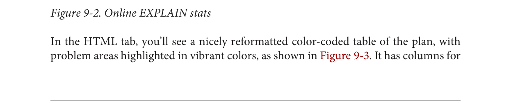
Figure 9-1. Graphical EXPLAIN output
You can get more detailed information about each part by mousing over the node in
the display.
Before wrapping up this section, we must pay homage to the tabular explain plan created
by Hubert Lubaczewski. Using his site, you can copy and paste the text output of your
EXPLAIN output, and it will show you a beautifully formatted table, as shown in
Figure 9-2.
Figure 9-2. Online EXPLAIN stats
In the HTML tab, you’ll see a nicely reformatted color-coded table of the plan, with
problem areas highlighted in vibrant colors, as shown in Figure 9-3. It has columns for
exclusive time (time consumed by the parent step) and inclusive time (the time of the
parent step plus its child steps).
Figure 9-3. Tabular explain output
Although the HTML table in Figure 9-3 provides much the same information as our
plain-text output, the color coding and breakout of numbers makes it easier to see where
our estimates are off. For example, yellow, brown, and red highlight areas where you
should focus.
The rows x column is the expected number of rows, while the rows column shows the
actual number. This reveals that although our final step was expecting 192 records, it
received just one, and the bitmap scan returned 203 false positives caught by the recheck.
Bad row estimates often stem from out-of-date table statistics. It’s always a good idea to
run an analysis on tables before a long query to update the statistics.
Gathering Statistics on Statements
The first step in optimizing performance is to determine which queries are bottlenecks.
One monitoring extension useful for getting a handle on your most costly queries is
pg_stat_statements. This extension provides metrics on running queries: which are the
most frequently run queries and how long each takes. Studying these metrics will help
you determine where you need to focus your query optimization efforts.
pg_stat_statements comes packaged with most PostgreSQL distributions but must be
preloaded on startup to initiate its data-collection process:
In postgresql.conf, change shared_preload_libraries = '' to shared_preload_libraries = 'pg_stat_statements'.
In the customized options section of postgresql.conf, add the lines:
pg_stat_statements.max = 10000
pg_stat_statements.track = all
Restart your postgresql service.
In any database you want to use for monitoring, enter CREATE EXTENSION
pg_stat_statements;.
The extension provides two key features:
A view called pg_stat_statements, which shows all the databases to which the
currently connected user has access.
A function called pg_stat_statements_reset, which flushes the query log. This
function can be run only by superusers.
The query in Example 9-7 lists the top five most costly queries in the postgresql_book
database.
Example 9-7. Expensive queries in specific database
SELECT
query, calls, total_time, rows,
100.0*shared_blks_hit/nullif(shared_blks_hit+shared_blks_read,0) AS hit_percent
FROM pg_stat_statements As s INNER JOIN pg_database As d On d.oid = s.dbid
WHERE d.datname = 'postgresql_book'
ORDER BY total_time DESC LIMIT 5;
Guiding the Query Planner
The planner’s behavior is driven by the presence of indexes, cost settings, strategy settings,
and its general perception of the distribution of data. In this section, we’ll go over
various approaches for optimizing the planner’s behavior.
Strategy Settings
Although the PostgreSQL query planner doesn’t accept index hints as some other database
products do, you can disable various strategy settings on a per-query or permanent basis
to dissuade the planner from going down an unproductive path. All planner optimizing
settings are documented in the section Planner Method Configuration of the manual. By
default, all strategy settings are enabled, arming the planner for maximum flexibility. You
can disable various strategies if you have some prior knowledge of the data. Keep in mind
that disabling doesn’t necessarily mean that the planner will be barred from using the
strategy. You’re only making a polite request to the planner to avoid it.
Two settings that we occasionally disable are the enable_nestloop and enable_seqscan.
The reason is that these two strategies tend to be the slowest and should be used
only as a last resort. Although you can disable them, the planner can still use them when
it has no viable alternative. When you do see them being used, it’s a good idea to double-
check that the planner is using them out of necessity, not out of ignorance. One quick
way to check is to disable them.
How Useful Is Your Index?
When the planner decides to perform a sequential scan, it plans to loop through all the
rows of a table. It opts for this route when it finds no index that could satisfy a query
condition, or it concludes that using an index is more costly than scanning the table. If
you disable the sequential scan strategy, and the planner still insists on using it, this
means that indexes are missing or that the planner thinks that the indexes you have in
place won’t be helpful for the particular query. Two common mistakes people make are
to leave useful indexes out of their tables or to put in indexes that can’t be used by their
queries. An easy way to check whether your indexes are used is to query the
pg_stat_user_indexes and pg_stat_user_tables views using the pg_stat_statements
extension described in “Gathering Statistics on Statements” on page 166.
Let’s start off with a query against the table we created in Example 7-18. We’ll add a GIN
index on the array column. GIN indexes are among the few indexes you can use to index
arrays:
CREATE INDEX idx_lu_fact_types ON census.lu_fact_types USING gin (fact_subcats);
To test our index, we’ll execute a query to find all rows with subcats containing “White
alone” or “Asian alone.” We explicitly enabled sequential scan even though it’s the default
setting, just to be sure. The accompanying EXPLAIN output is shown in Example 9-8.
Example 9-8. Allow planner choose sequential scan
set enable_seqscan = true;
EXPLAIN (ANALYZE)
SELECT *
FROM census.lu_fact_types
WHERE fact_subcats && '{White alone, Black alone}'::varchar[];
Seq Scan on lu_fact_types
(cost=0.00..2.85 rows=2 width=200) (actual time=0.066..0.076 rows=2 loops=1)
Filter: (fact_subcats && '{"White alone","Black alone"}'::character varying[]) Rows
Removed by Filter: 66
Planning time: 0.182 ms
Execution time: 0.108 ms
Observe that when enable_seqscan is enabled, our index is not being used and the
planner has chosen to do a sequential scan. This could be because our table is so small
or because the index we have is no good for this query. If we repeat the query but turn
off sequential scan beforehand, as shown in Example 9-9, we can see that we have suc-
ceeded in forcing the planner to use the index.
PostgreSQL: Up and Running187Example 9-9. Disable sequential scan, coerce index use
set enable_seqscan = false;
EXPLAIN (ANALYZE)
SELECT *
FROM census.lu_fact_types
WHERE fact_subcats && '{White alone, Black alone}'::varchar[];
Bitmap Heap Scan on lu_fact_types (cost=12.02..14.04 rows=2 width=200) (actual
time=0.058..0.058 rows=2 loops=1) Recheck Cond: (fact_subcats && '{"White
alone","Black alone"}'::character varying[]) Heap Blocks: exact=1 -> Bitmap Index
Scan on idx_lu_fact_types
(cost=0.00..12.02 rows=2 width=0) (actual time=0.048..0.048 rows=2 loops=1)
Index Cond: (fact_subcats && '{"White alone","Black alone"}'::character
varying[])
Planning time: 0.230 ms
Execution time: 0.119 ms
From this plan, we learn that our index can be used, but because the estimated cost is
more than doing a sequential scan, the planner under normal circumstances will opt
for the sequential scan. The planner was right in its assessment because our index execution
time turns out to be a little more than a sequential scan. As we add more data to
our table, we’ll probably find that the planner changes strategies to an index scan.
In contrast to the previous example, suppose we were to write a query of the form:
SELECT * FROM census.lu_fact_types WHERE 'White alone' = ANY(fact_subcats);
We would discover that, regardless of how we set enable_seqscan, the planner will
always perform a sequential scan because the index we have in place can’t service this
query. So it is important to consider which indexes will be useful and to write queries
to take advantage of them. And experiment, experiment, experiment!
Table Statistics
Despite what you might think or hope, the query planner is not a magician. Its decisions
follow prescribed logic that’s far beyond the scope of this book. The rules that the planner
follows depend heavily on the current state of the data. The planner can’t possibly scan
all the tables and rows prior to formulating its plan. That would be self-defeating. Instead,
it relies on aggregated statistics about the data.
Having accurate and current stats is crucial for the planner to make the right decision.
If stats differ greatly from reality, the planner will often come up with bad plans, the
most detrimental of these being unnecessary sequential table scans. Generally, only
about 20 percent of the entire table is sampled to produce stats. This percentage could
be even lower for very large tables. You can control the number of rows sampled on a
column-by-column basis by setting the STATISTICS value.
To get a sense of what the planner uses, query the pg_stats table, as illustrated in
Example 9-10:
SELECT
attname As colname,
n_distinct,
most_common_vals AS common_vals,
most_common_freqs As dist_freq
FROM pg_stats
WHERE tablename = 'facts'
ORDER BY schemaname, tablename, attname;
pg_stats gives the planner a sense of how actual values are dispersed within a given
column and lets it plan accordingly. The pg_stats table is constantly updated as a
background process. After a large data load or a major deletion, you should manually
update the stats by executing VACUUM ANALYZE. VACUUM permanently removes deleted
rows from tables; ANALYZE updates the stats.
For columns that participate often in joins and are used heavily in WHERE clauses, you
should consider increasing sampled rows.
ALTER TABLE census.facts ALTER COLUMN fact_type_id SET STATISTICS 1000;
Random Page Cost and Quality of Drives
Another setting that influences the planner is the random_page_cost (RPC) ratio, which
is the relative cost of the disk in retrieving a record using a sequential read versus using
random access. Generally, the faster (and more expensive) the physical disk, the lower
the ratio. The default value for RPC is 4, which works well for most mechanical hard
drives on the market today. The use of solid-state drives (SSDs), high-end storage area
networks (SANs), or cloud storage makes it worth tweaking this value.
You can set the RPC ratio per database, per server, or per tablespace. At the server level,
it makes most sense to set the ratio in the postgresql.conf file. If you have different kinds
of disks, you can set the values at the tablespace level using the ALTER TABLESPACE
command:
ALTER TABLESPACE pg_default SET (random_page_cost=2);
Details about this setting can be found at Random Page Cost Revisited. The article
suggests the following settings:
High-end NAS/SAN: 2.5 or 3.0
Amazon EBS and Heroku: 2.0
iSCSI and other mediocre SANs: 6.0, but varies widely
SSDs: 2.0 to 2.5
NvRAM (or NAND): 1.5
Caching
If you execute a complex query that takes a while to run, subsequent runs are often
much faster. Thank caching. If the same query executes in sequence, by the same user
or different users, and no changes have been made to the underlying data, you should
get back the same result. As long as there’s space in memory to cache the data, the planner
can skip replanning or reretrieving. Using common table expressions and immutable
functions in your queries encourages caching.
How do you check what’s in the current cache? If you are running PostgreSQL 9.1 or
later, you can install the pg_buffercache extension:
CREATE EXTENSION pg_buffercache;
You can then run a query against the pg_buffercache view, as shown in Example 9-11.
Example 9-11. Are my table rows in buffer cache?
SELECT
C.relname,
COUNT(CASE WHEN B.isdirty THEN 1 ELSE NULL END) As dirty_buffers,
COUNT(*) As num_buffers
FROM
pg_class AS C INNER JOIN
pg_buffercache B ON C.relfilenode = B.relfilenode INNER JOIN
pg_database D ON B.reldatabase = D.oid AND D.datname = current_database()
WHERE C.relname IN ('facts','lu_fact_types')
GROUP BY C.relname;
Example 9-11 returns the number of buffered pages of the facts and lu_fact_types
tables. Of course, to actually see buffered rows, you need to run a query. Try this one:
SELECT T.fact_subcats[2], COUNT(*) As num_fact
FROM census.facts As F INNER JOIN census.lu_fact_types AS T ON F.fact_type_id =
T.fact_type_id
GROUP BY T.fact_subcats[2];
The more onboard memory you have dedicated to the cache, the more room you’ll have
to cache data. You can set the amount of dedicated memory by changing the shared_buffers
setting in postgresql.conf. Don’t go overboard; raising shared_buffers too much
will bloat your cache, leading to more time wasted scanning the cache.
Nowadays, there’s no shortage of onboard memory. You can take advantage of this by
precaching commonly used tables using an extension called pg_prewarm, now packaged as
part of PostgreSQL 9.4. pg_prewarm lets you prime your PostgreSQL by loading
data from commonly used tables into memory so that the first user to hit the database
can experience the same performance boost offered by caching as later users. A good
article that describes this feature is Prewarming relational data.
Writing Better Queries
The best and easiest way to improve query performance is to start with well-written
queries. Four out of five queries we encounter are not written as efficiently as they could
be.
There appear to be two primary causes for all this bad querying. First, we see people
reuse SQL patterns without thinking. For example, if they successfully write a query
using a left join, they will continue to use left join when incorporating more tables
instead of considering the sometimes more appropriate inner join. Unlike other programming
languages, the SQL language does not lend itself well to blind reuse.
Second, people don’t tend to keep up with the latest developments in their dialect of
SQL. If a PostgreSQL user is still writing SQL as if he still had an early version, he would
be oblivious to all the syntax-saving (and sanity-saving) addenda that have come along.
Writing efficient SQL takes practice. There’s no such thing as a wrong query as long as
you get the expected result, but there is such a thing as a slow query. In this section, we
point out some of the common mistakes we see people make. Although this book is
about PostgreSQL, our recommendations are applicable to other relational databases
as well.
Overusing Subqueries in SELECT
A classic newbie mistake is to think of subqueries as independent entities. Unlike conventional
programming languages, SQL doesn’t take kindly to the idea of black-boxing
—writing a bunch of subqueries independently and then assembling them mindlessly
to get the final result. You have to treat each query holistically. How you piece together
data from different views and tables is every bit as important as how you go about
retrieving the data in the first place.
The unnecessary use of subqueries, as shown in Example 9-12, is a common symptom
of piecemeal thinking.
Example 9-12. Overusing subqueries
SELECT tract_id,
(SELECT COUNT(*) FROM census.facts As F WHERE F.tract_id = T.tract_id) As
num_facts,
(SELECT COUNT(*)
FROM census.lu_fact_types As Y
WHERE Y.fact_type_id IN (
SELECT fact_type_id
FROM census.facts F
WHERE F.tract_id = T.tract_id
)
) As num_fact_types
FROM census.lu_tracts As T;
Example 9-12 can be more efficiently written as shown in Example 9-13. This query,
consolidating selects and using a join, is not only shorter than the prior one, but faster.
If you have a larger dataset or weaker hardware, the difference could be even more
pronounced.
Example 9-13. Overused subqueries simplified
SELECT T.tract_id,
COUNT(f.fact_type_id) As num_facts,
COUNT(DISTINCT fact_type_id) As num_fact_types
FROM census.lu_tracts As T LEFT JOIN census.facts As F ON T.tract_id = F.tract_id
GROUP BY T.tract_id;
Figure 9-4 shows the graphical plan for Example 9-12 (we’ll save you the eyesore of
seeing the gnarled output of the text EXPLAIN), while Figure 9-5 shows the tabular output
from http://explain.depesz.com, revealing a great deal of inefficiency.
PostgreSQL: Up and Running193Figure 9-6. Graphical plan of removing subqueries
Keep in mind that we’re not asking you to avoid subqueries entirely. We’re only asking
you to use them judiciously. When you do use them, pay extra attention to how you
incorporate them into the main query. Finally, remember that a subquery should work
with the the main query, not independently of it.
Avoid SELECT *
SELECT * is wasteful. It’s akin to printing out a 1,000-page document when you need
only 10 pages.
Besides the obvious downside of adding to network traffic, there are two
other drawbacks that you might not think of.
First, PostgreSQL stores large blob and text objects using TOAST (The Oversized-
Attribute Storage Technique). TOAST maintains side tables for PostgreSQL to store this
extra data. So retrieving a large field means that TOAST must assemble the data from
rows across different tables. Imagine the extra processing if your table contains text data
the size of War and Peace and you perform an unnecessary SELECT *.
Second, when you define views, you often will include more columns than you’ll need.
You might even go so far as to use SELECT * inside a view. This is understandable and
perfectly fine. PostgreSQL is smart enough to let you request all the columns you want
in your view definition and even include complex calculations or joins without incurring
penalty, as long as no user runs a query referring to the columns.
To drive home our point, let’s wrap our census in a view and use the slow subquery
example from Example 9-12:
CREATE OR REPLACE VIEW vw_stats AS
SELECT tract_id,
(SELECT COUNT(*) FROM census.facts As F WHERE F.tract_id = T.tract_id) As
num_facts,
(SELECT COUNT(*)
FROM census.lu_fact_types As Y
WHERE Y.fact_type_id IN (
SELECT fact_type_id
FROM census.facts F
WHERE F.tract_id = T.tract_id
)
execution time is about 21 ms on our server because it doesn’t run any computation for
certain field such as num_facts and num_fact_types, fields we did not ask for. If you
looked at the plan, you may be startled to find that it never even touches the facts table
because it’s smart enough to know it doesn’t need to. But if we use:
SELECT * FROM vw_stats;
our execution time skyrockets to 681 ms, and the plan is just as we had in Figure 9-4.
Although our results in this example suffer the loss of just milliseconds, imagine tables
with tens of millions of rows and hundreds of columns. Those milliseconds could
translate into overtime at the office waiting for a query to finish.
Make Good Use of CASE
We’re always surprised how frequently people forget about using the ANSI SQL CASE
expression. In many aggregate situations, a CASE can obviate the need for inefficient
subqueries. We’ll demonstrate the point with two equivalent queries and their corresponding
plans. Example 9-14 uses subqueries.
Example 9-14. Using subqueries instead of CASE
SELECT T.tract_id, COUNT(*) As tot, type_1.tot AS type_1
FROM
census.lu_tracts AS T LEFT JOIN
(SELECT tract_id, COUNT(*) As tot
FROM census.facts
WHERE fact_type_id = 131
GROUP BY tract_id
) As type_1 ON T.tract_id = type_1.tract_id LEFT JOIN
census.facts AS F ON T.tract_id = F.tract_id
GROUP BY T.tract_id, type_1.tot;
Figure 9-7 shows the graphical plan of Example 9-14.
Figure 9-7. Graphical plan of using subqueries instead of CASE
We now rewrite the query using CASE. You’ll find that the economized query, shown in
Example 9-15, is generally faster and much easier to read.
Example 9-15. Using CASE instead of subqueries
SELECT T.tract_id, COUNT(*) As tot,
COUNT(CASE WHEN F.fact_type_id = 131 THEN 1 ELSE NULL END) AS type_1
FROM census.lu_tracts AS T LEFT JOIN census.facts AS F
ON T.tract_id = F.tract_id
GROUP BY T.tract_id;
Figure 9-8 shows the graphical plan of Example 9-15.
Figure 9-8. Graphical EXPLAIN of using CASE instead
Even though our rewritten query still doesn’t use the fact_type index, it’s faster than
using subqueries because the planner scans the facts table only once. A shorter plan
is generally not only easier to comprehend but also often performs better than a longer
one, although not always.
Using Filter Instead of CASE
PostgreSQL 9.4 offers the new FILTER construct, which we introduced in “FILTER
Clause for Aggregates” on page 131. FILTER can often replace CASE in aggregate expressions.
Not only is this syntax pleasanter to look at, but in many cases performs better.
We repeat Example 9-15 with the equivalent filter version in Example 9-16.
Example 9-16. Using CASE instead of subqueries
SELECT T.tract_id, COUNT(*) As tot,
COUNT(*) FILTER(WHERE F.fact_type_id = 131) AS type_1
FROM census.lu_tracts AS T LEFT JOIN census.facts AS F
ON T.tract_id = F.tract_id
GROUP BY T.tract_id;
For this particular example, the FILTER performance is only about a millisecond faster
than our CASE version, and the plans are more or less the same.
PostgreSQL has a number of options for sharing data with external servers or data
sources. The first option is the built-in replication options of PostgreSQL, which allows
you to create a copy of your server ready to run on another PostgreSQL server. The
second option is to use third-party add-ons, many of which are freely available and
time-tested. The third option, unveiled in version 9.1, is to use foreign data wrappers
(FDW). FDWs gives you the flexibility to query from a wide array of external data
sources. Since version 9.3, some FDWs such as postgres_fdw and hadoop_fdw also
permit updating.
Replication Overview
The seemingly countless reasons for the need to replicate your databases all distill down
to two: availability and scalability. If your main server goes down, you want another to
immediately assume its role. For small databases, you could just make sure you have
another physical server ready and restore the database onto it. But for large databases
(in the terabytes), the restore itself could take many hours. To avoid downtime, you’ll
need to replicate. The other main reason is scalability. You set up a database to breed
fancy elephant shrews for profit. After a few years of breeding, you now have thousands
of shrews. People all over the world come to your site to gawk and purchase. You’re
overwhelmed by the traffic. Replication comes to your aid; you set up a read-only slave
server to replicate with your main server. You direct the countless gawkers to the slave,
and only let serious buyers onto the master server to finalize their purchases.
Replication Jargon
Before we get too carried away with replication, we had better introduce some common
lingo used in connection with it:
Master The master server is the database server sourcing the data being replicated and
where all updates happen. You’re allowed only one master when using the built-in
replication features of PostgreSQL. Plans are in place to support multimaster replication
scenarios. Watch for it in future releases.
Slave A slave server consumes the replicated data and provides a replica of the master.
More aesthetically pleasing terms such as subscriber and agent have been bandied
about, but slave is still the most apropos. PostgreSQL built-in replication supports
only read-only slaves at this time.
Write-ahead log (WAL) WAL is the log that keeps track of all transactions, often referred to as the transaction
log in other database products. To stage replication, PostgreSQL simply makes the
logs available to the slaves. Once slaves have pulled the logs, they just need to execute
the transactions therein.
Synchronous A transaction on the master will not be considered complete until at least one slave
is updated. If you have multiple synchronous slaves, they do not all need to respond
for success.
Asynchronous A transaction on the master will commit even if slaves haven’t been updated. This
is useful in the case of distant servers where you don’t want transactions to wait
because of network latency, but the downside is that your dataset on the slave might
lag behind, and the slave might miss some transactions in the event of transmission
failure.
Streaming The streaming replication model was introduced in PostgreSQL 9.0. Unlike prior
versions, it does not require direct file access between master and slaves. Instead,
it relies on the PostgreSQL connection protocol to transmit the WALs.
Cascading replication Starting with version 9.2, slaves can receive logs from nearby slaves instead of directly
from the master. This allows a slave to also behave like a master for replication
purposes. The slave remains read-only. When a slave acts as both a receiver and a
sender, it is called a cascading standby.
Remastering Remastering is the process whereby you promote a slave to be the master. Up to
and including version 9.2, this was a process that required using WAL file archiving
instead of streaming replication. It also required all slaves to be recloned. Version
9.3 introduced streaming-only remastering, which means remastering no longer
needs access to a WAL archive; it can be done via streaming, and slaves no longer
need to be recloned. As of version 9.4, a restart is still required though. This may
change in future releases.
Unlogged tables don’t participate in replication.
Evolution of PostgreSQL Replication
PostgreSQL’s stock replication relies on WAL shipping. In versions prior to 9.3, streaming
replication slaves must be running the same architecture to ensure faithful execution
of the received log stream. Streaming replication in version 9.3 and later is now
architecture-independent but still requires all servers to run the same version of PostgreSQL.
Support for built-in replication improved over the following PostgreSQL releases:
Prior to version 9.0, PostgreSQL offered only asynchronous warm slaves. A warm
slave retrieved the WAL and kept itself in sync but was not be available for queries.
It acted only as a standby.
Version 9.0 introduced asynchronous hot slaves as well as streaming replication,
whereby users can execute read-only queries against the slave and replication can
happen without direct file access between the servers (using database connections
for shipping logs instead).
With version 9.1, synchronous replication became possible.
Version 9.2 introduced cascading streaming replication. The main benefit is reductions
in latency. It’s much faster for a slave to receive updates from a nearby slave
than from a master far, far away.
Third-Party Replication Options
As alternatives to PostgreSQL’s built-in replication, common third-party options
abound. Slony and Bucardo are two of the most popular open source ones. Although
PostgreSQL is improving replication with each new release, Slony, Bucardo, and other
third-party replication options still offer more flexibility. Slony and Bucardo allow you
to replicate individual databases or even tables instead of the entire server. They also
don’t require that all masters and slaves be of the same PostgreSQL version and OS. Both
also support multimaster scenarios. However, both rely on additional triggers to initiate
the replication and often don’t support DDL commands for actions such as creating
new tables, installing extensions, and so on. This makes them more invasive than merely
shipping logs.
Postgres-XC, still in beta, is starting to gain an audience. The raison d’être of Postgres-
XC is not replication but distributed query processing. It is designed with scalability in
mind rather than high availability. Postgres-XC is not an add-on to PostgreSQL but a
completely separate fork focused on providing a write-scalable, multimaster symmetric
cluster very similar in purpose to Oracle RAC.
Let’s go over the steps to set up replication. We’ll take advantage of streaming introduced
in version 9.0, which requires connections only at the PostgreSQL database level between
the master and slaves. We will also use features introduced in version 9.1 that
allow you to easily set up authentication accounts specifically for replication.
Configuring the Master
The basic steps for setting up the master server are:
Create a replication account:
CREATE ROLE pgrepuser REPLICATION LOGIN PASSWORD 'woohoo';
Alter the following configuration settings in postgresql.conf:
Add the archive_command configuration directive to postgresql.conf to indicate
where the WAL will be saved. With streaming, you’re free to choose any directory.
More details on this setting can be found at the PostgreSQL PGStandby documentation.
On Linux/Unix, your archive_command line should look something like:
archive_command = 'cp %p ../archive/%f'
You can also use rsync instead of cp if you want to archive to a different server:
The pg_hba.conf file should include a rule allowing the slaves to act as replication
agents. As an example, the following rule will allow a PostgreSQL account named
pgrepuser on a server on my private network with an IP address in the range
192.168.0.1 to 192.168.0.254 to replicate using an md5 password:
host replication pgrepuser 192.168.0.0/24 md5
Shut down the PostgreSQL service and copy all the files in the data folder except
the pg_xlog and pg_log folders to the slaves. Make sure that pg_xlog and pg_log
folders are both present on the slaves but devoid of any files.
If you have a large database cluster and can’t afford a shutdown for the duration of
the copy, you can use the pg_basebackup utility, found in the bin folder of your
PostgreSQL installation. This will create a copy of the data cluster files in the speci‐
fied directory and allow you to do a base backup while the postgres service is
running.
Configuring the Slaves
To minimize headaches, slaves should have the same configuration as the master, es‐
pecially if you’ll be using them for failover. In order for the server to be a slave, it must
be able to play back the WAL transactions of the master. The steps for creating a slave
are:
Create a new instance of PostgreSQL with the same version (preferably even mi‐
croversions) as your master server and the same OS at the same patch level. Keeping
servers identical is not a requirement, and you’re welcome to experiment and see
how far you can deviate.
Shut down PostgreSQL on the new slave.
Overwrite the data folder files with those you copied from the master.
Add the following configuration setting to the postgresql.conf file:
hot_standby = on
You don’t need to run the slaves on the same port as the master, so you can optionally
change the port either via postgresql.conf or via some other OS-specific startup script
that sets the PGPORT environment variable before startup. Any startup script will
override the setting you have in postgresql.conf.
Create a new file in the data folder called recovery.conf that contains the following
lines, and substitute the actual host name, IP address, and port of your master on
the second line:
If you find that the slave can’t play back WALs fast enough, you can specify a location
for caching. In that case, add to the recovery.conf file a line such as the following,
which varies depending on the OS:
On Linux/Unix
restore_command = 'cp %p ../archive/%f'
On Windows
restore_command = 'copy %p ..\\archive\\%f'
In this example, the archive folder is where we’re caching.
Initiating the Replication Process
It’s a good idea to start up the postgres service on all the slaves before starting it on the
master. Otherwise, the master might start writing data or altering the database before
the slaves can capture and replicate the changes. When you start up each slave server,
you’ll get an error in logs saying that it can’t connect to the master. Ignore the message.
Once the slaves have started, start up the postgres service on the master.
You should now be able to connect to both servers. Any changes you make on the master,
even structural changes such as installing extensions or creating tables, should trickle
down to the slaves. You should also be able to query the slaves.
When and if the time comes to liberate a chosen slave, create a blank file called failover.now
in the data folder of the slave. PostgreSQL will then complete playback of WAL
and rename the recovery.conf file to recover.done. At that point, your slave will be unshackled
from the master and continue life on its own with all the data from the last
WAL. Once the slave has tasted freedom, there’s no going back. In order to make it a
slave again, you’ll need to go through the whole process from the beginning.
Foreign Data Wrappers
Foreign data wrappers (FDWs) are an extensible, standard-complaint method for your
PostgreSQL server to query other data sources: other PostgreSQL servers, and many
types of non-PostgreSQL data sources. FDW was first introduced in PostgreSQL 9.1. At
the center of the concept is a foreign table, a table that you can query like one in your
PostgreSQL database but that resides in another data source, perhaps even on another
physical server. Once you put in the effort to establish foreign tables, they persist in your
database and you’re forever free from having to worry about the intricate protocols of
communicating with alien data sources. You can find a catalog of FDWs for PostgreSQL
at PGXN FDW and PGXN Foreign Data Wrapper. You can also find examples of usage
in PostgreSQL Wiki FDW.
At this time, the FDW extension automatically installs two wrappers by default:
file_fdw and postgres_fdw. If you need to to wrap foreign data sources, start by visiting
these two links to see whether someone has already done the work of creating wrappers.
If not, try creating one yourself. If you succeed, be sure to share it with others.
In PostgreSQL 9.1 and 9.2, you’re limited to SELECT queries against the FDW. PostgreSQL 9.3 introduced an API feature to update foreign tables. postgres_fdw is the only
FDW shipped with PostgreSQL that supports this new feature.
In this section, we’ll demonstrate how to register foreign servers, foreign users, and
foreign tables, and finally, how to query foreign tables. Although we use SQL to create
and delete objects in our examples, you can perform the exact same commands using
pgAdmin III.
Querying Flat Files
The file_fdw wrapper is packaged as an extension. To install, use the SQL:
CREATE EXTENSION file_fdw;
Although file_fdw can read only from file paths accessible by your local server, you
still need to define a server for it for the sake of consistency. Issue the following command
to create a “faux” foreign server in your database:
CREATE SERVER my_server FOREIGN DATA WRAPPER file_fdw;
Next, you must register the tables. You can place foreign tables in any schema you want.
We usually create a separate schema to house foreign data. For this example, we’ll use
our staging schema, as shown in Example 10-1.
Example 10-1. Make a foreign table from a delimited file
In our example, even though we’re registering a pipe-delimited file, we still use the csv
option. A CSV file, as far as FDW is concerned, represents any file delimited by specified
characters, regardless of delimiter.
When the setup is finished, you can finally query your pipe-delimited file directly:
SELECT * FROM staging.devs WHERE developer LIKE 'T%';
Once you no longer need our foreign table, you can drop it:
Often, flat-file data sources have a different number of columns in each line and contain
multiple header rows and footer rows. These kinds of files tend to be prevalent when
the flat files originated as spreadsheets. Our favorite flat-file FDW for handling these
unstructured flat files is file_textarray_fdw. This wrapper can handle any kind of
delimited flat file, even if the number of elements in each row is inconsistent. It brings
in each row as a text array (text[]).
Unfortunately, file_textarray_fdw is not part of the core PostgreSQL offering, so
you’ll need to compile it yourself. First, install PostgreSQL with PostgreSQL development
headers. Then download the file_textarray_fdw source code from the Adunstan
GitHub site. There is a different branch for each version of PostgreSQL, so make
sure to pick the right branch. Once you’ve compiled the code, install it as an extension,
as you would any other FDW.
Our example CSV begins with eight header rows and has more columns than we care
to count. When the setup is finished, you can finally query our delimited file directly.
This following query will give us the names of the header rows where the first column
header is GEO.id:
SELECT unnest(x) FROM staging.factfinder_array WHERE x[1] = 'GEO.id'
This next query will give us the first two columns of our data:
SELECT x[1] As geo_id, x[2] As tract_id FROM staging.factfinder_array WHERE
x[1] ~ '[0-9]+';
When you no longer need the foreign table, you can drop it:
DROP FOREIGN TABLE staging.factfinder_array;
Querying Other PostgreSQL Servers
The PostgreSQL FDW, postgres_fdw, is packaged with most distributions of PostgreSQL
9.3. This FDW allows you to read as well as push updates to other PostgreSQL
servers, even different versions.
Start by installing the FDW for the PostgreSQL server in a new database:
CREATE EXTENSION postgres_fdw;
Next, create a foreign server:
CREATE SERVER book_server
FOREIGN DATA WRAPPER postgres_fdw
OPTIONS (host 'localhost', port '5432', dbname 'postgresql_book');
If you need to change or add connection options to the foreign server after creation,
you can use the ALTER SERVER command. For example, if you needed to change the
server you are pointing to, you could do:
ALTER SERVER book_server OPTIONS (SET host 'prod');
Changes to connection settings such as the host, port, and database do not take effect
until a new session is created. This is because the connection is opened on first use and is kept open.
Next, create a user, mapping its public role to a single role on the foreign server:
CREATE USER MAPPING FOR public SERVER book_server
OPTIONS (user 'role_on_foreign', password 'your_password');
Anyone who can connect to your database will be able to access the foreign server as
well. The role you map to must exist on the foreign server and have login rights.
Now you are ready to create a foreign table. This table can have a subset or full set of
columns of the table it connects to. In Example 10-3, we create a foreign table that maps
to the census.facts table.
Example 10-3. Defining a PostgreSQL foreign table
CREATE FOREIGN TABLE ft_facts (
fact_type_id int NOT NULL, tract_id varchar(11),
yr int, val numeric(12,3), perc numeric(6,2))
SERVER book_server OPTIONS (schema_name 'census', table_name 'facts');
This example includes only the most basic options for the foreign table. By default, all
PostgreSQL foreign tables are editable/updatable, unless of course the remote account
you used doesn’t have update access to that table. The updatable setting is a Boolean
setting that can be changed at the foreign table or the foreign server definition. For
example, to make your table read-only, execute:
ALTER FOREIGN TABLE ft_facts OPTIONS (ADD updatable 'false');
You can set the table back to updatable by running:
ALTER FOREIGN TABLE ft_facts OPTIONS (SET updatable 'true');
The updatable property at the table level overrides the foreign server setting.
In addition to changing OPTIONS, you can also add and drop columns with the ALTER
FOREIGN TABLE statement. The statement is covered in PostgreSQL Manual ALTER
FOREIGN TABLE.
Querying Nonconventional Data Sources
The database world does not appear to be getting more homogeneous. Exotic databases
are sprouting up faster than we can keep tabs on. Some are fads and quickly drown in
their own hype. Some aspire to dethrone relational databases altogether. Some could
hardly be considered databases. The introduction of FDWs is in part a response to the
growing diversity. FDW assimilates without compromising the PosgreSQL core.
In this next example, we’ll demonstrate how to use the www_fdw FDW to query web
services. We borrowed the example from www_fdw Examples.
The www_fdw FDW is not generally packaged with PostgreSQL. If you are on Linux/
Unix, it’s an easy compile if you have the postgresql-dev package installed and can
download the latest source. We did the work of compiling for some Windows platforms;
you can download our binaries from Windows-32 9.1 FDWs and Windows-64 9.3
FDWs.
Now create an extension to hold the FDW:
CREATE EXTENSION www_fdw;
Then create your Google foreign data server:
CREATE SERVER www_fdw_server_google_search
FOREIGN DATA WRAPPER www_fdw
OPTIONS (uri 'http://ajax.googleapis.com/ajax/services/search/web?v=1.0');
The default format supported by www_fdw is JSON, so we didn’t need to include it in the
OPTIONS modifier. The other supported format is XML. For details on additional parameters
that you can set, refer to the www_fdwdocumentation. Each FDW is different
and comes with its own API settings.
Next, establish at least one user for your FDW. All users that connect to your server
should be able to access the Google search server, so here we create one for the entire
public group:
CREATE USER MAPPING FOR public SERVER www_fdw_server_google_search;
Now create your foreign table, as shown in Example 10-4.
Example 10-4. Make a foreign table from Google
CREATE FOREIGN TABLE www_fdw_google_search (
q text,
GsearchResultClass text,
unescapedUrl text,
url text,
visibleUrl text,
cacheUrl text,
title text,
content text
) SERVER www_fdw_server_google_search;
The user mapping doesn’t assign any rights. You still need to grant rights before being
able to query the foreign table:
GRANT SELECT ON TABLE www_fdw_google_search TO public;
Now comes the fun part. We search with the term New in PostgreSQL 9.4 and mix in
a bit of regular expression goodness to strip off HTML tags:
SELECT regexp_replace(title, E'(?x)(< [^>]*? >)', '', 'g') As title
FROM www_fdw_google_search where q='New in PostgreSQL 9.4'
LIMIT 2;
Voilà! We have our response:
title
----------------------------------------------------
What's new in PostgreSQL 9.4 - PostgreSQL wiki
PostgreSQL: PostgreSQL 9.4 Beta 1 Released
(2 rows)
EnterpriseDB builds installers for Windows and desktop versions of Linux. For Windows
users, this is the preferred installer to use.
The installers are easy to use. They come packaged with PgAdmin and a stack builder
from which you can install add-ons like JDBC, .NET drivers, Ruby, PostGIS, phpPgAdmin,
and pgAgent.
EnterpriseDB has two PostgreSQL offerings: the official, open source edition of PostgreSQL,
dubbed the Community Edition; and its proprietary edition, called Advanced
Plus. The proprietary fork offers Oracle compatibility and enhanced management features.
Don’t get confused between the two when you download installers. In this book,
we focused on the official PostgreSQL, not Postgres Plus Advanced Server; however,
much of the material applies to Postgres Plus Advanced Server.
If you want to try out different versions of PostgreSQL on the same
machine or want to run it from a USB device, EnterpriseDB also offers
binaries. Read Starting PostgreSQL in Windows without Install for
guidance.
CentOS, Fedora, Red Hat, Scientific Linux
Most Linux/Unix distributions offer PostgreSQL in their main repositories, though the
version might be outdated. To compensate, many people use backports, which are alternative
package repositories offering newer versions.
For adventurous Linux users, download the latest PostgreSQL, including the developmental
versions, by going to the PostgreSQL Yum repository. Not only will you find the
core server, but you can also retrieve popular add-ons. PostgreSQL developers maintain
this repository and release patches and updates as soon as they are available. At the time
of writing, PostgreSQL Yum repository is available for Fedora 14-20, Red Hat Enterprise
Linux 4-6, CentOS 4-6, and Scientific Linux 5-6. If you have older versions of the OS or
still need PostgreSQL 8.3, check the documentation to see what the repository still
maintains. For detailed installation instructions using YUM, refer to the Yum section
of our PostgresOnLine journal site.
Debian, Ubuntu
Ubuntu stays up to date with latest versions of PostgreSQL. Debian tends to be a bit
slower. You can install the latest PostgreSQL with:
sudo apt-get install postgresql-9.3
If you plan to compile add-ons generally not packaged with PostgreSQL, such as PostGIS
or R, then you’ll want to install the development libraries:
sudo apt-get install postgresql-server-dev-9.3
If your repository doesn’t have the latest version of PostgreSQL, try visiting the AptPostgreSQL packages for the latest stable and beta releases. They also offer additional
packages such as PL/V8 and PostGIS. At last check, they have packages for Debian 6-7
and Ubuntu 10-14.
FreeBSD
FreeBSD is a popular platform for PostgreSQL. However, many people who use FreeBSD
tend to compile their own directly from source rather than using a packaged distribution.
You can find the latest beta versions of PostgreSQL at FreeBSD.
Mac OS X
We’ve seen a variety of ways to install PostgreSQL on Macs. EnterpriseDB offers an
installer. The Homebrew is gaining popularity and attracts advanced Mac users. KyngChaos
is suitable for folks looking for an up-to-date and complete open source GIS
experience. Postgres.app is a newcomer geared for the novice. The long-standing MacPorts
and Fink distributions are still around. We do advise against mixing installers for
Mac users. For instance, if you installed PostgreSQL using KyngChaos, don’t go to EnterpriseDB
to get add-ons:
EnterpriseDB maintains an easy-to-use, one-step installer for Mac OS X. PgAdmin
comes as part of the installer. For add-ons, EnterpriseDB offers a stack builder
program, from which you can install popular extensions, drivers, languages, and
administration tools.
Homebrew is a Mac OS package manager for many things PostgreSQL. Russ Brooks
dishes out step-by-step instructions for installing PostgreSQL 9 on Homebrew. You
can follow these steps for later versions of PostgreSQL, as little has changed in the
way of installation procedures. Upgrading from 9.2 to 9.3 with Brew provides instructions
for upgrading an older install. You’ll find plenty of useful articles at the
Homebrew PostgreSQL Wiki.
Postgres.app distributed by Heroku is a free desktop distribution touted as the
easiest way to get started with PostgreSQL on the Mac. It usually maintains the latest
version of PostgreSQL bundled with popular extensions such as PostGIS, PL/
Python, and PLV8. Postgres.app runs as a standalone application that you can stop
and start as needed, making it suitable for development or single users.
KyngChaos PostgreSQL + GIS has the latest release package of PostgreSQL geared
toward GIS users. PostGIS, pgRouting, R, and QGIS come standard.
MacPorts is a Mac OS X package distribution for compiling, installing, and upgrading
many open source packages. It’s the oldest of the Mac OS distributions
systems that carries PostgreSQL. At time of writing, PostgreSQL 9.3 is the latest
version.
Fink is a Mac OS X package distribution based on the Debian apt-get installation
framework. As the time of writing, it offers version 9.2 and trails behind other Mac
distributions.
This appendix summarizes indispensable command-line tools packaged with PostgreSQL
server. We discussed them at length in the book. Here we list their help messages.
We hope to save you a bit of time with their inclusion and perhaps make this book a
not-so-strange bedfellow.
Database Backup Using pg_dump
Use pg_dump to back up all or part of a database. Backup file formats available are TAR,
compressed (PostgreSQL custom format), plain text, and plain-text SQL. Plain-text
backup can copy psql-specific commands; therefore, restore by running the file within
psql. Plain-text SQL backup is merely a file with standard SQL CREATE and INSERT
commands. To restore, you can run the file using psql or pgAdmin. Example B-1 shows
the pg_dump help output. For full covereage of pg_dump usage, see “Selective Backup
Using pg_dump” on page 38.
Example B-1. pg_dump help
pg_dump --help
pg_dump dumps a database as a text file or to other formats.
Usage:
pg_dump [OPTION]... [DBNAME]
General options:
-f, --file=FILENAME output file or directory name
-F, --format=c|d|t|p output file format (custom, directory, tar, plain
text)
-j, --jobs=NUM use this many parallel jobs to dump
-v, --verbose verbose mode
-Z, --compress=0-9 compression level for compressed formats
--lock-wait-timeout=TIMEOUT fail after waiting TIMEOUT for a table lock
--help show this help, then exit
--version output version information, then exit
Options controlling the output content:
-a, --data-only dump only the data, not the schema
-b, --blobs include large objects in dump
-c, --clean clean (drop) database objects before recreating
-C, --create include commands to create database in dump
-E, --encoding=ENCODING dump the data in encoding ENCODING
-n, --schema=SCHEMA dump the named schema(s) only
-N, --exclude-schema=SCHEMA do NOT dump the named schema(s)
-o, --oids include OIDs in dump
-O, --no-owner skip restoration of object ownership in
plain-text format
-s, --schema-only dump only the schema, no data
-S, --superuser=NAME superuser user name to use in plain-text format
-t, --table=TABLE dump the named table(s) only
-T, --exclude-table=TABLE do NOT dump the named table(s)
-x, --no-privileges do not dump privileges (grant/revoke)
--binary-upgrade for use by upgrade utilities only
--column-inserts dump data as INSERT commands with column names
--disable-dollar-quoting disable dollar quoting, use SQL standard quoting
--disable-triggers disable triggers during data-only restore
--exclude-table-data=TABLE do NOT dump data for the named table(s) ②
--if-exists use IF EXISTS when dropping objects ③
--inserts dump data as INSERT commands, rather than COPY
--no-security-labels do not dump security label assignments
--no-synchronized-snapshots do not use synchronized snapshots in parallel jobs ④
--no-tablespaces do not dump tablespace assignments
--no-unlogged-table-data do not dump unlogged table data
--quote-all-identifiers quote all identifiers, even if not key words
--section=SECTION dump named section (pre-data, data, or post-data) ⑤
--serializable-deferrable wait until the dump can run without anomalies
--use-set-session-authorization
use SET SESSION AUTHORIZATION commands instead of
ALTER OWNER commands to set ownership
Connection options:
-d, --dbname=DBNAME database to dump ⑥
-h, --host=HOSTNAME database server host or socket directory
-p, --port=PORT database server port number
-U, --username=NAME connect as specified database user
-w, --no-password never prompt for password
-W, --password force password prompt (should happen automatically)
--role=ROLENAME do SET ROLE before dump
Use pg_dump_all to back up all databases on your server onto a single plain-text or
plain-text SQL file. The backup routine will automatically include server-level objects
such as roles and tablespaces. Example B-2 shows the pg_dumpall help output. See
“Systemwide Backup Using pg_dumpall” on page 40 for the full discussion.
Example B-2. pg_dumpall help
pg_dumpall --help
pg_dumpall extracts a PostgreSQL database cluster into an SQL script file.
Usage:
pg_dumpall [OPTION]...
General options:
-f, --file=FILENAME output file name
--lock-wait-timeout=TIMEOUT fail after waiting TIMEOUT for a table lock
--help show this help, then exit
--version output version information, then exit
Options controlling the output content:
-a, --data-only dump only the data, not the schema
-c, --clean clean (drop) databases before recreating
-g, --globals-only dump only global objects, no databases
-o, --oids include OIDs in dump
-O, --no-owner skip restoration of object ownership
-r, --roles-only dump only roles, no databases or tablespaces
-s, --schema-only dump only the schema, no data
-S, --superuser=NAME superuser user name to use in the dump
-t, --tablespaces-only dump only tablespaces, no databases or roles
-x, --no-privileges do not dump privileges (grant/revoke)
--binary-upgrade for use by upgrade utilities only
--column-inserts dump data as INSERT commands with column names
--disable-dollar-quoting disable dollar quoting, use SQL standard quoting
--disable-triggers disable triggers during data-only restore
--inserts dump data as INSERT commands, rather than COPY
--no-security-labels do not dump security label assignments
--no-tablespaces do not dump tablespace assignments
--no-unlogged-table-data do not dump unlogged table data
--quote-all-identifiers quote all identifiers, even if not key words
--use-set-session-authorization
use SET SESSION AUTHORIZATION commands instead o
ALTER OWNER commands to set ownership
Connection options:
-d, --dbname=CONNSTR connect using connection string
-h, --host=HOSTNAME database server host or socket directory
-l, --database=DBNAME alternative default database
-p, --port=PORT database server port number
-U, --username=NAME connect as specified database user
-w, --no-password never prompt for password
-W, --password force password prompt (should happen automatically)
--role=ROLENAME do SET ROLE before dump
If -f/--file is not used, then the SQL script will be written to the standard
output.
① New in PostgreSQL 9.3.
Database Restore: pg_restore
Use pg_restore to restore backup files in tar, custom, or directory formats created using
pg_dump. Example B-3 shows the pg_restore help output. See “Restore” on page 40 for
more examples.
Example B-3. pg_restore help
pg_restore --help
pg_restore restores a PostgreSQL database from an archive created by pg_dump.
Usage:
pg_restore [OPTION]... [FILE]
General options:
-d, --dbname=NAME connect to database name
-f, --file=FILENAME output file name
-F, --format=c|d|t backup file format (should be automatic)
-l, --list print summarized TOC of the archive
-v, --verbose verbose mode
-V, --version output version information, then exit
-?, --help show this help, then exit
Options controlling the restore:
-a, --data-only restore only the data, no schema
-c, --clean clean (drop) database objects before recreating
-C, --create create the target database
-e, --exit-on-error exit on error, default is to continue
-I, --index=NAME restore named index
-j, --jobs=NUM use this many parallel jobs to restore
-L, --use-list=FILENAME use table of contents from this file for
selecting/ordering output
-n, --schema=NAME restore only objects in this schema
-O, --no-owner skip restoration of object ownership
-P, --function=NAME(args) restore named function
-s, --schema-only restore only the schema, no data
-S, --superuser=NAME superuser user name to use for disabling triggers
-t, --table=NAME restore named table(s)
-T, --trigger=NAME restore named trigger
-x, --no-privileges skip restoration of access privileges (grant/revoke)
-1, --single-transaction restore as a single transaction
--disable-triggers disable triggers during data-only restore
--no-data-for-failed-tables do not restore data of tables that could not be ①
created
--no-security-labels do not restore security labels
--no-tablespaces do not restore tablespace assignments
--section=SECTION restore named section (pre-data, data, or post-data)
--use-set-session-authorization ①
use SET SESSION AUTHORIZATION commands instead of
ALTER OWNER commands to set ownership
Connection options:
-h, --host=HOSTNAME database server host or socket directory
-p, --port=PORT database server port number
-U, --username=NAME connect as specified database user
-w, --no-password never prompt for password
-W, --password force password prompt (should happen automatically)
--role=ROLENAME do SET ROLE before restore
① New features introduced in PostgreSQL 9.2.
psql Interactive Commands
Example B-4 lists commands available in psql when you launch an interactive session.
For examples of usage, see “Environment Variables” on page 45 and “Interactive versus
Noninteractive psql” on page 46.
Example B-4. Getting list of interactive psql commands
\?
General
\copyright show PostgreSQL usage and distribution terms
\g [FILE] or ; execute query (and send results to file or |pipe)
\gset [PREFIX] execute query and store results in psql variables ①
\h [NAME] help on syntax of SQL commands, * for all commands
\q quit psql
\watch [SEC] execute query every SEC seconds ②
Query Buffer
\e [FILE] [LINE] edit the query buffer (or file) with external editor
\ef [FUNCNAME [LINE]] edit function definition with external editor
\p show the contents of the query buffer
\r reset (clear) the query buffer
\w FILE write query buffer to file
Input/Output
\copy ... perform SQL COPY with data stream to the client host
\echo [STRING] write string to standard output
\i FILE execute commands from file
\ir FILE as \i, but relative to location of current script ③
\o [FILE] send all query results to file or |pipe
\qecho [STRING] write string to query output stream (see \o)
Informational
(options: S = show system objects, + = additional detail)
\d[S+] list tables, views, and sequences
\d[S+] NAME describe table, view, sequence, or index
\da[S] [PATTERN] list aggregates
\db[+] [PATTERN] list tablespaces
\dc[S] [PATTERN] list conversions
\dC [PATTERN] list casts
\dd[S] [PATTERN] show comments on objects
\ddp [PATTERN] list default privileges
\dD[S] [PATTERN] list domains
\det[+] [PATTERN] list foreign tables
\des[+] [PATTERN] list foreign servers
\deu[+] [PATTERN] list user mappings
\dew[+] [PATTERN] list foreign-data wrappers
\df[antw][S+] [PATRN] list [only agg/normal/trigger/window] functions
\dF[+] [PATTERN] list text search configurations
\dFd[+] [PATTERN] list text search dictionaries
\dFp[+] [PATTERN] list text search parsers
\dFt[+] [PATTERN] list text search templates
\dg[+] [PATTERN] list roles
\di[S+] [PATTERN] list indexes
\dl list large objects, same as \lo_list
\dL[S+] [PATTERN] list procedural languages
\dm[S+] [PATTERN] list materialized views ④
\dn[S+] [PATTERN] list schemas
\do[S] [PATTERN] list operators
\dO[S+] [PATTERN] list collations
\dp [PATTERN] list table, view, and sequence access privileges
\drds [PATRN1 [PATRN2]] list per-database role settings
\ds[S+] [PATTERN] list sequences
\dt[S+] [PATTERN] list tables
\dT[S+] [PATTERN] list data types
\du[+] [PATTERN] list roles
\dv[S+] [PATTERN] list views
\dE[S+] [PATTERN] list foreign tables
\dx[+] [PATTERN] list extensions
\dy [PATTERN] list event triggers ⑤
\l[+] list databases
\sf[+] FUNCNAME show a function's definition
\z [PATTERN] same as \dp
Formatting
\a toggle between unaligned and aligned output mode
\C [STRING] set table title, or unset if none
\f [STRING] show or set field separator for unaligned query output
\H toggle HTML output mode (currently off)
\pset NAME [VALUE] set table output option
(NAME := {format|border|expanded|fieldsep|fieldsep_zero ⑥
| footer|null|
numericlocale|recordsep|tuples_only|title|tableattr|pager}) ⑦
\t [on|off] show only rows (currently off)
\T [STRING] set HTML <table> tag attributes, or unset if none
\x [on|off] toggle expanded output (currently off)
Connection
\c[onnect] [DBNAME|- USER|- HOST|- PORT|-]
connect to new database (currently "postgres")
\encoding [ENCODING] show or set client encoding
\password [USERNAME] securely change the password for a user
\conninfo display information about current connection
Operating System
\cd [DIR] change the current working directory
\setenv NAME [VALUE] set or unset environment variable ⑧
\timing [on|off] toggle timing of commands (currently off)
\! [COMMAND] execute command in shell or start interactive shell
①② New features introduced in PostgreSQL 9.3.
③⑥ New features introduced in PostgreSQL 9.2.
⑦ New feature introduced in PostgreSQL 9.4. You can use \pset without any
arguments and it will output all the options you can set and what the current
values are set to.
psql Noninteractive Commands
Example B-5 shows the noninteractive commands help screen. Examples of their usage
are covered in “Interactive versus Noninteractive psql” on page 46.
Example B-5. psql basic help screen
psql --help
psql is the PostgreSQL interactive terminal.
Usage:
psql [OPTION]... [DBNAME [USERNAME]]
General options:
-c, --command=COMMAND run only single command (SQL or internal) and exit
-d, --dbname=DBNAME database name to connect to
-f, --file=FILENAME execute commands from file, then exit
-l, --list list available databases, then exit
-v, --set=, --variable=NAME=VALUE
set psql variable NAME to VALUE
-X, --no-psqlrc do not read startup file (~/.psqlrc)
-1 ("one"), --single-transaction
execute command file as a single transaction
--help show this help, then exit
--version output version information, then exit
Input and output options:
-a, --echo-all echo all input from script
-e, --echo-queries echo commands sent to server
-E, --echo-hidden display queries that internal commands generate
-L, --log-file=FILENAME send session log to file
-n, --no-readline disable enhanced command-line editing (readline)
-o, --output=FILENAME send query results to file (or |pipe)
-q, --quiet run quietly (no messages, only query output)
-s, --single-step single-step mode (confirm each query)
-S, --single-line single-line mode (end of line terminates SQL command)
Output format options:
-A, --no-align unaligned table output mode
-F, --field-separator=STRING
set field separator (default: "|")
-H, --html HTML table output mode
-P, --pset=VAR[=ARG] set printing option VAR to ARG (see \pset command)
-R, --record-separator=STRING
set record separator (default: newline)
-t, --tuples-only print rows only
-T, --table-attr=TEXT set HTML table tag attributes (e.g., width, border)
-x, --expanded turn on expanded table output
-z, --field-separator-zero
set field separator to zero byte
-0, --record-separator-zero
set record separator to zero byte
Connection options:
-h, --host=HOSTNAME database server host or socket directory
-p, --port=PORT database server port (default: "5432")
-U, --username=USERNAME database user name
-w, --no-password never prompt for password
-W, --password force password prompt (should happen automatically)
For more information, type “\?” (for internal commands) or “\help” (for SQL
commands) from within psql, or consult the psql section in the PostgreSQL
documentation.
These items are new features introduced in PostgreSQL 9.2.
Regina Obe is a coprincipal of Paragon Corporation, a database consulting company
based in Boston. She has more than 15 years of professional experience in various programming
languages and database systems, with special focus on spatial databases. She is a member of the
PostGIS steering committee and the PostGIS core development team.
Regina holds a BS degree in mechanical engineering from the Massachusetts Institute
of Technology. She coauthored PostGIS in Action.
Leo Hsu is a coprincipal of Paragon Corporation, a database consulting company based
in Boston. He has more than 15 years of professional experience developing and thinking
about databases for organizations large and small. Leo holds an MS degree in engineering
of economic systems from Stanford University and BS degrees in mechanical engineering and
economics from the Massachusetts Institute of Technology. He coauthored PostGIS in Action.
Colophon
The animal on the cover of PostgreSQL: Up and Running is an elephant shrew (Macroscelides
proboscideus), an insectivorous mammal native to Africa named for its lengthy trunk, which
resembles that of an elephant. They are distributed across southern Africa in many types of
habitat, from the Namib Desert to boulder-covered terrain in South Africa and thick forests.
The elephant shrew is small and quadrupedal; they resemble rodents and opossums with their
scaly tails. Their legs are long for their size, allowing them to move around in a hopping
fashion similar to a rabbit. The trunk varies in size depending on species, but are all able
to twist around in search of food.
They are diurnal and active, though they are hardly seen due to being wary animals, which
makes them difficult to trap. They are well camouflaged and quick at dashing away from threats.
Though elephant shrews are not very social, many of them live in monogamous pairs, sharing
and defending their home territory. Female elephant shrews experience a menstrual cycle similar
to that of human females; their mating period lasts for several days. Gestation lasts from 45
to 60 days, and the female gives birth to litters of one to three young, which are born fairly
developed and remain in the nest for several days before venturing out. This can happen several
times a year.
Five days after birth, young elephant shrews add mashed insects—which their mother collects
and trasnports in her cheeks—to their milk diet. The young begin their migratory phase after
about 15 days, lessening their dependency on the mother. They subsequently establish their own
home range and become sexually active within 41 to 46 days.
Adult elephant shrews feed on invertebrates, such as insects, spiders, centipedes, millipedes, and earthworms. Eating larger prey can be somewhat messy. The elephant shrew must pin down the prey using its feet, then chews pieces with its cheek teeth, which can result in many dropped bits. The elephant shrew then uses its tongue to flick small food into its mouth, similar to an anteater. When available, some also eat small amounts of plant matter, such as new leaves, seeds, and small fruits.
Many of the animals on O’Reilly covers are endangered; all of them are important to the world. To learn more about how you can help, go to animals.oreilly.com.
The cover image is from Meyers Kleines Lexicon. The cover fonts are URW Typewriter and Guardian Sans. The text font is Adobe Minion Pro; the heading font is Adobe Myriad Condensed; and the code font is Dalton Maag’s Ubuntu Mono.


 ).
).